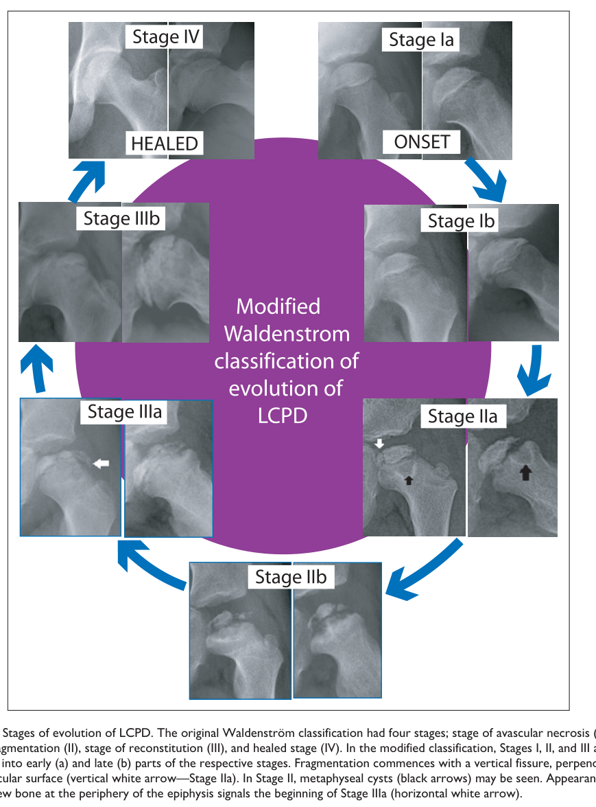

Legg-Calve-Perthes disease is idiopathic ischemic osteonecrosis of the capital femoral epiphysis in a growing child, with peak onset between 4 and 8 years of age and a marked male predominance. Interruption of the precarious blood supply to the epiphysis kills the chondrocytes of the epiphyseal cartilage and the bone and marrow of the secondary ossification centre and injures the proximal femoral growth plate. Necrotic tissue releases damage-associated molecular patterns that drive a chronic hip synovitis and bias repair toward inflammation and osteoclastic resorption, so the revascularizing femoral head passes through a resorption-dominant fragmentation phase in which it is mechanically weakest while still bearing load. Subchondral fracture and collapse during that phase determine the residual deformity at skeletal maturity, and the degree of femoral head asphericity and incongruency determines the risk of premature secondary osteoarthritis. The disease is self-limited over roughly two to five years through the Waldenstrom stages of necrosis, fragmentation, reossification and healing; treatment is directed at containment and unloading of the femoral head during the vulnerable phase rather than at the initiating ischemia, whose cause remains undetermined. Thrombophilic variants, secondhand tobacco smoke exposure and childhood socioeconomic deprivation are associated risk factors, and a rare autosomal dominant COL2A1 type II collagenopathy phenocopies the disorder in familial cases.
Ask a research question about Legg-Calve-Perthes Disease. OpenScientist will conduct autonomous deep research using the Disorder Mechanisms Knowledge Base and PubMed literature (typically 10-30 minutes).
Do not include personal health information in your question. Questions and results are cached in your browser's local storage.
name: Legg-Calve-Perthes Disease
creation_date: "2026-10-06T00:00:00Z"
category: Complex
description: >
Legg-Calve-Perthes disease is idiopathic ischemic osteonecrosis of the capital
femoral epiphysis in a growing child, with peak onset between 4 and 8 years of age
and a marked male predominance. Interruption of the precarious blood supply to the
epiphysis kills the chondrocytes of the epiphyseal cartilage and the bone and marrow
of the secondary ossification centre and injures the proximal femoral growth plate.
Necrotic tissue releases damage-associated molecular patterns that drive a chronic
hip synovitis and bias repair toward inflammation and osteoclastic resorption, so the
revascularizing femoral head passes through a resorption-dominant fragmentation phase
in which it is mechanically weakest while still bearing load. Subchondral fracture
and collapse during that phase determine the residual deformity at skeletal maturity,
and the degree of femoral head asphericity and incongruency determines the risk of
premature secondary osteoarthritis. The disease is self-limited over roughly two to
five years through the Waldenstrom stages of necrosis, fragmentation, reossification
and healing; treatment is directed at containment and unloading of the femoral head
during the vulnerable phase rather than at the initiating ischemia, whose cause remains
undetermined. Thrombophilic variants, secondhand tobacco smoke exposure and childhood
socioeconomic deprivation are associated risk factors, and a rare autosomal dominant
COL2A1 type II collagenopathy phenocopies the disorder in familial cases.
disease_term:
preferred_term: Legg-Calve-Perthes disease
term:
id: MONDO:0007885
label: Legg-Calve-Perthes disease
parents:
- Osteochondrosis
- Skeletal Disorder
synonyms:
- Perthes disease
- LCPD
- Legg-Perthes disease
- Coxa plana
- Juvenile idiopathic osteonecrosis of the femoral head
inheritance:
- name: Multifactorial (sporadic) inheritance
inheritance_term:
preferred_term: Multifactorial, non-Mendelian inheritance
term:
id: HP:0001426
label: Non-Mendelian inheritance
description: >-
The common form of Legg-Calve-Perthes disease is sporadic and non-Mendelian. A
systematic review of 64 etiology studies found no decisive single cause and a
multifactorial genesis combining mechanical, genetic and systemic contributors, and
a Danish twin-registry study found familial clustering without a demonstrable
genetic component (no concordant monozygotic pairs). The thrombophilic,
environmental and polymorphism associations in this entry are modelled as risk
factors rather than as components of one confirmed causal chain.
evidence:
- reference: PMID:30918798
reference_title: "Aetiology of Legg-Calvé-Perthes disease: A systematic review."
supports: SUPPORT
evidence_source: HUMAN_CLINICAL
quote_role: REVIEW_SYNTHESIS
snippet: "The major hypothesis relies on a multifactorial genesis involving mechanical, genetic and systemic conditions."
explanation: >-
The systematic review's synthesis of the etiology literature names a multifactorial
genesis as the leading hypothesis.
- reference: PMID:26908702
reference_title: A Twin Study of Perthes Disease.
supports: SUPPORT
evidence_source: HUMAN_CLINICAL
snippet: "This study found evidence of familial clustering in LCPD but did not show a genetic component."
explanation: >-
Twin-registry evidence against a major genetic determinant for the common sporadic
form, consistent with a multifactorial rather than Mendelian mode.
- reference: PMID:26908702
reference_title: A Twin Study of Perthes Disease.
supports: SUPPORT
evidence_source: HUMAN_CLINICAL
snippet: "There were no concordant monozygotic twin pairs."
explanation: Reports the monozygotic concordance finding behind that conclusion.
- name: Autosomal dominant COL2A1 phenocopy
inheritance_term:
preferred_term: Autosomal dominant inheritance
term:
id: HP:0000006
label: Autosomal dominant inheritance
description: >-
A minority of Legg-Calve-Perthes disease is familial, and in a Japanese pedigree the
autosomal dominant hip disorder manifesting as LCPD segregated with a COL2A1
missense variant (p.G1170S). This is a type II collagenopathy phenocopy of the
sporadic disease, and no sporadic case with a COL2A1 variant had been reported in the
2025 review cited on the COL2A1 pathophysiology node.
evidence:
- reference: PMID:17394019
reference_title: A recurrent mutation in type II collagen gene causes Legg-Calvé-Perthes disease in a Japanese family.
supports: SUPPORT
evidence_source: HUMAN_CLINICAL
snippet: "a Japanese family with an autosomal dominant hip disorder manifesting as LCPD"
explanation: >-
Directly states the autosomal dominant inheritance pattern of the COL2A1-linked
familial LCPD pedigree.
prevalence:
- population: Children under 15 years of age, reported range across populations
measure_type: POINT_PREVALENCE
prevalence_class: BAND_1_9_PER_100000
rate_low: 0.4
rate_high: 29.0
notes: >-
Reported estimates from a 2019 systematic review of 64 articles ranged widely (0.4
to 29.0 per 100,000 children under 15), depending on the population studied; the
coarse band reflects the middle of that range rather than a single consensus
estimate. Peak incidence is at 4 to 8 years of age with a male-to-female ratio of
about 4:1.
evidence:
- reference: PMID:30918798
reference_title: "Aetiology of Legg-Calvé-Perthes disease: A systematic review."
supports: SUPPORT
evidence_source: HUMAN_CLINICAL
snippet: "Its prevalence is set to be between 0.4/100000 to 29.0/100000 children less than 15 years of age with a peak of incidence in children aged from 4 years to 8 years."
explanation: Systematic review reporting the population prevalence range and peak age of onset.
- reference: PMID:40041162
reference_title: Progress in understanding Legg-Calvé-Perthes disease etiology from a molecular and cellular biology perspective.
supports: SUPPORT
evidence_source: HUMAN_CLINICAL
quote_role: REVIEW_SYNTHESIS
snippet: "which occurs in children aged 4-8 years (mean 6.5 years), with a male-to-female ratio of about 4:1"
explanation: Review figure for the sex ratio and mean age at onset.
- population: Children under 15 years of age, 27 populations in 16 countries (systematic review of incidence studies to 2010)
measure_type: ANNUAL_INCIDENCE
prevalence_class: BAND_1_9_PER_100000
rate_low: 0.2
rate_high: 19.1
rate_denominator: POPULATION_PER_YEAR
notes: >-
Annual incidence per 100,000 children under 15 across 124 million person-years of
observation. Race was a key determinant (East Asian populations least affected,
white populations most) and each 10 degrees of latitude increased incidence 1.44
fold after adjustment for race.
evidence:
- reference: PMID:22223709
reference_title: "Racial and geographic factors in the incidence of Legg-Calvé-Perthes' disease: a systematic review."
supports: SUPPORT
evidence_source: HUMAN_CLINICAL
snippet: "The annual incidence among children under age 15 years ranged from 0.2 per 100,000 to 19.1 per 100,000."
explanation: Pooled incidence range from the systematic review of population studies.
- reference: PMID:22223709
reference_title: "Racial and geographic factors in the incidence of Legg-Calvé-Perthes' disease: a systematic review."
supports: SUPPORT
evidence_source: HUMAN_CLINICAL
snippet: "Each 10° increase in latitude was associated with an incidence increase of 1.44 (95% CI: 1.30, 1.58) times."
explanation: Quantifies the latitude gradient recorded in the notes.
- population: United Kingdom children aged 0-14 years, General Practice Research Database, 1990-2008
measure_type: ANNUAL_INCIDENCE
prevalence_class: BAND_1_9_PER_100000
rate_low: 5.7
rate_high: 12.2
rate_denominator: POPULATION_PER_YEAR
notes: >-
Annual incidence fell from 12.2 to 5.7 per 100,000 over the 19-year period, with
Scottish rates more than twice those of London and a linear relationship between
regional incidence and regional deprivation score.
evidence:
- reference: PMID:22143958
reference_title: "Legg-Calvé-Perthes disease in the UK: geographic and temporal trends in incidence reflecting differences in degree of deprivation in childhood."
supports: SUPPORT
evidence_source: HUMAN_CLINICAL
snippet: "Over the 19-year period there was a dramatic decline in Legg-Calvé-Perthes disease incidence, with annual rates among children 0-14 years old declining from 12.2 per 100,000 to 5.7 per 100,000 (P < 0.001)."
explanation: Reports the start and end incidence figures that bound this record.
genetic:
- name: COL2A1
gene_term:
preferred_term: COL2A1
term:
id: hgnc:2200
label: COL2A1
relationship_type: CAUSATIVE
variant_origin: GERMLINE
presence: Rare
association: >
A rare autosomal dominant Mendelian type II collagenopathy phenocopy of
Legg-Calve-Perthes disease. Most cases are sporadic and non-Mendelian, but familial
or bilateral cases should raise suspicion for a COL2A1 variant.
evidence:
- reference: PMID:17394019
reference_title: A recurrent mutation in type II collagen gene causes Legg-Calvé-Perthes disease in a Japanese family.
supports: SUPPORT
evidence_source: HUMAN_CLINICAL
snippet: "We have located a missense mutation (p.G1170S) in the type II collagen gene (COL2A1) in a Japanese family with an autosomal dominant hip disorder manifesting as LCPD"
explanation: Identifies the specific COL2A1 missense variant segregating with the familial phenocopy.
- reference: PMID:40041162
reference_title: Progress in understanding Legg-Calvé-Perthes disease etiology from a molecular and cellular biology perspective.
supports: SUPPORT
evidence_source: HUMAN_CLINICAL
quote_role: REVIEW_SYNTHESIS
snippet: "No sporadic cases of LCPD with COL2A1 mutations have been reported so far (Kim, 2011)."
explanation: Bounds the gene's role to familial cases, which is why presence is recorded as rare.
- name: F5 (Factor V Leiden)
gene_term:
preferred_term: F5
term:
id: hgnc:3542
label: F5
relationship_type: RISK_FACTOR
presence: Common
association: >
The Factor V Leiden thrombophilic variant is associated with increased risk of
Legg-Calve-Perthes disease in a Dutch case-control study and in a meta-analysis of
twelve case-control studies (824 cases, pooled allele odds ratio 3.10), supporting a
thrombotic contribution to the ischemic mechanism in a subset of cases. The
association has not been reproduced in every population.
evidence:
- reference: PMID:20048104
reference_title: Coagulation abnormalities in Legg-Calvé-Perthes disease.
supports: SUPPORT
evidence_source: HUMAN_CLINICAL
snippet: "The incidence of Legg-Calvé-Perthes disease was increased in the presence of the factor V Leiden mutation (odds ratio, 3.3; 95% confidence interval, 1.6 to 6.7)"
explanation: Case-control odds ratio for Legg-Calve-Perthes disease with the Factor V Leiden variant.
- reference: PMID:23983171
reference_title: Meta-analysis of hypercoagulability genetic polymorphisms in Perthes disease.
supports: SUPPORT
evidence_source: HUMAN_CLINICAL
snippet: "There were 824 cases and 2,033 controls with a mean age range of 6.1-14.7 years."
explanation: Size of the pooled case-control population behind the meta-analytic estimate.
- reference: PMID:23983171
reference_title: Meta-analysis of hypercoagulability genetic polymorphisms in Perthes disease.
supports: SUPPORT
evidence_source: HUMAN_CLINICAL
snippet: "The factor V Leiden mutation is significantly related to Perthes disease, and its screening in at-risk children might be useful in the future."
explanation: The meta-analysis conclusion for Factor V Leiden.
- reference: PMID:40041162
reference_title: Progress in understanding Legg-Calvé-Perthes disease etiology from a molecular and cellular biology perspective.
supports: REFUTE
evidence_source: HUMAN_CLINICAL
quote_role: REVIEW_SYNTHESIS
snippet: "Israeli researchers studied 119 LCPD patients and 276 normal children, finding no difference in the factor V Leiden mutation rate between the LCPD group (7/119) and the normal group (13/276) (Kenet et al., 2008)."
explanation: >-
A population in which the Factor V Leiden association was not found, recorded so the
risk-factor claim is read as inconsistent across cohorts rather than settled.
- name: F2 (Prothrombin G20210A)
gene_term:
preferred_term: F2
term:
id: hgnc:3535
label: F2
relationship_type: RISK_FACTOR
presence: Common
association: >
The prothrombin G20210A variant is associated with increased risk of
Legg-Calve-Perthes disease in the same Dutch case-control cohort as the Factor V
Leiden finding, but the pooled estimate across twelve case-control studies did not
reach significance, so the association is weaker than that of Factor V Leiden.
evidence:
- reference: PMID:20048104
reference_title: Coagulation abnormalities in Legg-Calvé-Perthes disease.
supports: SUPPORT
evidence_source: HUMAN_CLINICAL
snippet: "in the presence of the prothrombin G20210A mutation (odds ratio, 2.6; 95% confidence interval, 1.0 to 6.3)"
explanation: Case-control odds ratio for Legg-Calve-Perthes disease with the prothrombin G20210A variant.
- reference: PMID:23983171
reference_title: Meta-analysis of hypercoagulability genetic polymorphisms in Perthes disease.
supports: REFUTE
evidence_source: HUMAN_CLINICAL
snippet: "The factor V Leiden allele increased the risk of Perthes with a pooled OR of 3.10 (95% CI: 1.68, 5.72), while prothrombin II and MTHFR had non-significantly pooled OR 1.48 (95% CI: 0.71, 3.08), and 0.97 (95% CI: 0.72, 1.30), respectively."
explanation: >-
The pooled prothrombin G20210A estimate crosses unity, so the single-cohort
association is not supported at the meta-analytic level; recorded against the
risk-factor claim rather than as a refutation of any effect.
- name: IL6 (rs1800795)
gene_term:
preferred_term: IL6
term:
id: hgnc:6018
label: IL6
relationship_type: RISK_FACTOR
presence: Possible
association: >
The IL-6 promoter polymorphism rs1800795 variant allele was associated with increased
LCPD risk in a small Mexican case-control study (23 cases, 46 controls). The small
cohort and the absence of replication mean this is a candidate association, recorded
because IL-6 is the cytokine elevated in LCPD synovial fluid (see the synovitis
pathophysiology node).
evidence:
- reference: PMID:38648538
reference_title: "Bone Remodeling and Bone Structural Genes in Legg-Calvé-Perthes Disease: The OPG rs2073618 and IL-6 rs1800795 Are Associated with High Risk in Mexican Patients."
supports: SUPPORT
evidence_source: HUMAN_CLINICAL
snippet: "The variant allele (C) of IL-6 rs1800795 was associated with increased risk of LCPD"
explanation: Reports the association (OR 3.8, 95% CI 1.08-13.54 in the source; the interval is omitted from the quote because its bracketed form is stripped by the validator).
- name: TNFRSF11B (OPG rs2073618)
gene_term:
preferred_term: TNFRSF11B
term:
id: hgnc:11909
label: TNFRSF11B
relationship_type: RISK_FACTOR
presence: Possible
association: >
The osteoprotegerin (OPG) polymorphism rs2073618 was associated with LCPD risk in the
same small Mexican case-control study. OPG is the decoy receptor for RANKL, the axis
whose inhibition decreases femoral head deformity in the piglet model, which is why
the gene is attached to the resorption-dominant repair node.
evidence:
- reference: PMID:38648538
reference_title: "Bone Remodeling and Bone Structural Genes in Legg-Calvé-Perthes Disease: The OPG rs2073618 and IL-6 rs1800795 Are Associated with High Risk in Mexican Patients."
supports: SUPPORT
evidence_source: HUMAN_CLINICAL
snippet: "The OPG polymorphism rs2073618, specifically GC-GG carriers, was associated with a more than fourfold increased risk of developing LCPD"
explanation: Reports the association in the 23-case cohort (OR 4.34, 95% CI 1.04-18.12 after BMI and factor V adjustment in the source).
- name: IL23R (rs1569922)
gene_term:
preferred_term: IL23R
term:
id: hgnc:19100
label: IL23R
relationship_type: RISK_FACTOR
presence: Possible
association: >
IL-23R rs1569922 T/T and C/T genotypes were associated with LCPD in a second small
Mexican case-control study (23 cases, 23 controls) that also found hypercoagulable
laboratory profiles and raised inflammatory indices in cases. Candidate association,
unreplicated.
evidence:
- reference: PMID:41153343
reference_title: Association of IL-23R rs1569922 and Other Probable Frequent Etiological Factors with Legg-Calvé-Perthes Disease in Mexican Patients.
supports: SUPPORT
evidence_source: HUMAN_CLINICAL
snippet: "statistically significant differences were found in the IL-23R rs1569922 polymorphism; it was found that carriers of the T/T and C/T genotypes have an increased risk of developing LCPD."
explanation: Reports the genotype association in the case-control cohort.
pathophysiology:
- name: Interruption of the Capital Femoral Epiphyseal Blood Supply
conforms_to: "ischemic_bone_necrosis_and_repair#Bone Vascular Supply Interruption"
biological_scale: TISSUE
role: trigger
description: >
The initiating event is loss of perfusion of the capital femoral epiphysis, whose
blood supply in the growing child runs through cartilage canals and retinacular
vessels with little collateral reserve. Dynamic gadolinium-enhanced MRI detects the
epiphyseal ischemia directly in children, and the pattern of later revascularization
(lateral pillar, medial pillar or transphyseal) is prognostic. What interrupts the
supply is not established: mechanically induced ischemia of a precarious epiphyseal
circulation is the best-supported theory, a thrombophilic contribution is supported
in some cohorts, and a model of successive rather than single occlusions is
classical but unproven (see mechanistic_hypotheses and the etiology knowledge gap).
cell_types:
- preferred_term: epiphyseal vascular endothelial cell
term:
id: CL:0000115
label: endothelial cell
locations:
- preferred_term: capital femoral epiphysis
term:
id: UBERON:0006767
label: head of femur
biological_processes:
- preferred_term: response to ischemia
term:
id: GO:0002931
label: response to ischemia
- preferred_term: epiphyseal angiogenesis
term:
id: GO:0001525
label: angiogenesis
modifier: DECREASED
evidence:
- reference: PMID:12136349
reference_title: "Femoral head vascularisation in Legg-Calvé-Perthes disease: comparison of dynamic gadolinium-enhanced subtraction MRI with bone scintigraphy."
supports: SUPPORT
evidence_source: HUMAN_CLINICAL
snippet: "DGS MRI allows early detection of epiphyseal ischaemia and accurate analysis of the different revascularisation patterns."
explanation: >-
Human perfusion imaging demonstrating the epiphyseal ischemia in children with the
disease, so the trigger node does not rest on animal work alone.
- reference: PMID:36696941
reference_title: Effects of acute femoral head ischemia on the growth plate and metaphysis in a piglet model of Legg-Calvé-Perthes disease.
supports: SUPPORT
evidence_source: HUMAN_CLINICAL
quote_role: BACKGROUND
snippet: "While its underlying cause has not been determined, the disease is characterized by a disruption to the blood supply (ischemia) of the femoral head, with subsequent necrosis of the femoral head"
explanation: >-
Background statement of the defining lesion of the human disease, quoted from the
introduction of a piglet study; the piglet work itself is cited on the growth-plate node.
- reference: PMID:30918798
reference_title: "Aetiology of Legg-Calvé-Perthes disease: A systematic review."
supports: SUPPORT
evidence_source: HUMAN_CLINICAL
quote_role: REVIEW_SYNTHESIS
snippet: "One of the most supported theories involved mechanical induced ischemia that evolved into avascular necrosis of the femoral head in sensible patients."
explanation: >-
The systematic review's assessment of the leading theory for what interrupts the
supply; the same review records that no theory was decisive.
downstream:
- target: Epiphyseal Cartilage-Canal Ischemic Chondronecrosis
description: >
Loss of the cartilage-canal supply kills the chondrocytes and canal endothelium of
the epiphyseal cartilage before any bone at that site is affected.
causal_link_type: DIRECT
hypothesis_groups:
- lcpd_ischemic_resorptive_repair_model
evidence:
- reference: PMID:23428601
reference_title: "Transection of vessels in epiphyseal cartilage canals leads to osteochondrosis and osteochondrosis dissecans in the femoro-patellar joint of foals; a potential model of juvenile osteochondritis dissecans."
supports: SUPPORT
evidence_source: MODEL_ORGANISM
directness: INDIRECT
snippet: "Transection of blood vessels within epiphyseal cartilage canals resulted in necrosis of vessels and chondrocytes, i.e., ischaemic chondronecrosis, in foals."
explanation: >-
Causal experimental demonstration that cutting the cartilage-canal supply produces
ischemic chondronecrosis; indirect because it is an equine femoro-patellar model
rather than the human hip.
- target: Ischemic Necrosis of the Secondary Ossification Centre
description: >
The same loss of perfusion kills the osteocytes and marrow of the bony epiphysis,
which in the child's femoral head is the major site of ischemic injury.
causal_link_type: DIRECT
hypothesis_groups:
- lcpd_ischemic_resorptive_repair_model
evidence:
- reference: PMID:34571205
reference_title: Damage associated molecular patterns in necrotic femoral head inhibit osteogenesis and promote fibrogenesis of mesenchymal stem cells.
supports: SUPPORT
evidence_source: HUMAN_CLINICAL
quote_role: BACKGROUND
snippet: "In Legg-Calvé-Perthes disease (LCPD), a loss of blood supply to the juvenile femoral head leads to extensive cell death and release of damage-associated molecular patterns (DAMPs)."
explanation: >-
States the ischemia-to-cell-death step for the human disease in the framing of a
piglet study, whose own measurements are cited on the DAMP node.
- name: Thrombophilic Predisposition to Epiphyseal Vascular Occlusion
biological_scale: MOLECULAR
role: disposition
description: >
Inherited and acquired hypercoagulable states are over-represented in some LCPD
cohorts: Factor V Leiden and prothrombin G20210A carriage, raised factor VIII and
protein S deficiency in a Dutch case-control study, and shortened prothrombin time
with raised factor V and IX activity and homocysteine in a Mexican cohort. The
proposed route is venous thrombosis obstructing outflow from the epiphysis, but the
thrombosis itself has not been demonstrated in affected children, other populations
have found no Factor V Leiden excess, and the risk increased with the number of
coagulation abnormalities in males only. The node is therefore a predisposition
feeding the trigger through unknown intermediates, not a demonstrated initiating
lesion.
genes:
- preferred_term: F5
description: Factor V Leiden thrombophilic allele, a risk factor rather than a Mendelian cause.
term:
id: hgnc:3542
label: F5
- preferred_term: F2
description: Prothrombin G20210A thrombophilic allele.
term:
id: hgnc:3535
label: F2
molecular_functions:
- preferred_term: thrombin serine-type endopeptidase activity (thrombin generation)
description: >-
The two risk alleles converge on thrombin generation: prothrombin G20210A raises
plasma prothrombin, and Factor V Leiden resists inactivation of factor Va by
activated protein C so prothrombinase activity persists. GO records no cofactor
activity for factor V, so the node's activity is bound at the protease both alleles
feed.
term:
id: GO:0004252
label: serine-type endopeptidase activity
modifier: INCREASED
biological_processes:
- preferred_term: hypercoagulable state (blood coagulation)
term:
id: GO:0007596
label: blood coagulation
modifier: INCREASED
evidence:
- reference: PMID:40041162
reference_title: Progress in understanding Legg-Calvé-Perthes disease etiology from a molecular and cellular biology perspective.
supports: SUPPORT
evidence_source: HUMAN_CLINICAL
quote_role: REVIEW_SYNTHESIS
snippet: "the resistance to activated protein C, prone to thrombosis tendency, may be the pathogenic factor of LCPD"
explanation: >-
The review's summary of the Glueck 1997 series, naming activated protein C
resistance, the Factor V Leiden mechanism, as the thrombotic route; this is the
sustained prothrombinase activity the molecular-function binding records.
- reference: PMID:20048104
reference_title: Coagulation abnormalities in Legg-Calvé-Perthes disease.
supports: SUPPORT
evidence_source: HUMAN_CLINICAL
snippet: "There appears to be a thrombotic component in the etiology of Legg-Calvé-Perthes disease."
explanation: The case-control study's conclusion on the thrombophilic contribution.
- reference: PMID:20048104
reference_title: Coagulation abnormalities in Legg-Calvé-Perthes disease.
supports: SUPPORT
evidence_source: HUMAN_CLINICAL
snippet: "The risk of Legg-Calvé-Perthes disease increased with an increasing number of coagulation abnormalities in males but not in females."
explanation: Records the sex restriction of the dose-response, which limits the generality of the claim.
- reference: PMID:41153343
reference_title: Association of IL-23R rs1569922 and Other Probable Frequent Etiological Factors with Legg-Calvé-Perthes Disease in Mexican Patients.
supports: SUPPORT
evidence_source: HUMAN_CLINICAL
snippet: "Statistically significant differences were found in Prothrombin Time, Factor V, and Factor IX activity, as well as Hcy concentration; these values suggest the presence of hypercoagulable states in patients, which can cause thrombotic events."
explanation: Independent cohort reporting hypercoagulable laboratory profiles in cases.
downstream:
- target: Interruption of the Capital Femoral Epiphyseal Blood Supply
description: >
Thrombophilia is proposed to occlude the venous drainage or arterial supply of the
epiphysis and so precipitate the ischemia; the intermediate thrombotic event has not
been observed in patients.
causal_link_type: INDIRECT_UNKNOWN_INTERMEDIATES
hypothesis_groups:
- lcpd_thrombophilia_hypothesis
evidence:
- reference: PMID:40041162
reference_title: Progress in understanding Legg-Calvé-Perthes disease etiology from a molecular and cellular biology perspective.
supports: SUPPORT
evidence_source: HUMAN_CLINICAL
directness: INDIRECT
quote_role: REVIEW_SYNTHESIS
snippet: "Thrombophilia can potentially lead to venous thrombosis, which obstructs blood flow from the femoral head epiphysis, resulting in ischemia."
explanation: The review's statement of the proposed mechanism, phrased as a possibility rather than an observation.
- name: Epiphyseal Cartilage-Canal Ischemic Chondronecrosis
conforms_to: "ischemic_bone_necrosis_and_repair#Epiphyseal Cartilage-Canal Ischemic Chondronecrosis"
biological_scale: CELLULAR
role: effector
description: >
In the growing femoral head the epiphyseal cartilage is nourished by vessels running
through cartilage canals. Loss of that supply kills chondrocytes and canal endothelium
in the epiphyseal cartilage, the lesion that defines the articular osteochondrosis
family and that was reproduced causally by transecting cartilage-canal vessels in
foals. In Legg-Calve-Perthes disease the ischemic damage to epiphyseal cartilage is
one of the three cellular processes current reviews place at the centre of the
disease, alongside osteoclast activation and marrow immune activation.
cell_types:
- preferred_term: epiphyseal growth cartilage chondrocyte
term:
id: CL:0000138
label: chondrocyte
- preferred_term: cartilage-canal endothelial cell
term:
id: CL:0000115
label: endothelial cell
locations:
- preferred_term: epiphyseal cartilage of the femoral head
term:
id: UBERON:0001437
label: epiphysis
biological_processes:
- preferred_term: chondrocyte death
term:
id: GO:0008219
label: cell death
modifier: INCREASED
- preferred_term: response to ischemia
term:
id: GO:0002931
label: response to ischemia
evidence:
- reference: PMID:23428601
reference_title: "Transection of vessels in epiphyseal cartilage canals leads to osteochondrosis and osteochondrosis dissecans in the femoro-patellar joint of foals; a potential model of juvenile osteochondritis dissecans."
supports: SUPPORT
evidence_source: MODEL_ORGANISM
snippet: "Transection of blood vessels within epiphyseal cartilage canals resulted in necrosis of vessels and chondrocytes, i.e., ischaemic chondronecrosis, in foals."
explanation: Causal experimental evidence that cartilage-canal vascular failure produces ischemic chondronecrosis.
- reference: PMID:40041162
reference_title: Progress in understanding Legg-Calvé-Perthes disease etiology from a molecular and cellular biology perspective.
supports: SUPPORT
evidence_source: HUMAN_CLINICAL
quote_role: REVIEW_SYNTHESIS
snippet: "Abnormal activation of osteoclasts, ischemic damage to epiphyseal cartilage, and activation of the bone marrow immune system all play important roles in the onset and progression of the disease."
explanation: Places ischemic epiphyseal cartilage damage among the central cellular processes of LCPD.
downstream:
- target: Proximal Femoral Growth Plate Injury and Delayed Endochondral Ossification
description: >
Ischemic chondronecrosis of growth cartilage delays endochondral ossification at the
affected site; in the femoral head the proximal femoral physis shares the injury.
causal_link_type: DIRECT
hypothesis_groups:
- lcpd_ischemic_resorptive_repair_model
evidence:
- reference: PMID:23428601
reference_title: "Transection of vessels in epiphyseal cartilage canals leads to osteochondrosis and osteochondrosis dissecans in the femoro-patellar joint of foals; a potential model of juvenile osteochondritis dissecans."
supports: SUPPORT
evidence_source: MODEL_ORGANISM
directness: INDIRECT
snippet: "Areas of ischaemic chondronecrosis were associated with a focal delay in enchondral ossification (OC) in foals examined 21 days or more after transection, and pathological cartilage fracture (OCD) in one foal examined 42 days after transection."
explanation: Experimental sequence from chondronecrosis to delayed ossification; equine model, hence indirect.
- target: Avascular Necrosis of the Capital Femoral Epiphysis
description: The necrotic epiphysis is the radiographic and MRI hallmark of the disease.
causal_link_type: DIRECT
evidence:
- reference: PMID:30918798
reference_title: "Aetiology of Legg-Calvé-Perthes disease: A systematic review."
supports: SUPPORT
evidence_source: HUMAN_CLINICAL
quote_role: REVIEW_SYNTHESIS
snippet: "Historically considered an osteochondrosis, it is now being referred to as an idiopathic avascular necrosis of the femoral head in the paediatric population."
explanation: The review's framing of the disease as avascular necrosis of the femoral head in children.
- name: Ischemic Necrosis of the Secondary Ossification Centre
conforms_to: "ischemic_bone_necrosis_and_repair#Ischemic Osteocyte and Marrow Cell Death"
biological_scale: CELLULAR
role: effector
description: >
The bony secondary ossification centre of the femoral head is the major site of
ischemic injury. Osteocytes die in their lacunae and the marrow undergoes necrosis,
leaving empty osteocyte lacunae, necrotic debris in the marrow spaces and trabecular
surfaces bare of osteoblasts and osteoclasts until revascularization reaches them.
Dying cells release the damage-associated molecular patterns that shape the repair
response.
cell_types:
- preferred_term: osteocyte
term:
id: CL:0000137
label: osteocyte
locations:
- preferred_term: bone marrow of the capital femoral epiphysis
term:
id: UBERON:0002371
label: bone marrow
- preferred_term: subchondral bone of the femoral head
term:
id: UBERON:0035878
label: subchondral region of epiphysis
biological_processes:
- preferred_term: osteocyte and marrow cell death
term:
id: GO:0008219
label: cell death
modifier: INCREASED
- preferred_term: response to hypoxia
term:
id: GO:0001666
label: response to hypoxia
evidence:
- reference: PMID:36696941
reference_title: Effects of acute femoral head ischemia on the growth plate and metaphysis in a piglet model of Legg-Calvé-Perthes disease.
supports: SUPPORT
evidence_source: HUMAN_CLINICAL
quote_role: BACKGROUND
snippet: "While the major site of ischemic injury in LCPD is the bony proximal femoral epiphysis, there is evidence that the epiphyseal growth plate is also injured."
explanation: Identifies the bony epiphysis as the principal site of ischemic injury in the human disease.
- reference: PMID:40342202
reference_title: Morphologic and Histologic Assessment of Porcine Model of Legg-Calvé-Perthes Disease at a Clinically Relevant Time Point.
supports: SUPPORT
evidence_source: MODEL_ORGANISM
snippet: "Necrotic area was defined by the presence of cells with pyknosis and karyolysis of nuclei, abundance of empty osteocyte lacunae, necrotic cell debris filling the marrow space, and the absence of osteoblasts or osteoclasts on trabecular surfaces."
explanation: The histological definition of the necrotic epiphyseal bone in the piglet model, which is the cellular state this node describes.
downstream:
- target: Necrotic-Bone DAMP Release and Chronic Hip Synovitis
description: >
Necrotic bone and marrow release HMGB1, biglycan, 4-HNE and RANKL and accumulate
IL-1beta, IL-6 and TNF-alpha over the first weeks of osteonecrosis.
causal_link_type: DIRECT
hypothesis_groups:
- lcpd_inflammatory_repair_bias_hypothesis
evidence:
- reference: PMID:34571205
reference_title: Damage associated molecular patterns in necrotic femoral head inhibit osteogenesis and promote fibrogenesis of mesenchymal stem cells.
supports: SUPPORT
evidence_source: MODEL_ORGANISM
snippet: "ELISA of the NBF revealed increasing levels of inflammatory cytokines IL1β, IL6 and TNFα with the temporal progression of osteonecrosis."
explanation: Measured cytokine accumulation in necrotic bone fluid from the piglet femoral head after ischemia.
- target: Resorption-Dominant Revascularization and Fragmentation of the Femoral Head
description: >
Revascularization of the necrotic epiphysis delivers osteoclasts that remove dead
bone faster than new bone is formed.
causal_link_type: DIRECT
hypothesis_groups:
- lcpd_ischemic_resorptive_repair_model
evidence:
- reference: PMID:17002576
reference_title: "RANKL inhibition: a novel strategy to decrease femoral head deformity after ischemic osteonecrosis."
supports: SUPPORT
evidence_source: HUMAN_CLINICAL
quote_role: BACKGROUND
snippet: "The development of FHD in LCPD is closely associated with the repair process, characterized by a predominance of bone resorption in its early stage that produces a fragmented appearance and collapse of the femoral head."
explanation: Background statement of the resorption-dominant repair of the necrotic human femoral head.
- target: Avascular Necrosis of the Capital Femoral Epiphysis
description: Necrosis of the ossification centre is what the radiographic phenotype names.
causal_link_type: DIRECT
evidence:
- reference: PMID:17394019
reference_title: A recurrent mutation in type II collagen gene causes Legg-Calvé-Perthes disease in a Japanese family.
supports: SUPPORT
evidence_source: HUMAN_CLINICAL
quote_role: BACKGROUND
snippet: "Legg-Calvé-Perthes disease (LCPD) is a common childhood hip disorder characterized by sequential stages of involvement of the capital femoral epiphyses, including subchondral fracture, fragmentation, re-ossification and healing with residual deformity."
explanation: Describes the staged involvement of the capital femoral epiphysis that follows its necrosis.
- name: Proximal Femoral Growth Plate Injury and Delayed Endochondral Ossification
conforms_to: "ischemic_bone_necrosis_and_repair#Growth Plate Injury and Delayed Endochondral Ossification"
biological_scale: TISSUE
role: effector
description: >
The proximal femoral physis, which drives longitudinal growth of the femoral neck, is
injured by the same ischemia. In the piglet model the proliferative and hypertrophic
zones thin within two days of ischemia and the primary spongiosa is thinned to absent
by seven days, with TGF-beta1 expression increased in the hypertrophic zone, so
endochondral ossification is disrupted far earlier than the four to eight weeks
previously reported. In children a proximal femoral growth disturbance occurs in
about a third of cases and more than half show metaphyseal radiolucent changes, the
clinical correlates of this node, and the growth disturbance takes the form of
angular deformity and a short femoral neck (coxa breva).
cell_types:
- preferred_term: growth plate cartilage chondrocyte
term:
id: CL:1000217
label: growth plate cartilage chondrocyte
locations:
- preferred_term: proximal femoral growth plate
term:
id: UBERON:0004129
label: growth plate cartilage
biological_processes:
- preferred_term: endochondral ossification
term:
id: GO:0001958
label: endochondral ossification
modifier: DECREASED
evidence:
- reference: PMID:36696941
reference_title: Effects of acute femoral head ischemia on the growth plate and metaphysis in a piglet model of Legg-Calvé-Perthes disease.
supports: SUPPORT
evidence_source: MODEL_ORGANISM
snippet: "By 2 days post-ischemia, there was significant thinning of the proliferative and hypertrophic zones, by 63 μm (95% CI -103, -22) and -19 μm (95% CI -33, -5), respectively."
explanation: Measured growth-plate zone thinning within two days of femoral head ischemia in the piglet.
- reference: PMID:36696941
reference_title: Effects of acute femoral head ischemia on the growth plate and metaphysis in a piglet model of Legg-Calvé-Perthes disease.
supports: SUPPORT
evidence_source: MODEL_ORGANISM
snippet: "Our findings suggest that endochondral ossification may be disrupted at an earlier time point than previously reported and that growth disruption may occur in the piglet model as occurs in some children with LCPD."
explanation: The authors' conclusion that endochondral ossification is disrupted acutely after ischemia.
- reference: PMID:36696941
reference_title: Effects of acute femoral head ischemia on the growth plate and metaphysis in a piglet model of Legg-Calvé-Perthes disease.
supports: SUPPORT
evidence_source: HUMAN_CLINICAL
quote_role: BACKGROUND
snippet: "The fact that a growth disturbance occurs in a third of LCPD patients suggests that there may be ischemic damage to the proximal femoral growth plate as part of the disease process"
explanation: The human clinical frequency of growth disturbance that motivates the node, quoted from the study's introduction.
downstream:
- target: Resorption-Dominant Revascularization and Fragmentation of the Femoral Head
description: >
Physeal injury delays new bone formation in the epiphysis, so the balance of the
repair phase tips further toward resorption. The edge mirrors the module's chain,
but no study has shown physeal damage driving epiphyseal osteoclastic resorption:
the cited review pairs delayed formation with increased resorption without naming
the physis, so the intermediates between this node and the resorptive phase are
unknown.
causal_link_type: INDIRECT_UNKNOWN_INTERMEDIATES
hypothesis_groups:
- lcpd_ischemic_resorptive_repair_model
evidence:
- reference: PMID:22488623
reference_title: Pathophysiology and new strategies for the treatment of Legg-Calvé-Perthes disease.
supports: SUPPORT
evidence_source: HUMAN_CLINICAL
quote_role: REVIEW_SYNTHESIS
directness: INDIRECT
snippet: "Increased bone resorption and delayed new bone formation, in combination with continued mechanical loading of the hip, contribute to the pathogenesis of the femoral head deformity."
explanation: >-
Review statement that delayed formation and increased resorption act together in
deformity; it does not mention the physis, so it supports the edge only through
the inference that physeal injury is one source of the delayed formation.
- target: Coxa Breva and Proximal Femoral Growth Disturbance
description: Physeal injury shortens the femoral neck and produces angular deformity of the proximal femur.
causal_link_type: DIRECT
evidence:
- reference: PMID:36696941
reference_title: Effects of acute femoral head ischemia on the growth plate and metaphysis in a piglet model of Legg-Calvé-Perthes disease.
supports: SUPPORT
evidence_source: HUMAN_CLINICAL
quote_role: BACKGROUND
snippet: "This growth plate is responsible for the longitudinal growth of the femoral neck, and its injury can lead to proximal femoral growth disturbance in the form of angular deformity and shortening of the femoral neck (coxa breva)"
explanation: States the clinical consequence of proximal femoral physeal injury.
- name: Necrotic-Bone DAMP Release and Chronic Hip Synovitis
conforms_to: "ischemic_bone_necrosis_and_repair#Necrotic Bone DAMP Release and Inflammatory Repair Bias"
biological_scale: TISSUE
role: amplifier
description: >
Necrotic bone fluid from the ischemic piglet femoral head contains the prototypic
alarmin HMGB1 together with biglycan, 4-hydroxynonenal and RANKL, and accumulates
IL-1beta, IL-6 and TNF-alpha over the weeks after infarction; it inhibits osteogenic
and promotes fibrogenic differentiation of mesenchymal stem cells, which is why the
repairing marrow fills with fibrous and adipose tissue rather than bone. In children
the inflammatory response is visible as a chronic hip synovitis: serial MRI shows
synovial fluid volume and enhancing synovium several-fold greater in the affected hip
for well over a year, synovial fluid IL-6 is markedly elevated while IL-1beta and
TNF-alpha are not, and systemic neutrophil-to-lymphocyte ratio and
systemic-immune-inflammation index are raised early in the disease. Blocking the IL-6
receptor after ischemia in immature mice preserves cartilage and increases epiphyseal
bone volume.
genes:
- preferred_term: IL6
description: The synovial-fluid cytokine elevated in active LCPD and the target of the preclinical tocilizumab rescue.
term:
id: hgnc:6018
label: IL6
- preferred_term: IL23R
description: Candidate inflammatory susceptibility polymorphism (rs1569922) from a small case-control study.
term:
id: hgnc:19100
label: IL23R
cell_types:
- preferred_term: macrophage
term:
id: CL:0000235
label: macrophage
- preferred_term: bone marrow mesenchymal stem cell
term:
id: CL:0000134
label: mesenchymal stem cell
- preferred_term: articular chondrocyte (synovial IL-6 source)
term:
id: CL:0000138
label: chondrocyte
molecular_functions:
- preferred_term: IL-6 engagement of its receptor (interleukin-6 receptor binding)
description: >-
Synovial fluid IL-6 is raised in the active stage while IL-1beta and TNF-alpha are
not, and blocking the IL-6 receptor rescues the immature-mouse model, so IL-6
receptor engagement is the activity this node turns on. The IL23R polymorphism
attached to the node is a candidate association only; no change in IL-23 receptor
activity is claimed.
term:
id: GO:0005138
label: interleukin-6 receptor binding
modifier: INCREASED
biological_processes:
- preferred_term: inflammatory response
term:
id: GO:0006954
label: inflammatory response
modifier: INCREASED
- preferred_term: osteoblast differentiation
term:
id: GO:0001649
label: osteoblast differentiation
modifier: DECREASED
- preferred_term: osteoclast differentiation
term:
id: GO:0030316
label: osteoclast differentiation
modifier: INCREASED
evidence:
- reference: PMID:34571205
reference_title: Damage associated molecular patterns in necrotic femoral head inhibit osteogenesis and promote fibrogenesis of mesenchymal stem cells.
supports: SUPPORT
evidence_source: MODEL_ORGANISM
snippet: "Western blot analysis of the NBF revealed the presence of prototypic DAMP, high mobility group box 1 (HMGB1), and other previously described DAMPs: biglycan, 4-hydroxynonenal (4-HNE), and receptor activator of NF-κB ligand (RANKL)."
explanation: Identifies the DAMPs present in necrotic femoral head fluid in the piglet model.
- reference: PMID:34571205
reference_title: Damage associated molecular patterns in necrotic femoral head inhibit osteogenesis and promote fibrogenesis of mesenchymal stem cells.
supports: SUPPORT
evidence_source: MODEL_ORGANISM
snippet: "Increased fibrous tissue and adipose tissue are seen in the marrow space with decreased osteogenesis in a piglet model of LCPD, suggesting inhibition of osteoblastic differentiation and stimulation of fibroblastic and adipogenic differentiation of mesenchymal stem cell (MSC) during the healing process."
explanation: Describes the fibrous and adipose repair tissue that replaces bone formation in the model.
- reference: PMID:25556551
reference_title: Legg-Calvé-Perthes disease produces chronic hip synovitis and elevation of interleukin-6 in the synovial fluid.
supports: SUPPORT
evidence_source: HUMAN_CLINICAL
snippet: "In the synovial fluid of the affected hips, IL-6 protein levels were significantly increased (LCPD: 509 ± 519 pg/mL, non-LCPD: 19 ± 22 pg/mL; p = 0.0005) on the multi-cytokine assay."
explanation: Human synovial fluid measurement of the IL-6 elevation.
- reference: PMID:25556551
reference_title: Legg-Calvé-Perthes disease produces chronic hip synovitis and elevation of interleukin-6 in the synovial fluid.
supports: SUPPORT
evidence_source: HUMAN_CLINICAL
snippet: "Interestingly, IL-1β and TNF-α levels were not elevated."
explanation: Records which cytokines were not elevated in human synovial fluid, so the node does not overstate the cytokine profile.
- reference: PMID:35356926
reference_title: "Predictive ability of inflammatory markers and laboratory parameters in Legg-Calvé-Perthes disease: A single-center retrospective comparative study."
supports: SUPPORT
evidence_source: HUMAN_CLINICAL
snippet: "At the time of osteotomy, compared to the control group, a significantly higher mean NLR or SII and a significantly lower mean alkaline phosphatase value were observed in the LCPD group."
explanation: Systemic inflammatory indices raised in children with LCPD at the time of surgery.
downstream:
- target: Resorption-Dominant Revascularization and Fragmentation of the Femoral Head
description: >
DAMP- and IL-6-driven inflammation raises the RANKL/OPG ratio and suppresses
osteogenic differentiation, biasing creeping substitution toward resorption.
causal_link_type: INDIRECT_KNOWN_INTERMEDIATES
hypothesis_groups:
- lcpd_inflammatory_repair_bias_hypothesis
evidence:
- reference: PMID:30404032
reference_title: IL6 receptor blockade preserves articular cartilage and increases bone volume following ischemic osteonecrosis in immature mice.
supports: SUPPORT
evidence_source: IN_VITRO
directness: INDIRECT
snippet: "A bone formation marker, BMP2, and an angiogenic marker, vascular endothelial growth factor (VEGF), were both significantly increased by tocilizumab treatment under hypoxia using human chondrocytes while the bone resorption marker, RANKL/OPG ratio, was reduced."
explanation: >-
IL-6 receptor blockade lowers the RANKL/OPG ratio in hypoxic human chondrocytes;
the edge is inferred from the intervention rather than observed directly.
- reference: PMID:34571205
reference_title: Damage associated molecular patterns in necrotic femoral head inhibit osteogenesis and promote fibrogenesis of mesenchymal stem cells.
supports: SUPPORT
evidence_source: HUMAN_CLINICAL
quote_role: BACKGROUND
directness: INDIRECT
snippet: "It is postulated that damage-associated molecular patterns (DAMPs) released by dying cells due to the loss of blood supply to the femoral head promote chronic inflammation and excessive bone resorption which result in the femoral head deformity"
explanation: States the postulated DAMP-to-resorption link that this edge records as a hypothesis.
- target: Chronic Hip Synovitis
description: The inflammatory response is clinically expressed as prolonged synovitis with effusion.
causal_link_type: DIRECT
evidence:
- reference: PMID:25556551
reference_title: Legg-Calvé-Perthes disease produces chronic hip synovitis and elevation of interleukin-6 in the synovial fluid.
supports: SUPPORT
evidence_source: HUMAN_CLINICAL
snippet: "In the active stage of LCPD, chronic hip synovitis and significant elevation of IL-6 are produced in the synovial fluid."
explanation: Human serial-MRI and synovial fluid study establishing the chronic synovitis.
- name: Resorption-Dominant Revascularization and Fragmentation of the Femoral Head
conforms_to: "ischemic_bone_necrosis_and_repair#Resorption-Dominant Revascularization and Creeping Substitution"
biological_scale: TISSUE
role: central_effector
description: >
Revascularization of the necrotic epiphysis brings osteoclasts that remove dead
trabeculae faster than osteoblasts lay down new bone, so the femoral head is
progressively weakened during the very process that repairs it. This is the
fragmentation stage, lasting one to two years, and it is the step every treatment
strategy targets: containment and unloading protect the weakened head mechanically,
and antiresorptive agents (bisphosphonates, RANKL inhibition) preserve trabecular
structure in the piglet model. Revascularization is highly variable between hips
at the same time point, which is one reason outcome varies so widely.
genes:
- preferred_term: TNFRSF11B
description: Osteoprotegerin, the RANKL decoy receptor; exogenous OPG-Fc decreases resorption and deformity in the piglet model, and an OPG polymorphism is a candidate risk allele.
term:
id: hgnc:11909
label: TNFRSF11B
cell_types:
- preferred_term: osteoclast
term:
id: CL:0000092
label: osteoclast
- preferred_term: osteoblast
term:
id: CL:0000062
label: osteoblast
- preferred_term: invading vascular endothelial cell
term:
id: CL:0000115
label: endothelial cell
locations:
- preferred_term: capital femoral epiphysis
term:
id: UBERON:0006767
label: head of femur
molecular_functions:
- preferred_term: RANKL binding to RANK (tumor necrosis factor receptor binding)
description: >-
Osteoclastic resorption of the necrotic epiphysis is RANKL-dependent: sequestering
RANKL with exogenous osteoprotegerin reduces resorption and deformity in the piglet,
and IL-6 receptor blockade lowers the RANKL/OPG ratio. Osteoprotegerin, the gene on
this node, is the decoy receptor that limits this binding.
term:
id: GO:0005164
label: tumor necrosis factor receptor binding
modifier: INCREASED
biological_processes:
- preferred_term: sprouting angiogenesis into the necrotic epiphysis
term:
id: GO:0002040
label: sprouting angiogenesis
- preferred_term: bone resorption
term:
id: GO:0045453
label: bone resorption
modifier: INCREASED
- preferred_term: new bone formation during repair
term:
id: GO:0001503
label: ossification
modifier: DECREASED
- preferred_term: bone remodeling
term:
id: GO:0046849
label: bone remodeling
modifier: ABNORMAL
evidence:
- reference: PMID:22488623
reference_title: Pathophysiology and new strategies for the treatment of Legg-Calvé-Perthes disease.
supports: SUPPORT
evidence_source: HUMAN_CLINICAL
quote_role: REVIEW_SYNTHESIS
snippet: "Increased bone resorption and delayed new bone formation, in combination with continued mechanical loading of the hip, contribute to the pathogenesis of the femoral head deformity."
explanation: Review statement of the resorption/formation imbalance under load.
- reference: PMID:17002576
reference_title: "RANKL inhibition: a novel strategy to decrease femoral head deformity after ischemic osteonecrosis."
supports: SUPPORT
evidence_source: HUMAN_CLINICAL
quote_role: BACKGROUND
snippet: "The development of FHD in LCPD is closely associated with the repair process, characterized by a predominance of bone resorption in its early stage that produces a fragmented appearance and collapse of the femoral head."
explanation: Background statement that the resorption-dominant repair produces the fragmented appearance.
- reference: PMID:40342202
reference_title: Morphologic and Histologic Assessment of Porcine Model of Legg-Calvé-Perthes Disease at a Clinically Relevant Time Point.
supports: SUPPORT
evidence_source: MODEL_ORGANISM
snippet: "A wide variability of revascularization was seen at the 3-week time point, which stresses the importance of evaluating femoral head perfusion and individualizing treatment even in the early stage of AVN."
explanation: Documents the between-hip variability of revascularization in the piglet model.
- reference: PMID:17002576
reference_title: "RANKL inhibition: a novel strategy to decrease femoral head deformity after ischemic osteonecrosis."
supports: SUPPORT
evidence_source: MODEL_ORGANISM
snippet: "RANKL inhibition through exogenous osteoprotegerin administration significantly decreased pathologic bone resorption and deformity during repair of the infarcted head."
explanation: Interventional evidence that the resorptive repair is RANKL-dependent and causally upstream of deformity in the piglet.
downstream:
- target: Subchondral Fracture and Collapse of the Mechanically Weakened Femoral Head
description: >
The resorbed, incompletely reossified epiphysis is mechanically weakened and
fractures or collapses under continued weight bearing.
causal_link_type: DIRECT
hypothesis_groups:
- lcpd_ischemic_resorptive_repair_model
evidence:
- reference: PMID:22488623
reference_title: Pathophysiology and new strategies for the treatment of Legg-Calvé-Perthes disease.
supports: SUPPORT
evidence_source: HUMAN_CLINICAL
quote_role: REVIEW_SYNTHESIS
snippet: "Experimental studies have revealed that the immature femoral head is mechanically weakened following ischemic necrosis."
explanation: The mechanical weakening that makes structural failure the next step.
- target: Fragmented and Flattened Femoral Epiphysis
description: Resorption of necrotic trabeculae produces the fragmented radiographic appearance of the epiphysis.
causal_link_type: DIRECT
evidence:
- reference: PMID:17002576
reference_title: "RANKL inhibition: a novel strategy to decrease femoral head deformity after ischemic osteonecrosis."
supports: SUPPORT
evidence_source: HUMAN_CLINICAL
quote_role: BACKGROUND
snippet: "The development of FHD in LCPD is closely associated with the repair process, characterized by a predominance of bone resorption in its early stage that produces a fragmented appearance and collapse of the femoral head."
explanation: Links the resorptive early repair to the fragmented appearance.
- target: Coxa Magna
description: >
The femoral head enlarges during the active (fragmentation) stage of repair, before
healing. The intermediate step is not established: reactive hyperaemia of the
synovitic hip driving overgrowth of the epiphyseal cartilage is the usual
explanation, but it has not been demonstrated in patients.
causal_link_type: INDIRECT_UNKNOWN_INTERMEDIATES
evidence:
- reference: PMID:15614054
reference_title: The correlation between coxa magna and final outcome in Legg-Calve-Perthes disease.
supports: SUPPORT
evidence_source: HUMAN_CLINICAL
snippet: "These coxa magna and resulting acetabular deformities occurred in the early stage of the disease."
explanation: Places the onset of the enlargement in the active stage, which is this node, rather than at healing.
- name: Subchondral Fracture and Collapse of the Mechanically Weakened Femoral Head
conforms_to: "ischemic_bone_necrosis_and_repair#Structural Failure of Necrotic Bone under Mechanical Load"
biological_scale: TISSUE
role: effector
description: >
Under continued hip loading the weakened epiphysis fractures beneath the articular
cartilage and the femoral head flattens and widens. Subchondral fracture marks the
late avascular-necrosis stage (Waldenstrom Ib), when most children first present with
pain, limp and loss of hip motion, and the extent of lateral-pillar collapse during
fragmentation (the Herring classification) is the strongest predictor of the final
shape of the head. The containment treatments act here: they redistribute load so
the head remodels within the acetabulum rather than extruding and flattening.
locations:
- preferred_term: subchondral bone of the femoral head
term:
id: UBERON:0035878
label: subchondral region of epiphysis
biological_processes:
- preferred_term: response to mechanical loading of the hip
term:
id: GO:0009612
label: response to mechanical stimulus
evidence:
- reference: PMID:37799310
reference_title: "Epidemiology, natural evolution, pathogenesis, clinical spectrum, and management of Legg-Calvé-Perthes."
supports: SUPPORT
evidence_source: HUMAN_CLINICAL
quote_role: REVIEW_SYNTHESIS
snippet: "Reversible deformation of the capital occurs in Stages Ia-IIa simply on standing while irreversible deformation may occur in Stages IIb and IIIa."
explanation: >-
Upright-versus-recumbent MRI in early-stage children shows the weakened epiphysis
deforming under body weight and recovering on unloading, which becomes permanent
from late fragmentation; the stage-dependence of load-driven collapse this node
claims.
- reference: PMID:40342202
reference_title: Morphologic and Histologic Assessment of Porcine Model of Legg-Calvé-Perthes Disease at a Clinically Relevant Time Point.
supports: SUPPORT
evidence_source: MODEL_ORGANISM
snippet: "X-ray and histologic assessments revealed subchondral fracture, mild femoral head deformity, variable degree of revascularization (33 ± 30%, range 0%-88%), and early necrotic bone remodeling changes with significantly decreased osteoblast (p < 0.0001) and osteoclast numbers (p < 0.0001) compared to the normal side."
explanation: Subchondral fracture and early deformity three weeks after ischemia in the piglet model.
- reference: PMID:17394019
reference_title: A recurrent mutation in type II collagen gene causes Legg-Calvé-Perthes disease in a Japanese family.
supports: SUPPORT
evidence_source: HUMAN_CLINICAL
quote_role: BACKGROUND
snippet: "Legg-Calvé-Perthes disease (LCPD) is a common childhood hip disorder characterized by sequential stages of involvement of the capital femoral epiphyses, including subchondral fracture, fragmentation, re-ossification and healing with residual deformity."
explanation: Places subchondral fracture in the human staged sequence.
- reference: PMID:1552014
reference_title: The lateral pillar classification of Legg-Calvé-Perthes disease.
supports: SUPPORT
evidence_source: HUMAN_CLINICAL
snippet: "The classification group was a stronger determinant than age of onset in predicting final outcome."
explanation: The degree of lateral pillar collapse predicts final femoral head shape in a cohort followed to maturity.
downstream:
- target: Residual Femoral Head Deformity and Secondary Osteoarthritis
description: The shape in which the head heals determines its congruency with the acetabulum and the long-term course.
causal_link_type: DIRECT
hypothesis_groups:
- lcpd_ischemic_resorptive_repair_model
evidence:
- reference: PMID:7276045
reference_title: The natural history of Legg-Calvé-Perthes disease.
supports: SUPPORT
evidence_source: HUMAN_CLINICAL
snippet: "The clinical and radiographic course of an involved hip subsequent to childhood was related to the type of congruency that existed between the femoral head and acetabulum."
explanation: Long-term cohort showing the residual shape governs the adult course.
- target: Hip Pain
description: Deformity and subchondral fracture of the head are what produce the presenting pain.
causal_link_type: DIRECT
evidence:
- reference: PMID:40342202
reference_title: Morphologic and Histologic Assessment of Porcine Model of Legg-Calvé-Perthes Disease at a Clinically Relevant Time Point.
supports: SUPPORT
evidence_source: HUMAN_CLINICAL
quote_role: BACKGROUND
snippet: "Development of femoral head deformity, as in Stage Ib and Stage II, is associated with various symptoms and signs, including pain, limping, decreased hip motion, and hip dysfunction."
explanation: Associates the onset of deformity with the presenting symptoms in children.
- target: Antalgic Limp
description: Pain and mechanical derangement of the hip produce the presenting limp.
causal_link_type: DIRECT
evidence:
- reference: PMID:40342202
reference_title: Morphologic and Histologic Assessment of Porcine Model of Legg-Calvé-Perthes Disease at a Clinically Relevant Time Point.
supports: SUPPORT
evidence_source: HUMAN_CLINICAL
quote_role: BACKGROUND
snippet: "Development of femoral head deformity, as in Stage Ib and Stage II, is associated with various symptoms and signs, including pain, limping, decreased hip motion, and hip dysfunction."
explanation: The same background statement names limping among the signs of early deformity.
- target: Limited Hip Abduction and Internal Rotation
description: Deformity and synovitis restrict abduction and internal rotation of the hip.
causal_link_type: DIRECT
evidence:
- reference: PMID:40342202
reference_title: Morphologic and Histologic Assessment of Porcine Model of Legg-Calvé-Perthes Disease at a Clinically Relevant Time Point.
supports: SUPPORT
evidence_source: HUMAN_CLINICAL
quote_role: BACKGROUND
snippet: "Development of femoral head deformity, as in Stage Ib and Stage II, is associated with various symptoms and signs, including pain, limping, decreased hip motion, and hip dysfunction."
explanation: Names decreased hip motion among the signs that accompany deformity.
- target: Coxa Plana (Flattened Femoral Head at Maturity)
description: Collapse of the weight-bearing surface heals as a flattened, aspherical head.
causal_link_type: DIRECT
evidence:
- reference: PMID:15466719
reference_title: "Legg-Calve-Perthes disease. Part I: Classification of radiographs with use of the modified lateral pillar and Stulberg classifications."
supports: SUPPORT
evidence_source: HUMAN_CLINICAL
snippet: "We defined a Stulberg class-III femoral head as out of round by more than 2 mm on either view and a Stulberg class-IV femoral head as one with at least 1 cm of flattening of the weight-bearing articular surface."
explanation: The outcome classification quantifies flattening of the weight-bearing surface at maturity.
- name: Residual Femoral Head Deformity and Secondary Osteoarthritis
conforms_to: "ischemic_bone_necrosis_and_repair#Residual Articular Deformity and Secondary Osteoarthritis"
biological_scale: TISSUE
role: consequence
description: >
After reossification the hip heals in one of the Stulberg shapes. Spherical congruent
hips (classes I and II) do not develop arthritis; aspherical but congruent hips
(classes III and IV) develop mild to moderate arthritis in late adulthood; aspherical
incongruent hips (class V) develop severe arthritis before fifty. Residual coxa
magna, coxa breva and limb shortening accompany the deformity, and about 5% of
patients eventually require total hip arthroplasty.
locations:
- preferred_term: hip joint
term:
id: UBERON:0001486
label: hip joint
evidence:
- reference: PMID:7276045
reference_title: The natural history of Legg-Calvé-Perthes disease.
supports: SUPPORT
evidence_source: HUMAN_CLINICAL
snippet: "(3) aspherical incongruency (Class-V hips) - severe arthritis develops before the age of fifty years in these hips."
explanation: The long-term cohort finding for the worst residual shape.
- reference: PMID:7276045
reference_title: The natural history of Legg-Calvé-Perthes disease.
supports: SUPPORT
evidence_source: HUMAN_CLINICAL
snippet: "(1) spherical congruency (Class-I and II hips) - in hips in this category arthritis does not develop"
explanation: The matching finding for a spherical residual shape, which bounds the claim.
- reference: PMID:22488623
reference_title: Pathophysiology and new strategies for the treatment of Legg-Calvé-Perthes disease.
supports: SUPPORT
evidence_source: HUMAN_CLINICAL
quote_role: REVIEW_SYNTHESIS
snippet: "Legg-Calvé-Perthes disease is a juvenile form of idiopathic osteonecrosis of the femoral head that can lead to permanent femoral head deformity and premature osteoarthritis."
explanation: Review statement of the two long-term consequences this node names.
downstream:
- target: Premature Osteoarthritis of the Hip
description: Asphericity and incongruency drive secondary osteoarthritis at an abnormally young age.
causal_link_type: DIRECT
evidence:
- reference: PMID:7276045
reference_title: The natural history of Legg-Calvé-Perthes disease.
supports: SUPPORT
evidence_source: HUMAN_CLINICAL
snippet: "(2) aspherical congruency (Class-III and IV hips) - mild to moderate arthritis develops in late adulthood in these hips"
explanation: The intermediate class, showing arthritis risk tracks the degree of residual deformity.
- target: Lower Limb Length Discrepancy
description: Collapse of the head and shortening of the neck shorten the affected limb.
causal_link_type: DIRECT
evidence:
- reference: PMID:41153343
reference_title: Association of IL-23R rs1569922 and Other Probable Frequent Etiological Factors with Legg-Calvé-Perthes Disease in Mexican Patients.
supports: SUPPORT
evidence_source: HUMAN_CLINICAL
quote_role: BACKGROUND
snippet: "in some cases, there is shortening of the affected extremity"
explanation: Background clinical statement that the affected limb may be shortened.
- name: Heritable Type II Collagen Defect in Familial Perthes Disease
biological_scale: MOLECULAR
description: >
A minority of Legg-Calve-Perthes disease is not sporadic. In a Japanese family an
autosomal dominant hip disorder manifesting as LCPD segregated with a COL2A1 missense
variant (p.G1170S), making it a type II collagenopathy rather than a primary
cartilage-canal vascular event; the same codon has since been reported in other
familial pedigrees and no sporadic case carries a COL2A1 variant. The glycine
substitution in the Gly-X-Y domain is proposed to weaken the cartilage matrix so
that load-bearing occludes the epiphyseal vessels, but the steps between the altered
collagen and the radiographic cascade have not been worked out, so this route is
modelled as a separate initiating lesion converging on the fragmentation phenotype.
genes:
- preferred_term: COL2A1
term:
id: hgnc:2200
label: COL2A1
genetic_context:
allele_type: missense (p.G1170S, Gly-X-Y domain glycine substitution)
zygosity: HETEROZYGOUS
variant_origin: GERMLINE
cell_types:
- preferred_term: chondrocyte
term:
id: CL:0000138
label: chondrocyte
molecular_functions:
- preferred_term: type II collagen structural constituent conferring tensile strength
description: >-
The p.G1170S glycine substitution sits in the Gly-X-Y triple-helical domain of the
alpha-1(II) chain, so the load-bearing function of the collagen fibril is what the
lesion impairs; the cited review reads COL2A1 variants as weakening the epiphyseal
cartilage matrix.
term:
id: GO:0030020
label: extracellular matrix structural constituent conferring tensile strength
modifier: DECREASED
biological_processes:
- preferred_term: collagen fibril organization
term:
id: GO:0030199
label: collagen fibril organization
modifier: ABNORMAL
evidence:
- reference: PMID:40041162
reference_title: Progress in understanding Legg-Calvé-Perthes disease etiology from a molecular and cellular biology perspective.
supports: SUPPORT
evidence_source: HUMAN_CLINICAL
quote_role: REVIEW_SYNTHESIS
snippet: "COL2A1 mutations weaken the strength of the epiphyseal cartilage matrix"
explanation: >-
The review's reading of the COL2A1 lesion as a loss of matrix strength, which is the
structural-constituent function bound on this node.
- reference: PMID:17394019
reference_title: A recurrent mutation in type II collagen gene causes Legg-Calvé-Perthes disease in a Japanese family.
supports: SUPPORT
evidence_source: HUMAN_CLINICAL
snippet: "We have located a missense mutation (p.G1170S) in the type II collagen gene (COL2A1) in a Japanese family with an autosomal dominant hip disorder manifesting as LCPD"
explanation: Establishes a heritable type II collagen lesion as an initiating cause of the LCPD presentation in a familial pedigree.
- reference: PMID:40041162
reference_title: Progress in understanding Legg-Calvé-Perthes disease etiology from a molecular and cellular biology perspective.
supports: SUPPORT
evidence_source: HUMAN_CLINICAL
quote_role: REVIEW_SYNTHESIS
snippet: "Some scholars have pointed out that although typical LCPD hip joint imaging changes are observed in these cases, it is difficult to distinguish whether these changes are caused by ischemia or by epiphyseal dysplasia."
explanation: Records the open question of whether the familial COL2A1 phenotype is ischemic at all, which is why the node is kept off the ischemic chain.
downstream:
- target: Fragmented and Flattened Femoral Epiphysis
description: >
The familial COL2A1 hip disorder presents with the same staged epiphyseal
involvement as sporadic LCPD. The intermediate steps are not established, so the
link records convergence on the radiographic phenotype rather than a demonstrated
mechanism.
causal_link_type: INDIRECT_UNKNOWN_INTERMEDIATES
evidence:
- reference: PMID:17394019
reference_title: A recurrent mutation in type II collagen gene causes Legg-Calvé-Perthes disease in a Japanese family.
supports: SUPPORT
evidence_source: HUMAN_CLINICAL
quote_role: BACKGROUND
snippet: "Legg-Calvé-Perthes disease (LCPD) is a common childhood hip disorder characterized by sequential stages of involvement of the capital femoral epiphyses, including subchondral fracture, fragmentation, re-ossification and healing with residual deformity."
explanation: States the staged epiphyseal phenotype that the familial COL2A1 pedigree was reported to manifest.
phenotypes:
- category: Clinical
name: Hip Pain
phenotype_term:
preferred_term: Hip pain (groin, thigh or referred knee pain)
term:
id: HP:0030838
label: Hip pain
temporality: CHRONIC
description: >
Insidious hip, groin or thigh pain, often referred to the knee and worse during and
after physical activity, is the usual presenting symptom once the femoral head begins
to deform.
evidence:
- reference: PMID:41153343
reference_title: Association of IL-23R rs1569922 and Other Probable Frequent Etiological Factors with Legg-Calvé-Perthes Disease in Mexican Patients.
supports: SUPPORT
evidence_source: HUMAN_CLINICAL
quote_role: BACKGROUND
snippet: "Patients report pain during and after physical activity in the affected limb."
explanation: Background clinical description of the activity-related pain.
- reference: PMID:35292045
reference_title: Legg-Calvé-Perthes disease overview.
supports: SUPPORT
evidence_source: HUMAN_CLINICAL
quote_role: REVIEW_SYNTHESIS
snippet: "In our experience, patients generally report pain in the affected joint, which intensifies during and after physical activity."
explanation: Review description of the pain pattern at presentation.
- category: Clinical
name: Antalgic Limp
phenotype_term:
preferred_term: Antalgic or Trendelenburg limp
term:
id: HP:0031955
label: Antalgic gait
description: >
A painless or painful limp is the sign that most often brings the child to medical
attention, sometimes with a Trendelenburg pattern from abductor weakness.
evidence:
- reference: PMID:35292045
reference_title: Legg-Calvé-Perthes disease overview.
supports: SUPPORT
evidence_source: HUMAN_CLINICAL
quote_role: REVIEW_SYNTHESIS
snippet: "On the other hand, lameness or trendelenburg gait is characterized by being the main sign for which they come for consultation."
explanation: Identifies limp as the principal presenting sign.
- reference: PMID:41153343
reference_title: Association of IL-23R rs1569922 and Other Probable Frequent Etiological Factors with Legg-Calvé-Perthes Disease in Mexican Patients.
supports: SUPPORT
evidence_source: HUMAN_CLINICAL
quote_role: BACKGROUND
snippet: "At first presentation, lameness is observable, and it is common to find limitations of abduction and internal rotation, as well as limitation in flexion of approximately 20 degrees; in some cases, there is shortening of the affected extremity"
explanation: Background clinical description naming lameness at first presentation.
- category: Clinical
name: Limited Hip Abduction and Internal Rotation
phenotype_term:
preferred_term: Limited hip abduction and internal rotation
term:
id: HP:0003184
label: Decreased hip abduction
description: >
Loss of abduction and internal rotation, with flexion limited by about 20 degrees, is
the characteristic examination finding; it reflects synovitis early and head
deformity with hinge abduction later.
evidence:
- reference: PMID:41153343
reference_title: Association of IL-23R rs1569922 and Other Probable Frequent Etiological Factors with Legg-Calvé-Perthes Disease in Mexican Patients.
supports: SUPPORT
evidence_source: HUMAN_CLINICAL
quote_role: BACKGROUND
snippet: "At first presentation, lameness is observable, and it is common to find limitations of abduction and internal rotation, as well as limitation in flexion of approximately 20 degrees; in some cases, there is shortening of the affected extremity"
explanation: Background clinical description of the range-of-motion losses.
notes: >-
HP:0003184 captures the abduction component; HPO has no single term for combined loss
of abduction and internal rotation of the hip, so the preferred_term carries the fuller
clinical description.
- category: Clinical
name: Chronic Hip Synovitis
phenotype_term:
preferred_term: Chronic hip synovitis with effusion
term:
id: HP:0100769
label: Synovitis
temporality: CHRONIC
description: >
Serial MRI shows synovial fluid volume and enhancing synovium several-fold greater in
the affected hip than the unaffected hip, persisting over a mean of about 18 months,
with markedly elevated synovial fluid IL-6. The synovitis distinguishes the disease from
self-limited transient synovitis of the hip.
evidence:
- reference: PMID:25556551
reference_title: Legg-Calvé-Perthes disease produces chronic hip synovitis and elevation of interleukin-6 in the synovial fluid.
supports: SUPPORT
evidence_source: HUMAN_CLINICAL
snippet: "MRI analysis showed fold increases of 5.0 ± 3.3 and 3.1 ± 2.1 in the synovial fluid volume in the affected hip compared to the unaffected hip at the initial and the last follow-up MRI, respectively."
explanation: Quantifies the effusion on serial MRI.
- reference: PMID:35356926
reference_title: "Predictive ability of inflammatory markers and laboratory parameters in Legg-Calvé-Perthes disease: A single-center retrospective comparative study."
supports: SUPPORT
evidence_source: HUMAN_CLINICAL
quote_role: BACKGROUND
snippet: "In contrast to coxitis simplex, a self-limited condition causing hip arthritis, LCPD is characterized by prolonged synovitis and associated intracapsular effusions, suggesting the aspect of chronic inflammatory diseases."
explanation: Background statement contrasting the prolonged synovitis of LCPD with transient synovitis.
- category: Radiographic
name: Avascular Necrosis of the Capital Femoral Epiphysis
phenotype_term:
preferred_term: Avascular necrosis of the capital femoral epiphysis
term:
id: HP:0005743
label: Avascular necrosis of the capital femoral epiphysis
description: >
The defining lesion: a necrotic, initially sclerotic and smaller-appearing capital
femoral epiphysis that then fragments, reossifies and heals with variable residual
deformity. Perfusion MRI shows the ischemia before radiographic change. Involvement
is usually unilateral; it is bilateral in roughly 10 to 24% of patients, typically
with the two hips at different stages, and in a large bilateral series the second
hip's disease behaved as an independent event rather than as a consequence of the
first. Synchronous, symmetric bilateral disease is the cue to consider a skeletal
dysplasia (multiple epiphyseal dysplasia or a COL2A1 collagenopathy) instead.
evidence:
- reference: PMID:35292045
reference_title: Legg-Calvé-Perthes disease overview.
supports: SUPPORT
evidence_source: HUMAN_CLINICAL
quote_role: REVIEW_SYNTHESIS
snippet: "Boys are affected three to five times as often as girls, and the disorder is bilateral in 10–24% of patients, with a correlation to inheritance in approximately 8–12% of patients"
explanation: Review figure for the proportion of bilateral cases.
- reference: PMID:12131441
reference_title: "Bilateral Legg-Calvé-Perthes disease: presentation and outcome."
supports: SUPPORT
evidence_source: HUMAN_CLINICAL
snippet: "In Group II (45 patients), the hips were in a different stage. In Group III (12 patients), the first hip was well into the remodeling stage by the time the second hip became affected."
explanation: In 57 of 83 bilateral patients the two hips were at different Waldenstrom stages at presentation.
- reference: PMID:12131441
reference_title: "Bilateral Legg-Calvé-Perthes disease: presentation and outcome."
supports: SUPPORT
evidence_source: HUMAN_CLINICAL
snippet: "It appears that the development of bilateral disease is an independent event."
explanation: The bilateral series' conclusion that disease in one hip does not cause disease in the other.
- reference: PMID:17394019
reference_title: A recurrent mutation in type II collagen gene causes Legg-Calvé-Perthes disease in a Japanese family.
supports: SUPPORT
evidence_source: HUMAN_CLINICAL
quote_role: BACKGROUND
snippet: "Legg-Calvé-Perthes disease (LCPD) is a common childhood hip disorder characterized by sequential stages of involvement of the capital femoral epiphyses, including subchondral fracture, fragmentation, re-ossification and healing with residual deformity."
explanation: Describes the staged avascular-necrosis-to-healing sequence at the capital femoral epiphysis.
- reference: PMID:12136349
reference_title: "Femoral head vascularisation in Legg-Calvé-Perthes disease: comparison of dynamic gadolinium-enhanced subtraction MRI with bone scintigraphy."
supports: SUPPORT
evidence_source: HUMAN_CLINICAL
snippet: "Total agreement between both techniques was noted in the depiction of epiphyseal necrosis (kappa=1), and metaphyseal abnormalities (kappa=0.9)."
explanation: Imaging confirmation of the epiphyseal necrosis in a prospective paediatric series.
- category: Radiographic
name: Fragmented and Flattened Femoral Epiphysis
phenotype_term:
preferred_term: Fragmented, irregular capital femoral epiphysis
term:
id: HP:0005063
label: "Fragmented, irregular epiphyses"
description: >
During the fragmentation stage the necrotic epiphysis is resorbed into radiolucent
fragments and loses height; the extent of lateral pillar involvement at this stage is
the basis of the Herring classification and the strongest predictor of outcome.
evidence:
- reference: PMID:1552014
reference_title: The lateral pillar classification of Legg-Calvé-Perthes disease.
supports: SUPPORT
evidence_source: HUMAN_CLINICAL
snippet: "Hips were classified during the fragmentation stage of disease into three groups based on radiolucency in the lateral pillar of the femoral head."
explanation: The fragmentation-stage radiolucency on which the classification is built.
- reference: PMID:17002576
reference_title: "RANKL inhibition: a novel strategy to decrease femoral head deformity after ischemic osteonecrosis."
supports: SUPPORT
evidence_source: HUMAN_CLINICAL
quote_role: BACKGROUND
snippet: "The development of FHD in LCPD is closely associated with the repair process, characterized by a predominance of bone resorption in its early stage that produces a fragmented appearance and collapse of the femoral head."
explanation: Background statement that resorptive repair produces the fragmented appearance.
- category: Radiographic
name: Coxa Plana (Flattened Femoral Head at Maturity)
phenotype_term:
preferred_term: Coxa plana, flattened aspherical femoral head
term:
id: HP:0008812
label: Flattened femoral head
description: >
Permanent flattening of the weight-bearing surface after healing, graded by the
Stulberg classification; prospective cohorts record permanent femoral head deformation
in roughly half to two-thirds of treated hips.
evidence:
- reference: PMID:15466719
reference_title: "Legg-Calve-Perthes disease. Part I: Classification of radiographs with use of the modified lateral pillar and Stulberg classifications."
supports: SUPPORT
evidence_source: HUMAN_CLINICAL
snippet: "We defined a Stulberg class-III femoral head as out of round by more than 2 mm on either view and a Stulberg class-IV femoral head as one with at least 1 cm of flattening of the weight-bearing articular surface."
explanation: Defines the degrees of flattening at maturity.
- reference: PMID:36696941
reference_title: Effects of acute femoral head ischemia on the growth plate and metaphysis in a piglet model of Legg-Calvé-Perthes disease.
supports: SUPPORT
evidence_source: HUMAN_CLINICAL
quote_role: BACKGROUND
snippet: "Prospective studies have found unsatisfactory outcomes with both conservative and surgical treatment, with patients having permanent deformation of the femoral head in 49–64% of cases and growth disturbance of the affected hip in approximately 30% of cases"
explanation: Background figures for the frequency of permanent deformation and growth disturbance in prospective human cohorts.
- category: Radiographic
name: Coxa Magna
phenotype_term:
preferred_term: Coxa magna (circumferential enlargement of the femoral head)
term:
id: HP:0003279
label: Coxa magna
description: >
Circumferential enlargement of the femoral head, present in about half of hips and
arising during the active stage of the disease rather than at healing. Severe
enlargement (20% or more over the contralateral head) predicts an aspherical Stulberg
outcome; MRI volumetry of the cartilaginous epiphysis shows a mean 13% volume excess
over the unaffected hip, and the enlarged head subluxates laterally from the
acetabulum.
evidence:
- reference: PMID:15614054
reference_title: The correlation between coxa magna and final outcome in Legg-Calve-Perthes disease.
supports: SUPPORT
evidence_source: HUMAN_CLINICAL
snippet: "Coxa magna was observed in 53% (45/85), with a mean increase in 20.0 +/- 7.2%."
explanation: Frequency and magnitude of coxa magna in a unilateral series followed to skeletal maturity.
- reference: PMID:15614054
reference_title: The correlation between coxa magna and final outcome in Legg-Calve-Perthes disease.
supports: SUPPORT
evidence_source: HUMAN_CLINICAL
snippet: "In 17 hips with severe coxa magna (> or =20%), the results were I or II in one hip, III in nine, and IV in seven."
explanation: Severe coxa magna is associated with an aspherical Stulberg outcome.
- reference: PMID:18992975
reference_title: Coxa magna quantification using MRI in Legg-Calve-Perthes disease.
supports: SUPPORT
evidence_source: HUMAN_CLINICAL
snippet: "Excepting one patient, we observed a statistically significant volume increase for the pathological hip, the mean value being +13%."
explanation: MRI volumetric confirmation that the enlargement involves the cartilaginous epiphysis.
- category: Radiographic
name: Coxa Breva and Proximal Femoral Growth Disturbance
phenotype_term:
preferred_term: Coxa breva (short femoral neck) with proximal femoral growth disturbance
term:
id: HP:0100864
label: Short femoral neck
description: >
Injury to the proximal femoral physis shortens the femoral neck and produces angular
deformity; a growth disturbance of the affected hip occurs in about a third of
patients.
evidence:
- reference: PMID:36696941
reference_title: Effects of acute femoral head ischemia on the growth plate and metaphysis in a piglet model of Legg-Calvé-Perthes disease.
supports: SUPPORT
evidence_source: HUMAN_CLINICAL
quote_role: BACKGROUND
snippet: "This growth plate is responsible for the longitudinal growth of the femoral neck, and its injury can lead to proximal femoral growth disturbance in the form of angular deformity and shortening of the femoral neck (coxa breva)"
explanation: States the clinical form of the proximal femoral growth disturbance.
- category: Clinical
name: Lower Limb Length Discrepancy
phenotype_term:
preferred_term: Shortening of the affected lower limb
term:
id: HP:0100559
label: Lower limb asymmetry
description: Collapse of the femoral head and shortening of the femoral neck shorten the affected limb in some patients.
evidence:
- reference: PMID:41153343
reference_title: Association of IL-23R rs1569922 and Other Probable Frequent Etiological Factors with Legg-Calvé-Perthes Disease in Mexican Patients.
supports: SUPPORT
evidence_source: HUMAN_CLINICAL
quote_role: BACKGROUND
snippet: "in some cases, there is shortening of the affected extremity"
explanation: Background clinical statement of limb shortening.
- category: Clinical
name: Delayed Skeletal Maturation
phenotype_term:
preferred_term: Delayed skeletal maturation
term:
id: HP:0002750
label: Delayed skeletal maturation
description: >
Children with LCPD characteristically have a bone age behind their chronological age;
lower-than-average alkaline phosphatase early in the disease has been read as a
correlate. The mechanism is unknown and the feature is not wired to a pathophysiology
node for that reason.
evidence:
- reference: PMID:35356926
reference_title: "Predictive ability of inflammatory markers and laboratory parameters in Legg-Calvé-Perthes disease: A single-center retrospective comparative study."
supports: SUPPORT
evidence_source: HUMAN_CLINICAL
quote_role: BACKGROUND
snippet: "Thus, lower-than-average ALP levels in the LCPD group may reflect delayed skeletal maturation, universally accepted as an innate characteristic of LCPD."
explanation: Restates the established finding of delayed skeletal maturation while interpreting the study's own alkaline phosphatase result.
- category: Clinical
name: Premature Osteoarthritis of the Hip
phenotype_term:
preferred_term: Premature secondary osteoarthritis of the hip
term:
id: HP:0003088
label: Premature osteoarthritis
description: >
The principal long-term morbidity. Risk tracks the residual Stulberg class: none in
spherical congruent hips, mild to moderate in late adulthood for aspherical congruent
hips, severe before fifty for aspherical incongruent hips.
evidence:
- reference: PMID:7276045
reference_title: The natural history of Legg-Calvé-Perthes disease.
supports: SUPPORT
evidence_source: HUMAN_CLINICAL
snippet: "(3) aspherical incongruency (Class-V hips) - severe arthritis develops before the age of fifty years in these hips."
explanation: Long-term cohort outcome for the most deformed hips.
- reference: PMID:22143958
reference_title: "Legg-Calvé-Perthes disease in the UK: geographic and temporal trends in incidence reflecting differences in degree of deprivation in childhood."
supports: SUPPORT
evidence_source: HUMAN_CLINICAL
quote_role: BACKGROUND
snippet: "Little is known about Legg-Calvé-Perthes disease, a common childhood precursor to osteoarthritis of the hip."
explanation: Background framing of the disease as a precursor of hip osteoarthritis.
biochemical:
- name: Serum 25-hydroxyvitamin D
presence: Deficient or insufficient in a subset of patients
context: >-
Prognostic association, not a diagnostic marker. In a single-centre prospective
cohort of 50 children, deficiency (below 20 ng/mL) was associated with a fragmentation
stage lasting more than 12 months and with more deformity, extrusion and surgical
containment; sufficiency with a shorter fragmentation stage. The association is
observational and supplementation has not been shown to change the course.
evidence:
- reference: PMID:38686237
reference_title: "The Effect of Vitamin D Deficiency as a Risk Factor of Early Fragmentation in Legg-Calve-Perthes Disease: A Prospective Study."
supports: SUPPORT
evidence_source: HUMAN_CLINICAL
snippet: "The critical fragmentation stage was significantly longer (more than 12 months) in vitamin D deficiency (34%), leading to a higher risk of deformity and extrusion of the femoral head, which led to higher rates of surgical intervention and containment procedures."
explanation: The prognostic association between vitamin D deficiency and a prolonged fragmentation stage.
- reference: PMID:38686237
reference_title: "The Effect of Vitamin D Deficiency as a Risk Factor of Early Fragmentation in Legg-Calve-Perthes Disease: A Prospective Study."
supports: SUPPORT
evidence_source: HUMAN_CLINICAL
snippet: "Patients with normal vitamin D levels have a comparatively shorter fragmentation stage duration than patients with insufficient or deficient levels, leading to a lesser duration of femoral head damage."
explanation: The cohort's conclusion for the sufficient group.
notes: >-
A marker of disease course rather than of the disease: deficiency is common in the
source population and the study did not test supplementation. Recorded from the deep
research report as a lead that a replication cohort could firm up or dismiss.
treatments:
- name: Observation, Activity Restriction and Range-of-Motion Physiotherapy
description: >
Nonoperative management with activity restriction, partial or non-weight-bearing and
range-of-motion exercises, aimed at keeping the femoral head mobile and unloaded during
the fragmentation phase. In the two large prospective cohorts it produced outcomes no
different from no treatment or bracing, and in children under about six years at onset
no treatment changed outcome, so observation alone is standard for young children with
limited head involvement.
therapeutic_modality: BEHAVIORAL
treatment_term:
preferred_term: range-of-motion physiotherapy with activity restriction
term:
id: NCIT:C15302
label: Physical Therapy
target_mechanisms:
- target: Subchondral Fracture and Collapse of the Mechanically Weakened Femoral Head
treatment_effect: MODULATES
description: Unloading reduces the mechanical stress on the weakened head during repair.
target_phenotypes:
- preferred_term: Hip pain
term:
id: HP:0030838
label: Hip pain
evidence:
- reference: PMID:37799310
reference_title: "Epidemiology, natural evolution, pathogenesis, clinical spectrum, and management of Legg-Calvé-Perthes."
supports: SUPPORT
evidence_source: HUMAN_CLINICAL
quote_role: REVIEW_SYNTHESIS
directness: INDIRECT
snippet: "The impression that these treatment methods are helpful is based on poor quality evidence."
explanation: >-
The 2023 review's verdict on containment and weight-relief as a class: cited here so
the treatment is read as standard practice with weak support, not as proven.
- reference: PMID:15466720
reference_title: "Legg-Calve-Perthes disease. Part II: Prospective multicenter study of the effect of treatment on outcome."
supports: SUPPORT
evidence_source: HUMAN_CLINICAL
snippet: "There were no differences in outcome among the hips with no treatment, those treated with bracing, and those treated with range-of-motion therapy."
explanation: Prospective multicenter comparison showing the nonoperative arms were equivalent to no treatment.
- reference: PMID:15466720
reference_title: "Legg-Calve-Perthes disease. Part II: Prospective multicenter study of the effect of treatment on outcome."
supports: SUPPORT
evidence_source: HUMAN_CLINICAL
snippet: "Treatment did not have a significant effect on children who had a chronologic age of 8.0 years or less or a skeletal age of 6.0 years or less at the onset of the disease."
explanation: Supports observation as the default in younger children.
- reference: PMID:36766577
reference_title: "Molecular Biomarkers in Perthes Disease: A Review."
supports: SUPPORT
evidence_source: HUMAN_CLINICAL
quote_role: REVIEW_SYNTHESIS
snippet: "Partial- or full-weight bearing restrictions and operative containment methods (femoral and/or pelvic osteotomies) are still considered standard treatment options and are in broad use worldwide"
explanation: Review statement that weight-bearing restriction remains a standard option.
- name: Abduction Orthosis Bracing
description: >
Ambulatory abduction orthoses (for example the Scottish Rite brace) were used to
contain the femoral head nonoperatively. The Norwegian nationwide prospective study
found the orthosis no better than physiotherapy and inferior to femoral osteotomy in
children over six with more than half the head involved, and recommended abandoning
it; the North American prospective study likewise found bracing no different from no
treatment. Recorded as a historical containment method rather than a current
recommendation.
therapeutic_modality: DEVICE
treatment_term:
preferred_term: abduction orthosis bracing
term:
id: NCIT:C49236
label: Therapeutic Procedure
target_mechanisms:
- target: Subchondral Fracture and Collapse of the Mechanically Weakened Femoral Head
treatment_effect: MODULATES
description: Intended to contain the head within the acetabulum while it remodels; the prospective data show no measurable effect.
evidence:
- reference: PMID:18827249
reference_title: "Prognostic factors and outcome of treatment in Perthes' disease: a prospective study of 368 patients with five-year follow-up."
supports: SUPPORT
evidence_source: HUMAN_CLINICAL
snippet: "The abduction orthosis should be abandoned in Perthes' disease."
explanation: The nationwide prospective study's recommendation against bracing.
- reference: PMID:18827249
reference_title: "Prognostic factors and outcome of treatment in Perthes' disease: a prospective study of 368 patients with five-year follow-up."
supports: SUPPORT
evidence_source: HUMAN_CLINICAL
snippet: "There was no significant difference between the physiotherapy and orthosis groups (p = 0.36), and we found no difference in outcome after any of the treatments in children under six years (p = 0.73)."
explanation: The comparison on which that recommendation rests.
notes: >-
NCIT has no clinical-action term for orthosis or brace application, and a device term
cannot sit in the TreatmentTerm slot, so the generic Therapeutic Procedure is bound and
the orthosis is named in preferred_term.
- name: Proximal Femoral Varus Osteotomy
description: >
Surgical containment by varus (derotational) osteotomy of the proximal femur, which
redirects the femoral head into the acetabulum so it remodels under a congruent load.
It is the best-supported treatment for children over six to eight years at onset with
extensive head involvement or lateral pillar B or B/C hips; in younger children and in
lateral pillar C hips outcome is unrelated to treatment.
therapeutic_modality: SURGERY
treatment_term:
preferred_term: proximal femoral varus osteotomy
term:
id: NCIT:C51903
label: Osteotomy
target_mechanisms:
- target: Subchondral Fracture and Collapse of the Mechanically Weakened Femoral Head
treatment_effect: MODULATES
description: >
Containment redistributes load on the weakened epiphysis so that remodeling produces
a spherical rather than flattened and extruded head.
effect_modifiers:
- effect_modifier_type: AGE
stratum: children over 8.0 years of age at onset, lateral pillar B or B/C border hips
comparator_stratum: children 8.0 years or younger at onset
modified_outcome: Stulberg radiographic outcome at skeletal maturity
effect_in_stratum: LARGER_EFFECT
modification_analysis: PRESPECIFIED_SUBGROUP
description: >
In the North American prospective multicenter study surgery outperformed nonoperative
treatment only in children over eight at onset; group B hips in younger children did
equally well either way.
evidence:
- reference: PMID:15466720
reference_title: "Legg-Calve-Perthes disease. Part II: Prospective multicenter study of the effect of treatment on outcome."
supports: SUPPORT
evidence_source: HUMAN_CLINICAL
snippet: "In the lateral pillar B group and B/C border group, the outcomes of surgical treatment were significantly better than those of nonoperative treatment in children over the age of 8.0 years at the onset of the disease (p < or = 0.05)."
explanation: The age-stratified surgical benefit.
- reference: PMID:15466720
reference_title: "Legg-Calve-Perthes disease. Part II: Prospective multicenter study of the effect of treatment on outcome."
supports: SUPPORT
evidence_source: HUMAN_CLINICAL
snippet: "Patients who were 8.0 years old or less at the onset of the disease in lateral pillar group B did equally well with nonoperative and operative treatment."
explanation: The comparator stratum in which no treatment effect was seen.
- effect_modifier_type: BASELINE_SEVERITY
stratum: lateral pillar group C hips
comparator_stratum: lateral pillar group B and B/C border hips
modified_outcome: Stulberg radiographic outcome at skeletal maturity
effect_in_stratum: NO_EFFECT
modification_analysis: PRESPECIFIED_SUBGROUP
description: Group C hips had the worst outcomes regardless of operative or nonoperative treatment.
evidence:
- reference: PMID:15466720
reference_title: "Legg-Calve-Perthes disease. Part II: Prospective multicenter study of the effect of treatment on outcome."
supports: SUPPORT
evidence_source: HUMAN_CLINICAL
snippet: "Hips in lateral pillar group C had the least favorable outcomes, with no differences between the operative and nonoperative groups."
explanation: States the absence of a treatment effect in the most severe stratum.
evidence:
- reference: PMID:18827249
reference_title: "Prognostic factors and outcome of treatment in Perthes' disease: a prospective study of 368 patients with five-year follow-up."
supports: SUPPORT
evidence_source: HUMAN_CLINICAL
snippet: "In children over six years at diagnosis with more than 50% of femoral head necrosis, proximal femoral varus osteotomy gave a significantly better outcome than orthosis (p = 0.001) or physiotherapy (p = 0.001)."
explanation: Nationwide prospective study showing the benefit of femoral osteotomy in the higher-risk group.
- reference: PMID:22270467
reference_title: Evidence for using bisphosphonate to treat Legg-Calvé-Perthes disease.
supports: SUPPORT
evidence_source: HUMAN_CLINICAL
quote_role: REVIEW_SYNTHESIS
snippet: "In children older than 6 years, only 43% of the patients had a spherical femoral head (Stulberg Class I or II outcome) at 5-year followup after a femoral varus osteotomy in a multicenter prospective cohort study [47]."
explanation: Review figure showing that even the best-supported surgical treatment produces a spherical head in a minority of older children.
- name: Salter Innominate (Pelvic) Osteotomy
description: >
Pelvic osteotomy redirects the acetabulum over the femoral head as an alternative
containment procedure. In the North American prospective study it produced outcomes
no different from femoral varus osteotomy.
therapeutic_modality: SURGERY
treatment_term:
preferred_term: Salter innominate osteotomy
term:
id: NCIT:C51903
label: Osteotomy
target_mechanisms:
- target: Subchondral Fracture and Collapse of the Mechanically Weakened Femoral Head
treatment_effect: MODULATES
description: Acetabular redirection contains the weakened head during remodeling.
evidence:
- reference: PMID:15466720
reference_title: "Legg-Calve-Perthes disease. Part II: Prospective multicenter study of the effect of treatment on outcome."
supports: SUPPORT
evidence_source: HUMAN_CLINICAL
snippet: "There were also no differences between the hips treated with a femoral varus osteotomy and those treated with an innominate osteotomy."
explanation: Head-to-head equivalence of the two containment osteotomies.
- reference: PMID:22270467
reference_title: Evidence for using bisphosphonate to treat Legg-Calvé-Perthes disease.
supports: SUPPORT
evidence_source: HUMAN_CLINICAL
quote_role: REVIEW_SYNTHESIS
snippet: "In another multicenter prospective cohort study, Salter innominate osteotomy and femoral varus osteotomy produced spherical femoral heads (Stulberg Class I or II outcome) in 41% and 62% of the patients, respectively, at skeletal maturity in the age 8 to 12 group [11]."
explanation: Review figures for the sphericity achieved by each osteotomy in older children.
- name: Shelf Acetabuloplasty
description: >
Augmentation of the lateral acetabular roof with an iliac bone-graft shelf, used as
a containment or salvage procedure for the extruded or enlarged femoral head when
hinge abduction is absent, and conventionally recommended for older children or
Catterall group III and IV hips. In an age- and sex-matched comparison against
conservative management of advanced-stage disease it improved Harris Hip Score,
centre-edge angle and femoral head coverage at mid-term follow-up without changing
long-term femoral head morphology; the supporting series are small and
non-randomized.
therapeutic_modality: SURGERY
treatment_term:
preferred_term: shelf acetabuloplasty (iliac bone-graft augmentation of the acetabular roof)
term:
id: NCIT:C116464
label: Bone Graft
target_mechanisms:
- target: Subchondral Fracture and Collapse of the Mechanically Weakened Femoral Head
treatment_effect: MODULATES
description: Extending acetabular cover over the extruded head contains it during the fragmentation and remodeling phases.
evidence:
- reference: PMID:40560220
reference_title: "Radiographic and functional outcomes of shelf acetabuloplasty versus conservative management in legg-calvé-perthes disease: an age- and gender-matched study including healthy controls for isokinetic hip muscle strength."
supports: SUPPORT
evidence_source: HUMAN_CLINICAL
snippet: "The Shelf group (median follow-up: 5.5 years, IQR: 4-7) showed significantly better HHS (67.9 ± 15.9) compared to the Conservative group (median follow-up: 6 years, IQR: 5-8) (54.6 ± 13.3; p = 0.024) at the final follow-up."
explanation: Functional outcome against matched conservative management.
- reference: PMID:40560220
reference_title: "Radiographic and functional outcomes of shelf acetabuloplasty versus conservative management in legg-calvé-perthes disease: an age- and gender-matched study including healthy controls for isokinetic hip muscle strength."
supports: SUPPORT
evidence_source: HUMAN_CLINICAL
snippet: "Shelf acetabuloplasty also resulted in significantly improved radiographic parameters, including centre-edge angle (p < 0.001) and femoral head coverage (p = 0.002)."
explanation: Radiographic containment achieved by the shelf.
- reference: PMID:40560220
reference_title: "Radiographic and functional outcomes of shelf acetabuloplasty versus conservative management in legg-calvé-perthes disease: an age- and gender-matched study including healthy controls for isokinetic hip muscle strength."
supports: SUPPORT
evidence_source: HUMAN_CLINICAL
snippet: "Shelf acetabuloplasty, when applied as a salvage procedure in advanced-stage LCPD, may provide better functional outcomes and improved hip muscle performance compared to conservative treatment, despite comparable long-term femoral head morphology."
explanation: The study's own bound on the benefit, which does not extend to the healed head shape.
- reference: PMID:40276363
reference_title: Shelf osteotomy improves pain and stulberg outcome in Legg-Calve´- Perthes disease (LCPD).
supports: SUPPORT
evidence_source: HUMAN_CLINICAL
snippet: "Shelf acetabuloplasty in early extruded femoral head and before extrusion improves and restores pain-free hip movements and improves sphericity of the femoral head and in turn stulberg functional outcome in children with perthes disease."
explanation: Level IV prospective series of twenty hips treated early in the disease.
- reference: PMID:35292045
reference_title: Legg-Calvé-Perthes disease overview.
supports: SUPPORT
evidence_source: HUMAN_CLINICAL
quote_role: REVIEW_SYNTHESIS
snippet: "Shelf arthroplasty has been recommended for children older than 8 years or in Catterall groups III and IV."
explanation: The conventional indication as stated in the overview.
- name: Antiresorptive Therapy (Bisphosphonate or RANKL Inhibition; Investigational)
description: >
Antiresorptive agents aim to protect the trabecular framework of the necrotic head
during the resorption-dominant fragmentation phase. In the piglet model osteoprotegerin
(RANKL inhibition) and ibandronate reduce osteoclast number and femoral head deformity,
and ibandronate with BMP-2 adds bone formation; in children only small uncontrolled
series exist, with pain and gait improvement reported and deformity prevention in nine
of seventeen patients treated before collapse. Bisphosphonates lack an anabolic effect,
and no controlled trial has established benefit, so this remains investigational.
therapeutic_modality: SMALL_MOLECULE
treatment_term:
preferred_term: intravenous bisphosphonate therapy
term:
id: NCIT:C198585
label: Bisphosphonate Therapy
target_mechanisms:
- target: Resorption-Dominant Revascularization and Fragmentation of the Femoral Head
treatment_effect: INHIBITS
description: Osteoclast inhibition slows resorption of necrotic trabeculae during the repair phase.
evidence:
- reference: PMID:17002576
reference_title: "RANKL inhibition: a novel strategy to decrease femoral head deformity after ischemic osteonecrosis."
supports: SUPPORT
evidence_source: MODEL_ORGANISM
snippet: "Histomorphometric assessment revealed a significant reduction in the number of osteoclasts present in the OPG-Fc group (5.9 +/- 5.3mm(-2)) compared with the saline group (39.6 +/- 13.8 mm(-2), p < 0.001)."
explanation: Measured osteoclast reduction with RANKL inhibition in the piglet model.
evidence:
- reference: PMID:22270467
reference_title: Evidence for using bisphosphonate to treat Legg-Calvé-Perthes disease.
supports: SUPPORT
evidence_source: HUMAN_CLINICAL
quote_role: REVIEW_SYNTHESIS
snippet: "Only one study initiated BP therapy during the precollapsed stage of osteonecrosis and reported prevention of femoral head deformity in nine of 17 patients."
explanation: The extent of the clinical evidence in children.
- reference: PMID:22270467
reference_title: Evidence for using bisphosphonate to treat Legg-Calvé-Perthes disease.
supports: SUPPORT
evidence_source: HUMAN_CLINICAL
quote_role: REVIEW_SYNTHESIS
snippet: "Clinical evidence lacks consistent patient groups and drug protocols to draw definitive conclusions that BP therapy can decrease femoral head deformity in juvenile osteonecrotic conditions."
explanation: Why the treatment is recorded as investigational.
- reference: PMID:21593365
reference_title: "Local administration of ibandronate and bone morphogenetic protein-2 after ischemic osteonecrosis of the immature femoral head: a combined therapy that stimulates bone formation and decreases femoral head deformity."
supports: SUPPORT
evidence_source: MODEL_ORGANISM
snippet: "A combination of ibandronate and BMP-2 decreased femoral head deformity while stimulating bone formation in an immature animal model of ischemic osteonecrosis."
explanation: Preclinical evidence that pairing an antiresorptive with an anabolic agent addresses the lack of bone formation.
notes: >-
No specific agent is bound in therapeutic_agent because the clinical series used
several intravenous bisphosphonates and the preclinical work used ibandronate and
osteoprotegerin-Fc; the module's antiresorptive drug-target pattern is the conformance
target.
- name: Total Hip Arthroplasty for End-Stage Secondary Osteoarthritis
description: >
Hip replacement in adulthood for the secondary degenerative arthritis that follows an
aspherical, incongruent healed hip; required in about 5% of patients.
therapeutic_modality: SURGERY
treatment_term:
preferred_term: total hip arthroplasty
term:
id: NCIT:C157876
label: Hip Replacement
target_phenotypes:
- preferred_term: Premature secondary osteoarthritis of the hip
term:
id: HP:0003088
label: Premature osteoarthritis
evidence:
- reference: PMID:30918798
reference_title: "Aetiology of Legg-Calvé-Perthes disease: A systematic review."
supports: SUPPORT
evidence_source: HUMAN_CLINICAL
quote_role: REVIEW_SYNTHESIS
snippet: "The aim of treatment is to maintain the sphericity of the femoral head and the congruency of the femur-acetabulum relationship to prevent secondary degenerative arthritis, which eventually leads to total hip arthroplasty in 5% of cases[6]."
explanation: Review figure for the proportion of patients reaching arthroplasty.
diagnosis:
- name: Plain Radiography with Lateral Pillar and Stulberg Classification
diagnosis_term:
preferred_term: anteroposterior and frog-leg lateral hip radiography
term:
id: NCIT:C38101
label: X-Ray Imaging
description: >
Anteroposterior and frog-leg lateral radiographs establish the diagnosis once
sclerosis, subchondral fracture or fragmentation is visible, stage the disease
(modified Waldenstrom), grade severity during fragmentation (modified lateral pillar)
and grade outcome at maturity (Stulberg).
evidence:
- reference: PMID:15466719
reference_title: "Legg-Calve-Perthes disease. Part I: Classification of radiographs with use of the modified lateral pillar and Stulberg classifications."
supports: SUPPORT
evidence_source: HUMAN_CLINICAL
snippet: "The modified lateral pillar classification and the redefined Stulberg classification are sufficiently reliable and accurate for use in studies of Legg-Calve-Perthes disease."
explanation: Reliability study of the two radiographic classifications.
- reference: PMID:41670013
reference_title: Treatment for primary avascular necrosis of the lower limb in childhood.
supports: SUPPORT
evidence_source: OTHER
quote_role: REVIEW_SYNTHESIS
snippet: "Primary lower limb AVN is typically diagnosed using a combination of clinical examination and radiography and/or magnetic resonance imaging (MRI)."
explanation: Cochrane protocol background on the diagnostic pathway; a protocol, not a results paper.
- name: Dynamic Gadolinium-Enhanced Perfusion MRI
diagnosis_term:
preferred_term: dynamic gadolinium-enhanced subtraction MRI of the hip
term:
id: NCIT:C16809
label: Magnetic Resonance Imaging
description: >
Perfusion MRI detects epiphyseal ischemia before radiographic change, maps the extent
of necrosis and the revascularization pathways (lateral pillar, medial pillar,
transphyseal), and quantifies the synovitis; it has replaced bone scintigraphy for
perfusion assessment without ionizing radiation.
evidence:
- reference: PMID:12136349
reference_title: "Femoral head vascularisation in Legg-Calvé-Perthes disease: comparison of dynamic gadolinium-enhanced subtraction MRI with bone scintigraphy."
supports: SUPPORT
evidence_source: HUMAN_CLINICAL
snippet: "DGS MRI allows early detection of epiphyseal ischaemia and accurate analysis of the different revascularisation patterns."
explanation: Prospective comparison establishing perfusion MRI for early ischemia detection.
- reference: PMID:12136349
reference_title: "Femoral head vascularisation in Legg-Calvé-Perthes disease: comparison of dynamic gadolinium-enhanced subtraction MRI with bone scintigraphy."
supports: SUPPORT
evidence_source: HUMAN_CLINICAL
snippet: "These changes are directly related to the prognosis of LCP disease and can aid therapeutic decision making."
explanation: Prognostic use of the perfusion pattern.
- name: Bone Scintigraphy
diagnosis_term:
preferred_term: technetium bone scintigraphy
term:
id: NCIT:C17646
label: Bone Scan
description: >
The older method for demonstrating the epiphyseal perfusion defect; agreement with
perfusion MRI for necrosis is complete, but MRI resolves the revascularization
pathways better and avoids radiation.
evidence:
- reference: PMID:12136349
reference_title: "Femoral head vascularisation in Legg-Calvé-Perthes disease: comparison of dynamic gadolinium-enhanced subtraction MRI with bone scintigraphy."
supports: SUPPORT
evidence_source: HUMAN_CLINICAL
snippet: "Total agreement between both techniques was noted in the depiction of epiphyseal necrosis (kappa=1), and metaphyseal abnormalities (kappa=0.9)."
explanation: Agreement between scintigraphy and perfusion MRI for the necrosis itself.
stages:
- name: Modified Waldenstrom Radiographic Staging
description: >
Four chronological radiographic stages, each of the first three divided into early (a)
and late (b) by specific radiographic changes. Over 95% of children present at the late
avascular-necrosis or early fragmentation stage, because stage Ia is clinically silent.
evidence:
- reference: PMID:40342202
reference_title: Morphologic and Histologic Assessment of Porcine Model of Legg-Calvé-Perthes Disease at a Clinically Relevant Time Point.
supports: SUPPORT
evidence_source: HUMAN_CLINICAL
quote_role: BACKGROUND
snippet: "LCPD follows four distinct chronological stages as first reported by Waldenstrom: avascular necrosis (AVN) (Stage I), fragmentation (Stage II), re‐ossification (Stage III), and residual (Stage IV) [1]."
explanation: Background statement of the four Waldenstrom stages.
- reference: PMID:40342202
reference_title: Morphologic and Histologic Assessment of Porcine Model of Legg-Calvé-Perthes Disease at a Clinically Relevant Time Point.
supports: SUPPORT
evidence_source: HUMAN_CLINICAL
quote_role: BACKGROUND
snippet: "A recent study of early‐stage LCPD presentation shows that over 95% of patients present to clinic at the late AVN stage (Stage Ib, 56%) or early fragmentation stage (Stage IIa, 41%) and only 3% at the early AVN stage (Stage Ia) [3]."
explanation: Distribution of stage at presentation.
substages:
- name: Stage I - Avascular necrosis (Ia early, Ib late with subchondral fracture)
description: Sclerotic, often smaller epiphysis; stage Ib adds subchondral fracture and early deformity and is when most children present.
evidence:
- reference: PMID:40342202
reference_title: Morphologic and Histologic Assessment of Porcine Model of Legg-Calvé-Perthes Disease at a Clinically Relevant Time Point.
supports: SUPPORT
evidence_source: HUMAN_CLINICAL
quote_role: BACKGROUND
snippet: "The reason for this is that Stage Ia represents a clinically silent, early stage when there is no femoral head deformity or shape change in the femoral epiphysis."
explanation: Characterizes the early avascular-necrosis substage.
- name: Stage II - Fragmentation
description: Resorption of the necrotic epiphysis into radiolucent fragments; the lateral pillar classification is applied in this stage.
evidence:
- reference: PMID:1552014
reference_title: The lateral pillar classification of Legg-Calvé-Perthes disease.
supports: SUPPORT
evidence_source: HUMAN_CLINICAL
snippet: "Hips were classified during the fragmentation stage of disease into three groups based on radiolucency in the lateral pillar of the femoral head."
explanation: Anchors the severity classification to the fragmentation stage.
- name: Stage III - Reossification
description: New bone forms in the epiphysis and the head regains radiodensity in the shape set during fragmentation.
evidence:
- reference: PMID:35292045
reference_title: Legg-Calvé-Perthes disease overview.
supports: SUPPORT
evidence_source: HUMAN_CLINICAL
quote_role: REVIEW_SYNTHESIS
snippet: "In 1922, Waldeström proposed to classify the disease in four stages: osteonecrosis stage, fragmentation stage, reossification stage, and healed stage."
explanation: Names the reossification stage within the original four-stage scheme.
- name: Stage IV - Residual (healed)
description: The healed head in its final shape, graded at maturity by the Stulberg classification.
evidence:
- reference: PMID:7276045
reference_title: The natural history of Legg-Calvé-Perthes disease.
supports: SUPPORT
evidence_source: HUMAN_CLINICAL
snippet: "Each hip in both study groups could be placed into one of five classes of deformity based on its radiographic appearance at maturity."
explanation: The outcome classification applied to the healed stage.
progression:
- phase: Onset and avascular necrosis stage
age_range: Peak onset 4 to 8 years (range about 2 to 14 years)
notes: >-
Ischemia of the capital femoral epiphysis is clinically silent at first; symptoms
begin with subchondral fracture and early deformity, so most children present at
stage Ib or IIa.
evidence:
- reference: PMID:30918798
reference_title: "Aetiology of Legg-Calvé-Perthes disease: A systematic review."
supports: SUPPORT
evidence_source: HUMAN_CLINICAL
snippet: "Its prevalence is set to be between 0.4/100000 to 29.0/100000 children less than 15 years of age with a peak of incidence in children aged from 4 years to 8 years."
explanation: Peak age at onset.
- reference: PMID:40342202
reference_title: Morphologic and Histologic Assessment of Porcine Model of Legg-Calvé-Perthes Disease at a Clinically Relevant Time Point.
supports: SUPPORT
evidence_source: HUMAN_CLINICAL
quote_role: BACKGROUND
snippet: "The reason for this is that Stage Ia represents a clinically silent, early stage when there is no femoral head deformity or shape change in the femoral epiphysis."
explanation: Why presentation lags the onset of ischemia.
- phase: Fragmentation (resorptive) phase
duration: About 1 to 2 years
notes: >-
The resorption-dominant repair phase during which the head is weakest; the window for
containment and for any antiresorptive intervention.
evidence:
- reference: PMID:17002576
reference_title: "RANKL inhibition: a novel strategy to decrease femoral head deformity after ischemic osteonecrosis."
supports: SUPPORT
evidence_source: HUMAN_CLINICAL
quote_role: BACKGROUND
snippet: "The reversible nature of RANKL inhibitors is very appealing for treating pediatric bone diseases such as LCPD, where the resorptive stage of the disease lasts for 1-2 years."
explanation: Duration of the resorptive stage in children, stated in the discussion of a piglet study.
- phase: Reossification and healing
duration: Whole active course about 2 to 5 years (mean about 34 months)
notes: >-
New bone replaces the fragmented epiphysis and the head heals in the shape set during
fragmentation.
evidence:
- reference: PMID:40342202
reference_title: Morphologic and Histologic Assessment of Porcine Model of Legg-Calvé-Perthes Disease at a Clinically Relevant Time Point.
supports: SUPPORT
evidence_source: HUMAN_CLINICAL
quote_role: BACKGROUND
snippet: "Over a course of 2−5 years, X‐ray changes progress from an intact sclerotic femoral epiphysis to mild deformity with subchondral fracture, to fragmentation and resorption of the necrotic epiphysis, to re‐ossification and healing over time."
explanation: Overall duration and sequence of the radiographic course.
- reference: PMID:40041162
reference_title: Progress in understanding Legg-Calvé-Perthes disease etiology from a molecular and cellular biology perspective.
supports: SUPPORT
evidence_source: HUMAN_CLINICAL
quote_role: REVIEW_SYNTHESIS
snippet: "The natural course of LCPD is approximately 34 months, and after healing of femoral head necrosis, varying degrees of deformity may persist, with patients at risk of early-onset arthritis after skeletal maturation (Catterall, 1971; Mose, 1980; Stulberg et al., 1981)."
explanation: Review figure for the mean natural course.
- phase: Skeletal maturity and adult sequelae
age_range: Adolescence to late adulthood
notes: >-
Outcome is fixed at maturity by the Stulberg class; arthritis risk and timing follow
the residual congruency over decades.
evidence:
- reference: PMID:7276045
reference_title: The natural history of Legg-Calvé-Perthes disease.
supports: SUPPORT
evidence_source: HUMAN_CLINICAL
snippet: "Each class showed a characteristic pattern of involvement during the active stages of the disease and had a specific long-term clinical and radiographic course."
explanation: Thirty- to forty-year follow-up linking residual class to adult course.
definitions:
- name: Modified lateral pillar (Herring) classification
definition_type: OTHER
scope: Severity classification applied to anteroposterior radiographs during the fragmentation stage
description: >
Groups hips by the height retained in the lateral pillar of the femoral head during
fragmentation: A (no loss), B (less than 50% loss), B/C border (thin or poorly ossified
pillar, or exactly 50% loss) and C (more than 50% loss). It is the strongest
radiographic predictor of outcome and, with age at onset, the basis of treatment
selection.
evidence:
- reference: PMID:15466719
reference_title: "Legg-Calve-Perthes disease. Part I: Classification of radiographs with use of the modified lateral pillar and Stulberg classifications."
supports: SUPPORT
evidence_source: HUMAN_CLINICAL
snippet: "To establish reliable definitions of the lateral pillar classification, we added a new, intermediate group termed the B/C border group, which includes femoral heads with a thin or poorly ossified lateral pillar and those with a loss of exactly 50% of the original height of the lateral pillar."
explanation: Defines the modified four-group classification.
- reference: PMID:1552014
reference_title: The lateral pillar classification of Legg-Calvé-Perthes disease.
supports: SUPPORT
evidence_source: HUMAN_CLINICAL
snippet: "The classification group was a stronger determinant than age of onset in predicting final outcome."
explanation: Original validation of the classification against outcome at maturity.
- name: Stulberg classification of outcome at skeletal maturity
definition_type: OTHER
scope: Outcome classification of the healed hip at skeletal maturity
description: >
Five classes of residual deformity grouped by congruency: spherical congruency
(classes I and II), aspherical congruency (III and IV) and aspherical incongruency
(V), each with a distinct long-term arthritis risk. The 2004 redefinition fixed
class II as round within 2 mm of a circle on both views, class III as out of round by
more than 2 mm, and class IV as at least 1 cm of flattening of the weight-bearing
surface.
evidence:
- reference: PMID:7276045
reference_title: The natural history of Legg-Calvé-Perthes disease.
supports: SUPPORT
evidence_source: HUMAN_CLINICAL
snippet: "Each hip in both study groups could be placed into one of five classes of deformity based on its radiographic appearance at maturity."
explanation: The original five-class scheme.
- reference: PMID:15466719
reference_title: "Legg-Calve-Perthes disease. Part I: Classification of radiographs with use of the modified lateral pillar and Stulberg classifications."
supports: SUPPORT
evidence_source: HUMAN_CLINICAL
snippet: "In our application of the classification system of Stulberg et al., we defined a class-II femoral head as round and fitting within 2 mm of a circle on both anteroposterior and frog-leg lateral radiographs."
explanation: The operational redefinition used in the prospective multicenter study.
environmental:
- name: Household Secondhand Tobacco Smoke Exposure
presence: Possible
description: >
Living with a household smoker, and increasing cumulative smoke exposure, were
significantly associated with Legg-Calve-Perthes disease in a prospective case-control
interview study (63% of patients versus 40% of controls had a smoker in the home), with
no association between exposure and severity. The mechanism is not established; the
exposure is modelled as predisposing to the epiphyseal vascular interruption.
exposure_term:
preferred_term: household secondhand tobacco smoke exposure
term:
id: ECTO:7000059
label: exposure to smoke
evidence:
- reference: PMID:15599226
reference_title: "Smoking and socio-economic status in the etiology and severity of Legg-Calvé-Perthes' disease."
supports: SUPPORT
evidence_source: HUMAN_CLINICAL
snippet: "A significant association was noted between living with a smoker and Legg-Calvé-Perthes disease as well as between increasing smoke exposure and increased risk of developing Legg-Calvé-Perthes disease."
explanation: Establishes household secondhand smoke as a documented, dose-associated exposure in this disease.
- reference: PMID:15599226
reference_title: "Smoking and socio-economic status in the etiology and severity of Legg-Calvé-Perthes' disease."
supports: SUPPORT
evidence_source: HUMAN_CLINICAL
snippet: "There was no association between increased smoke exposure and increased severity of Legg-Calvé-Perthes disease as measured by the lateral pillar classification."
explanation: Bounds the association to disease occurrence rather than severity.
influences_mechanisms:
- target: Interruption of the Capital Femoral Epiphyseal Blood Supply
environmental_effect: PREDISPOSES
causal_link_type: INDIRECT_UNKNOWN_INTERMEDIATES
description: >
Secondhand smoke is proposed to predispose to the epiphyseal ischemia, plausibly
through vasoconstriction or microvascular injury, though the intermediate step has
not been shown.
evidence:
- reference: PMID:15599226
reference_title: "Smoking and socio-economic status in the etiology and severity of Legg-Calvé-Perthes' disease."
supports: SUPPORT
evidence_source: HUMAN_CLINICAL
snippet: "The presence of second-hand smoke seems to be a significant risk factor in the development of Legg-Calvé-Perthes disease."
explanation: The study's conclusion that secondhand smoke is a risk factor for developing the disease.
notes: >-
ECTO has no class for secondhand, passive or environmental tobacco smoke exposure:
OLS searches of ECTO for "secondhand smoke", "passive smoking" and "environmental
tobacco smoke" returned no ECTO class, and "tobacco smoke" returned only ECTO:6000029
exposure to tobacco smoking, which names the smoker's own behaviour and was rejected.
"exposure to smoke" returned ECTO:7000059, the nearest class that is true of a child
in a smoker's household, so it is bound with the specificity carried in preferred_term.
- name: Childhood Socioeconomic Deprivation
presence: Possible
description: >
Incidence rises steeply with area-level deprivation: in Scotland the most deprived
quintile had more than twice the rate of the most affluent, and across the UK regional
incidence tracked regional deprivation score and fell as deprivation fell over
1990-2008. The urban excess disappears after stratifying for deprivation. A smaller
interview study found no association with household income after accounting for
smoking, so the proximate exposure behind the deprivation gradient is unidentified.
exposure_term:
preferred_term: childhood socioeconomic deprivation
term:
id: ECTO:6000028
label: exposure to socioeconomic factors
evidence:
- reference: PMID:23104772
reference_title: "Perthes' disease of the hip: socioeconomic inequalities and the urban environment."
supports: SUPPORT
evidence_source: HUMAN_CLINICAL
snippet: "There was a strong association with socioeconomic deprivation, with rates among the most deprived quintile more than twice those of the most affluent (RR 2.1 (95% CI 1.5 to 2.9))."
explanation: Population-based deprivation gradient in Scotland.
- reference: PMID:22143958
reference_title: "Legg-Calvé-Perthes disease in the UK: geographic and temporal trends in incidence reflecting differences in degree of deprivation in childhood."
supports: SUPPORT
evidence_source: HUMAN_CLINICAL
snippet: "The quintile with the highest degree of deprivation had the highest disease incidence (rate ratio 1.49 [95% confidence interval 1.10-2.04])"
explanation: UK-wide deprivation gradient from primary-care records.
- reference: PMID:15599226
reference_title: "Smoking and socio-economic status in the etiology and severity of Legg-Calvé-Perthes' disease."
supports: REFUTE
evidence_source: HUMAN_CLINICAL
snippet: "No significant association was noted between lower income and Legg-Calvé-Perthes disease."
explanation: A smaller study in which household income was not associated once smoking was recorded; kept so the deprivation signal is read as area-level and unexplained.
influences_mechanisms:
- target: Interruption of the Capital Femoral Epiphyseal Blood Supply
environmental_effect: PREDISPOSES
causal_link_type: INDIRECT_UNKNOWN_INTERMEDIATES
description: >
Deprivation marks an unidentified environmental determinant acting early in life;
the declining incidence with falling deprivation argues for an environmental rather
than genetic cause of the initiating ischemia.
evidence:
- reference: PMID:22143958
reference_title: "Legg-Calvé-Perthes disease in the UK: geographic and temporal trends in incidence reflecting differences in degree of deprivation in childhood."
supports: SUPPORT
evidence_source: HUMAN_CLINICAL
snippet: "The declining incidence, along with the geographic variation, suggests that a major etiologic determinant in Legg-Calvé-Perthes disease is environmental and closely linked to childhood deprivation."
explanation: The authors' inference from the temporal and geographic trends.
animal_models:
- name: Piglet femoral neck ligation model of ischemic osteonecrosis
species: Pig
genotype: Wild-type Yorkshire or Duroc piglets, 6-8 weeks old
publication: PMID:36696941
description: >-
The established large-animal model of LCPD: a ligature tied around the femoral neck
with transection of the ligamentum teres produces total ischemic necrosis of one
femoral head, with the contralateral hip as control. It reproduces subchondral
fracture, fragmentation, resorption-dominant revascularization, femoral head deformity
and growth-plate injury, and is the system in which antiresorptive and anti-DAMP
strategies have been tested.
modeled_mechanisms:
- target: Proximal Femoral Growth Plate Injury and Delayed Endochondral Ossification
relationship: RECAPITULATES
fidelity: MODERATE
model_scale: TISSUE
description: >-
Histomorphometry at 2 and 7 days after ischemia shows thinning of the proliferative
and hypertrophic zones and loss of primary spongiosa, the direct tissue readout of
disrupted endochondral ossification.
limitations: >-
Ischemia is surgically induced, total and abrupt, where the human disease is
idiopathic and may be partial or repeated; the piglet skeleton grows far faster than
a child's, so the timing of physeal injury does not translate directly; and the model
has no counterpart to the two- to five-year human course.
divergences:
- divergence_type: CAUSE_UNREPRESENTED
materiality: QUALIFYING
description: >-
The model starts from a ligature, not from whatever interrupts the supply in
children, so it says nothing about the trigger and everything downstream is read
as the consequence of total head infarction.
- divergence_type: SPECIES_MISMATCH
materiality: QUALIFYING
description: >-
Porcine growth plate turnover and skeletal growth rate differ from the human
child's, so the days-to-weeks timing of zone thinning cannot be mapped onto the
human disease course.
readouts:
- name: Proliferative and hypertrophic zone thickness
target: Proximal Femoral Growth Plate Injury and Delayed Endochondral Ossification
direction: DECREASED
interpretation: Thinning of the growth-plate zones within two days is the earliest tissue sign of disrupted endochondral ossification.
evidence:
- reference: PMID:36696941
reference_title: Effects of acute femoral head ischemia on the growth plate and metaphysis in a piglet model of Legg-Calvé-Perthes disease.
supports: SUPPORT
evidence_source: MODEL_ORGANISM
snippet: "By 2 days post-ischemia, there was significant thinning of the proliferative and hypertrophic zones, by 63 μm (95% CI -103, -22) and -19 μm (95% CI -33, -5), respectively."
explanation: The measured zone thinning.
- name: Primary spongiosa thickness
target: Proximal Femoral Growth Plate Injury and Delayed Endochondral Ossification
direction: DECREASED
interpretation: Loss of the primary spongiosa shows that mineralization of the cartilage template has stopped.
evidence:
- reference: PMID:36696941
reference_title: Effects of acute femoral head ischemia on the growth plate and metaphysis in a piglet model of Legg-Calvé-Perthes disease.
supports: SUPPORT
evidence_source: MODEL_ORGANISM
snippet: "Likewise, at 7 days post-ischemia, the primary spongiosa was thinned to absent by an average of 311 μm (95% CI -542, -82) in all ischemic samples."
explanation: The measured loss of primary spongiosa.
evidence:
- reference: PMID:36696941
reference_title: Effects of acute femoral head ischemia on the growth plate and metaphysis in a piglet model of Legg-Calvé-Perthes disease.
supports: SUPPORT
evidence_source: MODEL_ORGANISM
snippet: "Our findings suggest that endochondral ossification may be disrupted at an earlier time point than previously reported and that growth disruption may occur in the piglet model as occurs in some children with LCPD."
explanation: The authors' own statement that the model reproduces the human growth disturbance.
- target: Subchondral Fracture and Collapse of the Mechanically Weakened Femoral Head
relationship: RECAPITULATES
fidelity: HIGH
model_scale: TISSUE
description: >-
At three weeks the model shows subchondral fracture and mild femoral head deformity
with variable revascularization, the state corresponding to the late
avascular-necrosis stage at which most children present.
limitations: >-
Deformity develops over weeks under a quadruped loading pattern rather than over
years under bipedal gait, and the ligature produces whole-head necrosis where human
involvement is often partial.
divergences:
- divergence_type: SPECIES_MISMATCH
materiality: QUALIFYING
description: >-
Quadrupedal hip loading and rapid porcine growth change the mechanics and tempo of
collapse relative to a walking child.
readouts:
- name: Epiphyseal quotient (femoral head height to width)
target: Subchondral Fracture and Collapse of the Mechanically Weakened Femoral Head
direction: DECREASED
interpretation: A lower epiphyseal quotient is the radiographic measure of head flattening after collapse.
evidence:
- reference: PMID:17002576
reference_title: "RANKL inhibition: a novel strategy to decrease femoral head deformity after ischemic osteonecrosis."
supports: SUPPORT
evidence_source: MODEL_ORGANISM
snippet: "Epiphyseal quotient (the ratio of epiphyseal height to diameter) was significantly higher in the OPG-Fc group (0.41 +/- 0.09) compared with the saline group (0.24 +/- 0.08, p < 0.001)."
explanation: The saline-treated infarcted heads show the collapsed quotient; the OPG-Fc arm shows its partial rescue.
evidence:
- reference: PMID:40342202
reference_title: Morphologic and Histologic Assessment of Porcine Model of Legg-Calvé-Perthes Disease at a Clinically Relevant Time Point.
supports: SUPPORT
evidence_source: MODEL_ORGANISM
snippet: "Taken together, the results of this study provide comprehensive morphologic and histologic evidence of the late AVN stage (Stage 1b) in the porcine model, which is a clinically relevant time point to develop and test new treatment strategies."
explanation: Establishes the model as reproducing the clinically relevant collapse stage.
- target: Resorption-Dominant Revascularization and Fragmentation of the Femoral Head
relationship: RESCUES
fidelity: MODERATE
model_scale: TISSUE
description: >-
RANKL inhibition with osteoprotegerin-Fc, and bisphosphonate with or without BMP-2,
reduce osteoclast number and preserve trabecular structure and head shape in the
model, showing the deformity depends on the resorptive repair.
limitations: >-
Treatment was started one to two weeks after induction, earlier than most children
present, and the model lacks the human resorptive phase of one to two years, so
dosing duration and timing do not translate.
divergences:
- divergence_type: SPECIES_MISMATCH
materiality: QUALIFYING
description: The resorptive phase lasts weeks in the piglet and one to two years in children, so the rescue window differs in kind.
readouts:
- name: Osteoclast number per bone area
target: Resorption-Dominant Revascularization and Fragmentation of the Femoral Head
direction: DECREASED
interpretation: Fewer osteoclasts in the treated head is the direct readout of inhibited resorptive repair.
evidence:
- reference: PMID:17002576
reference_title: "RANKL inhibition: a novel strategy to decrease femoral head deformity after ischemic osteonecrosis."
supports: SUPPORT
evidence_source: MODEL_ORGANISM
snippet: "Histomorphometric assessment revealed a significant reduction in the number of osteoclasts present in the OPG-Fc group (5.9 +/- 5.3mm(-2)) compared with the saline group (39.6 +/- 13.8 mm(-2), p < 0.001)."
explanation: The measured osteoclast reduction.
evidence:
- reference: PMID:17002576
reference_title: "RANKL inhibition: a novel strategy to decrease femoral head deformity after ischemic osteonecrosis."
supports: SUPPORT
evidence_source: MODEL_ORGANISM
snippet: "To our knowledge, this is the first study to show that RANKL inhibition decreases bone resorption and FHD after ischemic osteonecrosis."
explanation: The rescue result that ties the resorptive repair to deformity.
evidence:
- reference: PMID:40342202
reference_title: Morphologic and Histologic Assessment of Porcine Model of Legg-Calvé-Perthes Disease at a Clinically Relevant Time Point.
supports: SUPPORT
evidence_source: MODEL_ORGANISM
quote_role: BACKGROUND
snippet: "The porcine osteonecrosis (ON) model is a well‐established model of LCPD which displays histopathologic and radiographic features closely resembling human disease [7]."
explanation: Background statement of the model's standing.
- name: Immature mouse ischemic osteonecrosis model
species: Mouse
genotype: Wild-type, 6 weeks old at induction of femoral head ischemia
publication: PMID:30404032
description: >-
A small-animal model of juvenile ischemic osteonecrosis used to test IL-6 receptor
blockade (tocilizumab) over six weeks after ischemia.
modeled_mechanisms:
- target: Necrotic-Bone DAMP Release and Chronic Hip Synovitis
relationship: RESCUES
fidelity: LOW
model_scale: TISSUE
description: >-
Tocilizumab after ischemia reduced chondrocyte apoptosis, increased cartilage matrix
and Sox9, and increased epiphyseal trabecular bone volume while reducing deformity,
supporting IL-6 as a mediator of the inflammatory repair bias.
limitations: >-
Mouse epiphyses have no secondary ossification centre comparable to the child's
femoral head and no cartilage canals, murine bone remodeling differs, and the
intervention was started at the time of ischemia rather than at clinical
presentation; the result identifies a candidate target, not a treatment.
divergences:
- divergence_type: SPECIES_MISMATCH
materiality: QUALIFYING
description: >-
Murine epiphyseal anatomy and bone turnover differ substantially from the human
child's femoral head, so the magnitude of IL-6 dependence cannot be transferred.
- divergence_type: BOUNDARY_OMISSION
materiality: QUALIFYING
description: >-
The model does not reproduce the chronic human synovitis with its 18-month course;
it tests the cytokine, not the synovitis the node is named for.
readouts:
- name: Epiphyseal trabecular bone volume (micro-CT)
target: Necrotic-Bone DAMP Release and Chronic Hip Synovitis
direction: RESTORED
interpretation: Increased bone volume with IL-6 receptor blockade shows the inflammatory signal was suppressing bone repair.
evidence:
- reference: PMID:30404032
reference_title: IL6 receptor blockade preserves articular cartilage and increases bone volume following ischemic osteonecrosis in immature mice.
supports: SUPPORT
evidence_source: MODEL_ORGANISM
snippet: "Micro-CT assessment showed tocilizumab treatment significantly increased trabecular epiphyseal bone volume (P = 0.001, n = 10), thickness (P = 0.007) and number (P = 0.014) and decreased bone separation (P = 0.002) and its deformity (P = 0.003)."
explanation: The measured bone-volume and deformity rescue.
evidence:
- reference: PMID:30404032
reference_title: IL6 receptor blockade preserves articular cartilage and increases bone volume following ischemic osteonecrosis in immature mice.
supports: SUPPORT
evidence_source: MODEL_ORGANISM
snippet: "Tocilizumab treatment following ischemic osteonecrosis has cartilage anabolic effect and increases bone volume in JIO mouse model."
explanation: The authors' summary of the rescue.
- name: Naturally occurring canine Legg-Calve-Perthes disease
species: Dog
category: Natural disease
genotype: Spontaneous disease of small and toy breeds (Poodle, Yorkshire Terrier, West Highland White Terrier), no defined genotype
publication: PMID:38938425
description: >-
Dogs develop a spontaneous juvenile ischemic necrosis of the femoral head that is
named for the human disease and, like it, has no established cause. It is the one
naturally occurring counterpart of the disease and is clinically managed by femoral
head and neck ostectomy, so the affected heads are available for study: a 2024 study
derived mesenchymal stem cells from six excised necrotic canine heads, found them
MSC-like with trilineage and osteogenic potential, and measured angiogenic-factor
transcripts in them, using canine bone-marrow MSCs rather than healthy femoral head
cells as the comparator.
modeled_mechanisms:
- target: Ischemic Necrosis of the Secondary Ossification Centre
relationship: PARTIALLY_RECAPITULATES
fidelity: MODERATE
model_scale: TISSUE
description: >-
Spontaneous, unilateral ischemic necrosis of the growing femoral head of unknown
cause, the same lesion at the same developmental stage as the human disease.
limitations: >-
Affected dogs are treated by excision of the femoral head, so the repair,
fragmentation and remodeling phases that decide the human outcome are not
observed; breed predisposition points to a heritable component the sporadic human
disease lacks; and the only cellular study used bone-marrow MSCs rather than
healthy femoral head cells as controls, so no finding can yet be attributed to the
disease itself.
divergences:
- divergence_type: SPECIES_MISMATCH
materiality: QUALIFYING
description: >-
Toy-breed dogs with a strong breed predisposition; the human disease is sporadic
with low twin concordance, so the canine disease may have a heritable cause the
human one does not.
- divergence_type: TEMPORAL_SCOPE
materiality: QUALIFYING
description: >-
Femoral head and neck ostectomy at diagnosis removes the lesion before the
resorptive repair, collapse and remodeling phases, so the model covers the
necrosis only and nothing downstream of it.
evidence:
- reference: PMID:38938425
reference_title: Generation and characterization of mesenchymal stem cells from the affected femoral heads of dogs with Legg Calvé Perthes disease.
supports: SUPPORT
evidence_source: MODEL_ORGANISM
snippet: "Canine Legg Calvé Perthes disease (LCPD) occurs during the growth period, and the cause of ischemic necrosis of the femoral head during growth remains unclear."
explanation: States the lesion, its timing in growth, and the unknown cause, the three features shared with the human disease.
- reference: PMID:38938425
reference_title: Generation and characterization of mesenchymal stem cells from the affected femoral heads of dogs with Legg Calvé Perthes disease.
supports: SUPPORT
evidence_source: IN_VITRO
snippet: "In the present study, canine LCPD-MSCs were successfully generated, suggesting their usefulness as a tool for pathological analysis of LCPD in dogs."
explanation: The cellular tool derived from naturally affected canine femoral heads.
evidence:
- reference: PMID:38938425
reference_title: Generation and characterization of mesenchymal stem cells from the affected femoral heads of dogs with Legg Calvé Perthes disease.
supports: SUPPORT
evidence_source: MODEL_ORGANISM
snippet: "This study was performed using affected femoral heads from dogs diagnosed with LCPD and underwent femoral head and neck ostectomy."
explanation: The naturally affected canine femoral heads, obtained at the ostectomy that treats the canine disease.
mechanistic_hypotheses:
- hypothesis_group_id: lcpd_ischemic_resorptive_repair_model
hypothesis_label: Ischemia, Resorption-Dominant Repair and Load-Dependent Deformity
status: CANONICAL
description: >-
Whatever interrupts the supply, loss of perfusion of the capital femoral epiphysis
kills epiphyseal cartilage, bone and marrow and injures the physis; revascularization
then repairs the head through a resorption-dominant phase in which it is mechanically
weakened, and continued loading fractures and flattens it. This downstream chain is
established in children by imaging, histology and natural-history cohorts and
reproduced causally in the piglet, and it is what containment and antiresorptive
treatment act on.
evidence:
- reference: PMID:22488623
reference_title: Pathophysiology and new strategies for the treatment of Legg-Calvé-Perthes disease.
supports: SUPPORT
evidence_source: HUMAN_CLINICAL
quote_role: REVIEW_SYNTHESIS
snippet: "Increased bone resorption and delayed new bone formation, in combination with continued mechanical loading of the hip, contribute to the pathogenesis of the femoral head deformity."
explanation: The review's statement of the canonical downstream model.
- hypothesis_group_id: lcpd_thrombophilia_hypothesis
hypothesis_label: Thrombophilia as an Initiating Factor
status: EMERGING
description: >-
Hypercoagulable states (Factor V Leiden, prothrombin G20210A, raised factor VIII,
protein S deficiency, hypofibrinolysis) are proposed to cause venous or arterial
occlusion of the epiphyseal supply. Supported by a large Dutch case-control study and a
meta-analysis giving a roughly threefold Factor V Leiden risk, not reproduced in an
Israeli cohort, and the thrombotic event itself has never been observed in an affected
child.
evidence:
- reference: PMID:20048104
reference_title: Coagulation abnormalities in Legg-Calvé-Perthes disease.
supports: SUPPORT
evidence_source: HUMAN_CLINICAL
snippet: "There appears to be a thrombotic component in the etiology of Legg-Calvé-Perthes disease."
explanation: The supporting case-control conclusion.
- reference: PMID:23983171
reference_title: Meta-analysis of hypercoagulability genetic polymorphisms in Perthes disease.
supports: SUPPORT
evidence_source: HUMAN_CLINICAL
snippet: "The factor V Leiden allele increased the risk of Perthes with a pooled OR of 3.10 (95% CI: 1.68, 5.72), while prothrombin II and MTHFR had non-significantly pooled OR 1.48 (95% CI: 0.71, 3.08), and 0.97 (95% CI: 0.72, 1.30), respectively."
explanation: The meta-analysis of twelve case-control studies behind the roughly threefold Factor V Leiden estimate; the other two thrombophilic polymorphisms did not reach significance.
- reference: PMID:40041162
reference_title: Progress in understanding Legg-Calvé-Perthes disease etiology from a molecular and cellular biology perspective.
supports: REFUTE
evidence_source: HUMAN_CLINICAL
quote_role: REVIEW_SYNTHESIS
snippet: "Israeli researchers studied 119 LCPD patients and 276 normal children, finding no difference in the factor V Leiden mutation rate between the LCPD group (7/119) and the normal group (13/276) (Kenet et al., 2008)."
explanation: The non-replicating cohort.
- hypothesis_group_id: lcpd_repeated_infarction_hypothesis
hypothesis_label: Successive Vascular Occlusions
status: EMERGING
description: >-
The classical model holds that the femoral head suffers repeated rather than single
ischemic insults, each adding necrosis and delaying repair. It is restated as a
presumption in the background of current papers but has no direct human evidence, and
the 2019 systematic review found no etiologic hypothesis decisive. No causal edge in
this entry depends on it.
evidence:
- reference: PMID:20048104
reference_title: Coagulation abnormalities in Legg-Calvé-Perthes disease.
supports: SUPPORT
evidence_source: HUMAN_CLINICAL
quote_role: BACKGROUND
snippet: "The etiology probably involves successive vascular occlusions, in which hypercoagulable disorders may play a role."
explanation: The hypothesis as stated in a case-control study's background.
- reference: PMID:35356926
reference_title: "Predictive ability of inflammatory markers and laboratory parameters in Legg-Calvé-Perthes disease: A single-center retrospective comparative study."
supports: SUPPORT
evidence_source: HUMAN_CLINICAL
quote_role: BACKGROUND
snippet: "Legg-Calvé-Perthes disease (LCPD) is juvenile osteonecrosis of the femoral head presumably following a single or repeated ischemic insult to the capital femoral epiphysis.[1]"
explanation: Shows the field treats single versus repeated insult as unresolved.
- reference: PMID:30918798
reference_title: "Aetiology of Legg-Calvé-Perthes disease: A systematic review."
supports: NO_EVIDENCE
evidence_source: HUMAN_CLINICAL
quote_role: REVIEW_SYNTHESIS
snippet: "Several hypotheses have been researched, but none of them was found decisive."
explanation: The systematic review does not adjudicate this hypothesis; cited to record that no etiologic model is established.
- hypothesis_group_id: lcpd_inflammatory_repair_bias_hypothesis
hypothesis_label: DAMP- and IL-6-Driven Inflammatory Repair Bias
status: EMERGING
description: >-
Damage-associated molecular patterns released from the necrotic head drive chronic
synovitis and bias marrow mesenchymal cells toward fibrogenesis and osteoclastogenesis
rather than osteogenesis, so the repair phase is resorptive and fibrous. Human synovial
fluid IL-6 elevation and piglet necrotic-bone-fluid DAMP profiling support it, and IL-6
receptor blockade rescues bone volume in immature mice; no human intervention has
tested it.
evidence:
- reference: PMID:25556551
reference_title: Legg-Calvé-Perthes disease produces chronic hip synovitis and elevation of interleukin-6 in the synovial fluid.
supports: SUPPORT
evidence_source: HUMAN_CLINICAL
snippet: "Further studies are warranted to investigate the role of IL-6 on the pathophysiology of synovitis in LCPD and how it affects bone healing."
explanation: The human study's own framing of the open question this hypothesis addresses.
discussions:
- discussion_id: perthes_etiology_undetermined
prompt: >-
Is mechanically induced ischemia of a precarious epiphyseal circulation sufficient to
explain Legg-Calve-Perthes disease, or does the disease require an additional
predisposing factor (thrombophilic, genetic, or environmental) in most cases?
kind: KNOWLEDGE_GAP
status: OPEN
attaches_to:
- pathophysiology#Interruption of the Capital Femoral Epiphyseal Blood Supply
rationale: >-
A systematic review of 64 articles on LCPD etiology found no single decisive theory:
mechanically induced ischemia is the best-supported, twin studies argue against a major
role for genetic factors, and a congenital or acquired predisposition cannot be
excluded. This entry therefore models the thrombophilia (F5/F2), Mendelian COL2A1
phenocopy, secondhand-smoke and deprivation associations as contributing risk factors
feeding one trigger node rather than as components of a single confirmed causal chain.
proposed_experiments:
- experiment_id: exp_lcpd_perfusion_mri_incident_cohort
name: Perfusion-MRI characterization of incident cases with thrombophilia and exposure phenotyping
description: >-
Enroll children at first presentation with dynamic gadolinium-enhanced perfusion MRI,
a full thrombophilia panel and structured exposure history, and relate the extent and
pattern of epiphyseal non-perfusion to coagulation status and exposures. A perfusion
defect pattern that differs between thrombophilic and non-thrombophilic children would
support distinct initiating routes; an identical pattern would favour a common
mechanical trigger with thrombophilia as a modifier.
would_support:
- pathophysiology#Thrombophilic Predisposition to Epiphyseal Vascular Occlusion
supporting_outcome:
- Perfusion defect extent or revascularization pathway differs by thrombophilia status.
refuting_outcome:
- Perfusion defects are indistinguishable across coagulation status and exposure strata.
evidence:
- reference: PMID:30918798
reference_title: "Aetiology of Legg-Calvé-Perthes disease: A systematic review."
supports: SUPPORT
evidence_source: HUMAN_CLINICAL
snippet: "Several hypotheses have been researched, but none of them was found decisive."
explanation: States directly that no single etiologic hypothesis for LCPD has been established as decisive.
- reference: PMID:30918798
reference_title: "Aetiology of Legg-Calvé-Perthes disease: A systematic review."
supports: SUPPORT
evidence_source: HUMAN_CLINICAL
snippet: "While emerging evidence showed the role of environmental risk factors and evidence from twin studies did not support a major role for genetic factors, a congenital or acquired predisposition cannot be excluded in disease pathogenesis."
explanation: Summarizes the state of the genetic versus environmental evidence.
- discussion_id: lcpd_piglet_repair_biology_human_translation
prompt: >-
Do the growth-plate injury and DAMP-driven inflammatory repair bias measured in the
piglet femoral neck ligation model occur with the same timing and magnitude in
children, whose ischemia is idiopathic, often partial, and runs over years rather
than weeks?
kind: HUMAN_MODEL_MISMATCH
status: OPEN
attaches_to:
- pathophysiology#Proximal Femoral Growth Plate Injury and Delayed Endochondral Ossification
- pathophysiology#Necrotic-Bone DAMP Release and Chronic Hip Synovitis
rationale: >-
The histological content of both nodes comes from a surgically induced, total,
abrupt infarction in a rapidly growing quadruped, and the antiresorptive and anti-IL-6
rescues were started one to two weeks after induction, before any child would present.
The human evidence consists of growth disturbance in about a third of patients,
metaphyseal radiolucencies, synovial fluid IL-6 elevation and chronic synovitis on
MRI, which are consistent with the model but do not measure the growth plate or the
marrow DAMP milieu directly. Whether the repair bias is as IL-6-dependent in children,
and whether intervention at clinical presentation is early enough to change it, is
untested.
proposed_experiments:
- experiment_id: exp_lcpd_il6_blockade_clinical_pilot
name: IL-6 receptor blockade pilot in early-stage Legg-Calve-Perthes disease
description: >-
A controlled pilot of IL-6 receptor blockade started at stage Ib or IIa, with serial
perfusion MRI, synovial fluid cytokines where sampled, and epiphyseal quotient and
lateral pillar class at two years as outcomes. A reduction in deformity would support
the inflammatory repair bias hypothesis in children; no effect at this stage would
indicate the window measured in the piglet has closed by presentation.
would_support:
- pathophysiology#Necrotic-Bone DAMP Release and Chronic Hip Synovitis
supporting_outcome:
- Less lateral pillar collapse and higher epiphyseal quotient in the treated arm.
refuting_outcome:
- No difference in deformity despite suppression of synovial IL-6 signalling.
evidence:
- reference: PMID:40342202
reference_title: Morphologic and Histologic Assessment of Porcine Model of Legg-Calvé-Perthes Disease at a Clinically Relevant Time Point.
supports: SUPPORT
evidence_source: MODEL_ORGANISM
quote_role: BACKGROUND
snippet: "The findings from previous studies using the porcine ON model have limited potential for clinical translation as the 1‐week time point for intervention does not address the predominant stage of the femoral head at the first clinic visit."
explanation: The model's own investigators state the timing mismatch between preclinical intervention and clinical presentation.
- reference: PMID:30404032
reference_title: IL6 receptor blockade preserves articular cartilage and increases bone volume following ischemic osteonecrosis in immature mice.
supports: SUPPORT
evidence_source: MODEL_ORGANISM
snippet: "The findings lead to a possible application of tocilizumab for preclinical study using a large animal model of JIO and a clinical trial to validate this treatment."
explanation: The mouse study itself frames the human translation as untested.
- discussion_id: lcpd_antiresorptive_efficacy_untested
prompt: >-
Does antiresorptive therapy started before femoral head collapse reduce deformity at
skeletal maturity in children with Legg-Calve-Perthes disease?
kind: KNOWLEDGE_GAP
status: OPEN
attaches_to:
- treatments#Antiresorptive Therapy (Bisphosphonate or RANKL Inhibition; Investigational)
rationale: >-
Seven of eight experimental studies show bisphosphonates reduce femoral head deformity
after ischemic osteonecrosis, but the clinical literature consists of three Level IV
series with inconsistent patient groups and protocols, only one of which started
treatment before collapse. A Cochrane protocol for pharmacological interventions in
paediatric lower-limb avascular necrosis has been registered, which is the shape of the
review the question needs, not an answer to it.
evidence:
- reference: PMID:22270467
reference_title: Evidence for using bisphosphonate to treat Legg-Calvé-Perthes disease.
supports: SUPPORT
evidence_source: HUMAN_CLINICAL
quote_role: REVIEW_SYNTHESIS
snippet: "Further basic and clinical research are required to determine the potential role of BPs as a medical treatment for LCPD."
explanation: The systematic review's conclusion that the clinical question is open.
- reference: PMID:41670013
reference_title: Treatment for primary avascular necrosis of the lower limb in childhood.
supports: SUPPORT
evidence_source: OTHER
snippet: "To assess the benefit and harm of pharmacological interventions for paediatric primary lower limb AVN on function, pain, patient-reported outcomes, and radiological outcomes."
explanation: A Cochrane review protocol objective, cited as evidence that the question is formally open rather than as a result.
clinical_trials:
- name: NCT02040714
phase: NOT_APPLICABLE
status: ENROLLING_BY_INVITATION
description: >
International Perthes Study Group multicenter prospective cohort comparing current
treatments (two to three regimens per age group: 1-6, 6-8, 8-11 and over 11 years) at
two and five years and at skeletal maturity; treatment is chosen by the treating
surgeon, not assigned.
target_phenotypes:
- preferred_term: Coxa plana, flattened aspherical femoral head
term:
id: HP:0008812
label: Flattened femoral head
evidence:
- reference: clinicaltrials:NCT02040714
supports: SUPPORT
evidence_source: HUMAN_CLINICAL
snippet: "This study seeks to compare the outcomes of current treatments in the management of different age groups (ages 1-6, 6-8, 8-11, \\>11) of patients with Perthes disease at two- and five-year followup and at skeletal maturity."
explanation: States the comparative objective and age stratification of the cohort.
- name: NCT03885960
phase: NOT_APPLICABLE
status: ACTIVE_NOT_RECRUITING
description: >
Twenty-year functional and radiographic follow-up of the Norwegian nationwide
prospective Perthes cohort enrolled 1996-2000, the cohort whose five-year results
established femoral varus osteotomy over orthosis or physiotherapy in children over six
with more than half the head involved.
target_phenotypes:
- preferred_term: Premature secondary osteoarthritis of the hip
term:
id: HP:0003088
label: Premature osteoarthritis
evidence:
- reference: clinicaltrials:NCT03885960
supports: SUPPORT
evidence_source: HUMAN_CLINICAL
snippet: "The purpose of this study is to map the function of the hip, the patient's quality of life and especially the risk factors that affect the outcome of the previous CLP."
explanation: States the long-term outcome objective of the follow-up study.
- name: NCT01026909
phase: NOT_APPLICABLE
status: TERMINATED
description: >
Single-centre randomized controlled trial of intra-articular corticosteroid
(triamcinolone hexacetonide) injection against conventional nonoperative treatment,
testing whether suppressing the hip synovitis changes the course; terminated.
target_phenotypes:
- preferred_term: Chronic hip synovitis with effusion
term:
id: HP:0100769
label: Synovitis
evidence:
- reference: clinicaltrials:NCT01026909
supports: SUPPORT
evidence_source: HUMAN_CLINICAL
snippet: "This study represents a single center, randomized, prospective, controlled study comparing the treatment of LCP with an intraarticular corticosteroid (triamcinolone hexacetonide) injection with traditional nonoperative treatment."
explanation: States the design and the anti-inflammatory intervention tested.
review_notes: >
Promoted from the Legg-Calve-Perthes Disease subtype of Osteochondrosis (MONDO:0018381);
the subtype row in Osteochondrosis.yaml is kept as a pointer (`curated_in:
Legg-Calve-Perthes_Disease`) and its LCP-specific mechanism, genetic, environmental,
treatment and discussion content lives here. The entry conforms on the epiphyseal arm and the shared repair and failure
segment of the ischemic_bone_necrosis_and_repair module (PR #13542), never on the adult
osteocyte-only arm alone; the secondary ossification centre node conforms to the
osteocyte-death node because the child's epiphysis contains bone and marrow that die too,
as the module's notes allow. The COL2A1 phenocopy is kept off the ischemic chain because
the cited review records that its imaging changes cannot be distinguished from
epiphyseal dysplasia. Delayed skeletal maturation is deliberately not wired to any
mechanism node: it is an accepted characteristic of the disease with no established
mechanism. The IL6, TNFRSF11B and IL23R
polymorphism associations come from two Mexican case-control studies of 23 cases each
and are recorded as candidate risk factors, not established ones. Comorbidity
associations (congenital genitourinary anomalies, asthma, behavioural disorder) reported
from the UK General Practice Research Database (PMID:23188912) are not modelled as
mechanisms here; they are leads for a comorbidity record.
Deep research results are used as seeds for research; they do not undergo the same validation as the main records and may contain errors. How we use deep research.
Review round 1: deep-research report, coxa magna, bilaterality, shelf acetabuloplasty, thrombophilia meta-analysis · 2026-10-06T18:01:07Z · View source
Review round on PR #13614, answering the ai4c-reviewer CHANGES_REQUESTED verdict in one push. Blocking item: a deep-research run for the disease. `just research-disorder falcon Legg-Calve-Perthes_Disease` produced research/Legg-Calve-Perthes_Disease-deep-research-falcon.md with its .citations.md sidecar and a two-file _artifacts/ folder (evidence-map table, Waldenstrom figure); 11/11 references resolved, 6 on topic. `just preflight-dr` against MONDO:0007885 returned WARN only for IL6 at 62% of the COL2A1 mention count; the IL6 passages are the disease's own synovial-fluid and promoter-polymorphism literature, not a second entity, so no section was excluded. Cross-checking the entry against the report: the mechanism chain, staging, classifications, genetics, exposures, trials and treatments were already covered. Three leads were folded in: the 2023 Joseph/Shah/Perry review (PMID:37799310) for stage-dependent reversible versus irreversible load deformation and for its verdict that containment evidence is poor quality; naturally occurring canine Perthes disease (PMID:38938425) as a second animal model, PARTIALLY_RECAPITULATES on the secondary-ossification-centre necrosis node with SPECIES_MISMATCH and TEMPORAL_SCOPE divergences; and the prospective vitamin D cohort (PMID:38686237) as a prognostic biochemical marker of fragmentation duration. The report's Swedish parental-smoking and birth-weight odds ratios appear only in the review's full text, so they were not quoted (validate-disorders matches abstracts only). Reviewer suggestions taken: coxa magna phenotype (HP:0003279, PMID:15614054 53% frequency and Stulberg correlation, PMID:18992975 MRI volumetry) wired from the resorption-dominant revascularization node as INDIRECT_UNKNOWN_INTERMEDIATES; bilateral involvement recorded on the capital-epiphysis necrosis phenotype (10-24% from PMID:35292045, independence of the second hip from PMID:12131441); the Growth Plate Injury -> Resorption-Dominant Revascularization edge kept for module conformance but reclassified INDIRECT_UNKNOWN_INTERMEDIATES with directness INDIRECT on its evidence; the Woratanarat 2014 meta-analysis (PMID:23983171, pooled Factor V Leiden OR 3.10) added to the thrombophilia hypothesis and the F5 row, and its non-significant prothrombin estimate added as REFUTE on the F2 row; shelf acetabuloplasty added as a treatment (NCIT:C116464 Bone Graft, which sits under Clinical Intervention or Procedure; PMID:40560220 matched comparison, PMID:40276363 level IV series, PMID:35292045 indication); review_notes stripped of the issue-step and Orphadata-availability sentences. Not taken: ORPHA evidence, because `just refresh-orphadata` fails on upstream release drift and repinning the manifest plus rebuilding every ORPHA cache file is its own change, not a curation PR's; the Catterall classification, because the 1971 paper (PMID:5578764) has no abstract to quote and no cached abstract states the group definitions; StatPearls (PMID:30020602), informational only. Validation: just validate, validate-terms, count-verified-snippets (182/182), validate-disorders over both changed entries (235 snippets, 232 titles, 0 issues), model-scale audit, the model-link pytest checks, and every offline gate (duplicate keys, entity refs, causal targets, enum values, reference titles, snippet grading/length/title, folded hyphens, coarse phenotypes, delivery system, qualifier terms) pass. Four references fetched while sourcing (PMID:918696, 24322627, 3451628, 5578764) were pruned as uncited.
Question: You are an expert researcher providing comprehensive, well-cited information.
Provide detailed information focusing on: 1. Key concepts and definitions with current understanding 2. Recent developments and latest research (prioritize 2023-2024 sources) 3. Current applications and real-world implementations 4. Expert opinions and analysis from authoritative sources 5. Relevant statistics and data from recent studies
Format as a comprehensive research report with proper citations. Include URLs and publication dates where available. Always prioritize recent, authoritative sources and provide specific citations for all major claims.
Please provide a comprehensive research report on Legg-Calve-Perthes Disease covering all of the disease characteristics listed below. This report will be used to populate a disease knowledge base entry. Be thorough and cite primary literature (PMID preferred) for all claims.
For each section, suggested databases/resources are listed. These are the first places you should search for information on each topic.
Search first: OMIM, Orphanet, ICD-10/ICD-11, MeSH, PubMed
Search first: PubMed, Cochrane Library, UpToDate, clinical guidelines, ClinVar, ClinGen, GWAS Catalog, PheGenI, CTD, CDC, WHO, epidemiological databases
Search first: PubMed, Cochrane Library, clinical trial databases, GWAS Catalog, gnomAD, WHO, CDC, nutrition databases
Search first: CTD, PubMed, PheGenI, GxE databases
Search first: HPO (Human Phenotype Ontology), OMIM, Orphanet, PubMed, clinicaltrials.gov, MedDRA, SNOMED CT, DECIPHER, LOINC
For each phenotype, provide: - Phenotype type: symptoms, clinical signs, physical manifestations, behavioral changes, or laboratory abnormalities
For symptoms/signs: HPO, OMIM, Orphanet, PubMed For behavioral changes: HPO, DSM, RDoC (Research Domain Criteria), PubMed For laboratory abnormalities: LOINC, SNOMED CT, LabTests Online, PubMed - Phenotype characteristics: Search first: OMIM, Orphanet, HPO, PubMed - Age of symptom onset (neonatal, childhood, adult-onset, late-onset) - Symptom severity (mild, moderate, severe, variable) - Symptom progression (stable, progressive, episodic, fluctuating) - Frequency among affected individuals (percentage or qualitative) - Quality of life impact: Effects on daily functioning and well-being (per-phenotype when possible) Search first: EQ-5D database, SF-36, WHO QOL databases, PubMed - Suggest HPO (Human Phenotype Ontology) terms for each phenotype
Search first: OMIM, ClinVar, HGMD, Ensembl, NCBI Gene
Search first: ENCODE, Roadmap Epigenomics, MethBase, DiseaseMeth
Search first: DECIPHER, ClinVar, ECARUCA, UCSC Genome Browser
Search first: CTD (Comparative Toxicogenomics Database), TOXNET, PubMed, EPA databases
Search first: CDC databases, WHO, PubMed, NHANES
Search first: NCBI Taxonomy, ViPR, BV-BRC, MicrobeDB, GIDEON
Present this section as an ordered causal chain first, then the detail below. Open with a numbered sequence of mechanistic steps running from the initiating lesion (mutation, exposure, infection) to the clinical manifestation, one step per line, each naming what it causes next. State the causal verb explicitly ("leads to", "results in") and say where a step is inferred rather than demonstrated. Where the mechanism branches, show the branch. The categories below are a checklist of what to cover within those steps, not the organizing structure — a step may draw on several of them, and a category may contribute to several steps.
Search first: KEGG, Reactome, WikiPathways, PathBank, BioCyc
Search first: Gene Ontology (GO), Reactome, KEGG, PubMed
Search first: UniProt, PDB (Protein Data Bank), InterPro, Pfam, AlphaFold
Search first: KEGG, BioCyc, HMDB (Human Metabolome Database), BRENDA
Search first: ImmPort, Immunome Database, IEDB, Gene Ontology
Search first: PubMed, Gene Ontology, Reactome
Search first: BRENDA, UniProt, KEGG, OMIM, PubMed
Search first: ENCODE, Roadmap Epigenomics, MethBase, DiseaseMeth
For each mechanism, describe: - The causal chain from initial trigger to clinical manifestation - Which mechanisms are upstream vs downstream - What cell types and biological processes are involved - Suggest GO terms for biological processes and CL terms for cell types
Search first: Uberon, FMA (Foundational Model of Anatomy), OMIM, HPO, ICD-11, MeSH, SNOMED CT
Search first: Uberon, Human Protein Atlas, Cell Ontology, Human Cell Atlas, CellMarker, PanglaoDB
Search first: Gene Ontology (Cellular Component), UniProt, Human Protein Atlas
Search first: OMIM, Orphanet, HPO, PubMed
Search first: Disease registries, longitudinal cohort databases, natural history studies, PubMed, Orphanet, OMIM
Search first: Orphanet, CDC, WHO, GBD (Global Burden of Disease), national registries, SEER, disease registries
Search first: GTR (Genetic Testing Registry), GeneReviews, ClinGen
For each treatment, suggest NCIT (NCI Thesaurus) clinical-intervention terms where applicable.
Search first: CDC vaccine schedules, WHO immunization, FDA vaccine database
Search first: CDC, WHO, behavioral intervention databases, Cochrane Library
Search first: NSGC resources, ACMG guidelines, GeneReviews
Search first: Clinical guidelines, FDA approvals, PubMed
Search first: NCBI Taxonomy
Search first: VBO (Vertebrate Breed Ontology)
Search first: NCBI Gene
Structure your response as a comprehensive narrative organized by the sections above. For each section, provide: - Factual content with specific details (numbers, percentages, gene names, variant nomenclature) - Ontology term suggestions (HPO, GO, CL, UBERON, CHEBI, NCIT, MONDO) where applicable - Evidence citations with PMIDs - Direct quotes from abstracts to support key claims - Clear indication when information is not available or not applicable for this disease
This report will be used to populate a disease knowledge base entry with: - Pathophysiology descriptions with causal chains - Gene/protein annotations (HGNC, GO terms) - Phenotype associations (HP terms) with frequencies - Cell type involvement (CL terms) - Anatomical locations (UBERON terms) - Chemical entities (CHEBI terms) - Treatment annotations (NCIT terms) - Evidence items with PMIDs and exact abstract quotes - Epidemiology, prognosis, diagnostic, and prevention information - Animal model descriptions with phenotype recapitulation details
Scope and evidence standard. This is a disease-level synthesis, not an analysis of individual electronic health records. It distinguishes observations in affected children, clinical-study registrations, spontaneous disease in dogs, and experimentally induced ischemia in animals. The central distinction is that interruption of blood supply to the developing femoral head is established, whereas the cause of that interruption in most children is not. Familial type II collagenopathies can resemble or include Perthes disease but must not be assumed to explain ordinary sporadic cases. (joseph2023epidemiologynaturalevolution pages 1-2, joseph2023epidemiologynaturalevolution pages 2-5, spasovski2023molecularbiomarkersin pages 6-8)
The following evidence map gives quantitative findings alongside their principal limitations; citations in the narrative supply additional detail.
| Characteristic | Numerical or molecular finding | Evidence type and inference limit | Concise source |
|---|---|---|---|
| Epidemiology and smoke exposure | Annual incidence is 0.2–19.1 per 100,000 children aged 0–14; males are affected approximately 3–5 times as often as females. A Swedish case–control study (852 cases; 4,432 controls) found adjusted ORs of 1.4 for parental smoking under 10 cigarettes/day and 2.0 for over 10/day. | Population studies and reviews; incidence varies markedly by geography. Smoking evidence is observational, may retain socioeconomic confounding, and does not establish causation. | Joseph et al., 2023, DOI: 10.1177/18632521231203009; Spasovski et al., 2023, DOI: 10.3390/diagnostics13030471 (joseph2023epidemiologynaturalevolution pages 2-5, joseph2023epidemiologynaturalevolution pages 1-2, spasovski2023molecularbiomarkersin pages 1-2) |
| Familial COL2A1 disease | Heterozygous COL2A1 c.1888G>A (p.Gly630Ser) segregated with LCPD or avascular necrosis in a four-generation, 45-member family; an asymptomatic seven-year-old carrier illustrated age-dependent or incomplete expression. Familial c.3665G>A (p.Gly1170Ser) has also segregated with LCPD, adult avascular necrosis, and osteoarthritis. | Human pedigrees support autosomal-dominant type II collagenopathy in rare families. Variant numbering can depend on transcript. These variants are not established as the usual mechanism of sporadic LCPD. | Li et al., 2014, DOI: 10.1371/journal.pone.0100505; Spasovski et al., 2023, DOI: 10.3390/diagnostics13030471 (spasovski2023molecularbiomarkersin pages 6-8, li2014anovelp. pages 1-2, li2014anovelp. pages 2-4) |
| Synovial inflammation | A research summary reports significant IL-6 overexpression in synovial fluid from 13 patients with active LCPD. Elevations of HMGB1, TNF-alpha, and IL-1beta and persistent synovitis have also been reported. | Small human biomarker studies support local inflammation but do not prove that IL-6 initiates ischemia. Mechanistic evidence from IL-6 knockout or receptor blockade is predominantly preclinical. No validated clinical IL-6 threshold exists. | Spasovski et al., 2023, DOI: 10.3390/diagnostics13030471 (spasovski2023molecularbiomarkersin pages 3-5, spasovski2023molecularbiomarkersin pages 5-6) |
| Ischemia and staged evolution | Interruption of capital-femoral-epiphyseal blood supply leads to avascular necrosis. Modified Waldenström stages are Ia/Ib (necrosis), IIa/IIb (fragmentation), IIIa/IIIb (reconstitution), and IV (healed). Early loading deformation can be reversible; collapse becomes irreversible particularly in IIb–IIIa. Healing usually takes 2–4 years. | Vascular imaging, sequential radiographs, pathology, and biomechanical observations strongly support ischemia and staged repair. The initiating cause of vascular interruption remains unknown. | Joseph et al., 2023, DOI: 10.1177/18632521231203009 (joseph2023epidemiologynaturalevolution pages 5-8, joseph2023epidemiologynaturalevolution pages 8-10, joseph2023epidemiologynaturalevolution pages 1-2, joseph2023epidemiologynaturalevolution media 2310f0af) |
| Vitamin D and stage duration | In a 2024 prospective cohort of 50 children, fragmentation lasted 15.5 ± 1.3 months with 25-hydroxyvitamin D deficiency, 14.2 ± 1.9 months with insufficiency, and 10.4 ± 3.1 months with sufficient levels; p=0.01. | Single-center observational cohort restricted to unilateral stages 2–3A. The association may be prognostic but does not show that deficiency causes prolonged fragmentation or that supplementation changes outcomes. | Afaque et al., 2024, DOI: 10.7759/cureus.57274 (afaque2024theeffectof pages 1-2, afaque2024theeffectof pages 2-5) |
| Rabbit transcriptomic model | RNA sequencing identified 77 differentially expressed lncRNAs, 239 miRNAs, and 1,027 mRNAs. Angiogenesis- and platelet-activation genes were downregulated; a ceRNA network contained 29 lncRNAs, 28 miRNAs, and 76 mRNAs, including HIF3A, ALOX12, and PTGER2. | Induced rabbit osteonecrosis with computational network analysis. Findings are hypothesis-generating, not validated human biomarkers or proof that the nominated RNAs cause human LCPD. | Zhang et al., 2023, DOI: 10.3389/fgene.2023.1105893 (zhang2023constructionofcerna pages 1-2) |
| Natural canine disease and cell model | A 2024 study cultured MSC-like cells from six naturally affected canine femoral heads and compared them with six canine bone-marrow MSC controls. Cells showed MSC characteristics, trilineage differentiation, osteogenic potential, and measurable HIF1A, VEGFA, VEGFB, and PDGFB expression. | Natural canine LCPD provides comparative pathology, unlike induced piglet or rabbit models. Small samples, in-vitro conditions, and no healthy femoral-head MSC control prevent attribution of these properties specifically to LCPD. | Eto et al., 2024, DOI: 10.5455/ovj.2024.v14.i5.12 (eto2024generationandcharacterization pages 1-2, eto2024generationandcharacterization pages 6-8, eto2024generationandcharacterization pages 8-10, eto2024generationandcharacterization pages 2-4) |
| Treatment evidence | Containment procedures, range-of-motion therapy, and selective weight relief are widely used. One nonrandomized comparison reported spherical healing in 75% of hips protected from weight bearing until stage IIIb versus 49% after six months. Prospective studies conflict on containment benefit, and no operation is clearly superior. | Evidence consists mainly of retrospective series and nonrandomized cohorts; the 2023 review found no Level I evidence for preventive intervention. Bisphosphonates, RANKL or IL-6 inhibition, stem cells, and molecular therapies remain experimental. | Joseph et al., 2023, DOI: 10.1177/18632521231203009; IPSG cohort NCT02040714 (joseph2023epidemiologynaturalevolution pages 13-15, NCT02040714 chunk 1) |
Table: Key epidemiologic, genetic, mechanistic, comparative, and treatment findings for Legg-Calvé-Perthes disease, with quantitative results and explicit inference limits. Human observations are distinguished from animal and in-vitro evidence.
Legg–Calvé–Perthes disease (LCPD) is childhood ischemic osteonecrosis of the capital femoral epiphysis. Necrotic bone is subsequently resorbed and replaced; during repair the femoral head may flatten, enlarge, or lose congruence with the acetabulum, increasing the risk of later hip osteoarthritis. Common names include Perthes disease, Legg–Perthes disease, Calvé–Legg–Perthes disease, juvenile osteonecrosis of the femoral head, and osteochondrosis/osteochondritis of the femoral head. “Avascular necrosis of the femoral head” is broader and should not automatically be coded as idiopathic LCPD when another cause is known. (joseph2023epidemiologynaturalevolution pages 1-2, joseph2023epidemiologynaturalevolution pages 5-8, NCT03885960 chunk 1)
Cross-references supported by the retrieved resources: MONDO:0007885 (Open Targets disease record); OMIM phenotype 150600; MeSH D007873; ICD-10 M91.1, juvenile osteochondrosis of head of femur. A Korean database study additionally used M91.8 and M91.9 to assemble a broader case cohort, but these are not equally specific LCPD identifiers. The precise Orphanet and ICD-11 identifiers were not verified and should remain unpopulated pending direct terminology lookup. Links: MONDO 0007885, OMIM 150600, MeSH D007873. (OpenTargets Search: Legg-Calve-Perthes disease-COL2A1,IL6,F5,NOS3, spasovski2023molecularbiomarkersin pages 1-2, NCT05840146 chunk 1, joseph2023epidemiologynaturalevolution pages 1-2)
Causal lesion versus cause of lesion. Occlusion or interruption of lateral epiphyseal arterial supply produces the characteristic ischemia; which event precipitates interruption in an individual child is generally unknown. Proposed contributors include vascular/endothelial vulnerability, abnormal coagulation or fibrinolysis, prenatal growth disturbance, and environmental exposures. Neither a pathogen nor an infectious syndrome is established as the cause of idiopathic LCPD. Trauma, steroids, hemoglobinopathy, or infection can produce other types of femoral-head osteonecrosis and warrant separate attribution. (joseph2023epidemiologynaturalevolution pages 1-2, joseph2023epidemiologynaturalevolution pages 5-8, spasovski2023molecularbiomarkersin pages 3-5)
Human observational risk evidence. Disease is associated with male sex, socioeconomic deprivation, lower birth weight or length, and household/prenatal smoke exposure. In a Swedish case–control analysis summarized by Joseph and colleagues, 852 cases and 4,432 controls yielded adjusted smoking odds ratios of 1.4 for fewer than 10 and 2.0 for more than 10 cigarettes/day; low and very low birth weight had reported odds ratios of 1.33 and 3.32, respectively. The most deprived households had approximately fourfold the disease frequency of the most affluent. Smoke, deprivation, and growth restriction are interrelated, so these associations are not proof of direct causation. Other investigated exposures include indoor wood smoke. Avoid interpreting affected children’s hyperactivity, obesity, or an earlier limp/trauma history as established initiating causes. (joseph2023epidemiologynaturalevolution pages 2-5, zheng2025progressinunderstanding pages 7-8, joseph2023epidemiologynaturalevolution pages 1-2)
Protective evidence. A small genetic association study found reduced LCPD odds among heterozygotes for linked IL6 −174G>C/−597G>A promoter polymorphisms; replication and an established protective mechanism are lacking. Greater vitamin-D sufficiency correlated with a shorter fragmentation phase after diagnosis, not proven prevention of incident LCPD. Reducing smoke exposure is prudent public health advice, but no trial demonstrates that it specifically prevents Perthes disease. No validated protective genotype, supplement, exercise prescription, or prophylactic drug can currently be entered as a proven LCPD preventive intervention. (spasovski2023molecularbiomarkersin pages 3-5, afaque2024theeffectof pages 2-5, joseph2023epidemiologynaturalevolution pages 2-5)
Gene–environment interaction: A plausible, unproven model is that endothelial or coagulation susceptibility combines with tobacco-associated endothelial injury and the vulnerable childhood epiphyseal circulation. Familial COL2A1 changes can modify cartilage mechanics, but no validated quantitative LCPD-specific genotype-by-smoking or genotype-by-diet interaction was identified. (zheng2025progressinunderstanding pages 6-7, zheng2025progressinunderstanding pages 11-12, joseph2023epidemiologynaturalevolution pages 2-5)
Symptoms usually begin insidiously in childhood, most often around ages 5–6 within an approximately 2–14-year presentation range. Severity and timing fluctuate: early pain can improve, and later pain can recur when deformation creates impingement or “hinge abduction.” The retrieved clinical sources do not provide dependable population-wide percentages for individual symptoms, so qualitative frequencies below should not be converted into numerical HPO frequencies. Suggested HPO labels require verification against an HPO release before assigning exact HP identifiers. (joseph2023epidemiologynaturalevolution pages 2-5, joseph2023epidemiologynaturalevolution pages 8-10, joseph2023epidemiologynaturalevolution pages 12-13)
| Phenotype; suggested HPO label | Type, onset, course and impact | Evidence |
|---|---|---|
| Limp / abnormal gait; Limp, Abnormal gait | Common presenting clinical sign in childhood; may impair walking, school and play; persistent limp can follow deformity. Percentage unestablished. | (joseph2023epidemiologynaturalevolution pages 8-10, NCT05840146 chunk 1) |
| Hip or groin pain, sometimes referred knee pain; Hip pain, Knee pain | Variable symptom, often activity-related; may diminish with reduced activity and recur with hinge abduction. Pain limits mobility and sleep/activity in some patients; percentage unestablished. | (joseph2023epidemiologynaturalevolution pages 8-10, joseph2023epidemiologynaturalevolution pages 12-13, NCT05840146 chunk 1) |
| Reduced hip abduction/internal rotation and stiffness; Limited hip range of motion | Characteristic examination findings, of variable severity; can affect dressing, walking and sport. Gluteal weakness/Trendelenburg function may be assessed. Percentage unestablished. | (joseph2023epidemiologynaturalevolution pages 8-10, NCT05840146 chunk 1, NCT03885960 chunk 1) |
| Capital-epiphyseal sclerosis, fragmentation, flattening and extrusion; Osteonecrosis, Abnormality of femoral head, Coxa plana | Imaging/structural manifestations develop over disease stages; severe collapse may be permanent. These are stage-dependent, not universal at first presentation. | (joseph2023epidemiologynaturalevolution pages 5-8, joseph2023epidemiologynaturalevolution pages 8-10, joseph2023epidemiologynaturalevolution media 2310f0af) |
| Synovitis and mild joint effusion; Synovitis, Hip joint effusion | Early and potentially persistent inflammatory findings; associated with discomfort and restricted movement. Frequency unestablished. | (joseph2023epidemiologynaturalevolution pages 8-10, spasovski2023molecularbiomarkersin pages 3-5) |
| Residual short neck/coxa magna, leg-length difference and secondary osteoarthritis; Coxa magna, Hip osteoarthritis | Later structural outcomes, chiefly after substantial deformation; risk is heterogeneous and not synonymous with every diagnosis. | (joseph2023epidemiologynaturalevolution pages 5-8, NCT03885960 chunk 1, li2014anovelp. pages 2-4) |
Behavioral difficulties/hyperactivity have been reported as associations, but whether they precede disease or reflect pain and reduced mobility is unresolved: they are not diagnostic neurobehavioral phenotypes. Children’s function and quality of life should be assessed separately from radiographic shape: the Norwegian follow-up uses HOOS, while pediatric WOMAC validation has been registered; a brief taping trial assessed pain, walking, stair climbing, balance and gluteal strength. Do not treat their registry endpoints as reported effect sizes. (joseph2023epidemiologynaturalevolution pages 2-5, NCT03885960 chunk 1, NCT02795494 chunk 1, NCT05840146 chunk 1)
Inheritance. Most LCPD is sporadic and probably heterogeneous/multifactorial. Among 81 Danish twin pairs with at least one affected child, concordance was very low, with no affected co-twin in the monozygotic pairs described in the 2023 clinical review; this weighs against a major high-penetrance Mendelian cause of typical disease but cannot exclude genetic contribution. In contrast, selected collagenopathy pedigrees demonstrate autosomal-dominant transmission with variable age-dependent expression. A seven-year-old carrier without manifestations is evidence against assuming complete early-childhood penetrance. No validated LCPD-wide carrier frequency, founder effect, anticipation, germline mosaicism frequency, consanguinity effect, or structural-chromosome cause was established. (joseph2023epidemiologynaturalevolution pages 2-5, spasovski2023molecularbiomarkersin pages 5-6, spasovski2023molecularbiomarkersin pages 6-8, li2014anovelp. pages 2-4)
Strongest family-level gene, COL2A1 (collagen type II α1 chain; OMIM gene 120140): heterozygous germline glycine-altering missense variants reported in families or selected bilateral cases include c.1888G>A, p.Gly630Ser; c.3665G>A, p.Gly1170Ser as reported by the review; and bilateral probands with c.638G>A, p.Gly213Asp or c.2014G>T, p.Gly672Cys. Nomenclature and protein positions must be reconciled to a stated reference transcript before clinical use: sources give different transcripts and descriptions for some historical variants. In Li and colleagues’ four-generation family, 45 relatives were investigated, the p.Gly630Ser allele tracked with childhood Perthes-like disease or femoral-head osteonecrosis, and 200 healthy volunteers were used as controls; one young carrier lacked typical radiographic disease. Glycine substitution in the Gly–X–Y collagen helix is predicted to impair extracellular-matrix architecture, but this pedigree does not establish a biochemical loss-of-function versus dominant-negative result for this allele. Do not transfer a family’s phenotype or a paper’s “mutation” terminology into an independently verified current ACMG/ClinVar pathogenic classification. (li2014anovelp. pages 1-2, li2014anovelp. pages 2-4, li2014anovelp. pages 4-5, spasovski2023molecularbiomarkersin pages 6-8)
Other candidate genes, not established LCPD causes: F5 factor V Leiden, F2 prothrombin-associated variation, NOS3/eNOS (rs1799983, rs2070744, and 4a/4b VNTR rs61722009 as listed in the 2023 review), IL6 promoter variants and IGF-axis alterations have been investigated. NOS3 findings differ between Chinese and Iranian studies; TLR4 D299G/T399I and TNF/IL3 candidate polymorphisms did not show consistent association in the cited cohorts. Reviews disagree on the importance of inherited thrombophilia: the 2023 clinical assessment describes associations as weak and inconsistent. These genes should be recorded as candidate susceptibility/pathway annotations, not interchangeable causal genes. Open Targets lists COL2A1 and lower-scoring IL6 associations for MONDO:0007885, but database association scores are not clinical pathogenicity adjudications. (spasovski2023molecularbiomarkersin pages 2-3, spasovski2023molecularbiomarkersin pages 3-5, joseph2023epidemiologynaturalevolution pages 5-8, OpenTargets Search: Legg-Calve-Perthes disease-COL2A1,IL6,F5,NOS3)
Variant and modifier-data limits. Verified gnomAD allele frequencies, HGNC numeric IDs, ClinVar assertions, and chromosome-level copy-number abnormalities were not retrieved: leave these fields blank rather than invent numbers. F5 factor V Leiden and F2 G20210A should be documented as candidate thrombophilia findings, not assigned case-specific variant calls in the absence of genotyping. No validated LCPD modifier-gene panel or pharmacogenomic marker is available. (spasovski2023molecularbiomarkersin pages 6-8, joseph2023epidemiologynaturalevolution pages 5-8, spasovski2023molecularbiomarkersin pages 10-11)
Epigenetic/profiling evidence. A peripheral-blood comparison of 82 cases and 120 controls reported altered LINE-1/global methylation; a periosteal analysis of 9 cases and 6 controls found 13 differentially expressed lncRNAs associated with vascular pathways. Plasma exosome studies and miR-214/BAX studies are small and hypothesis-generating. In induced rabbit disease, 2023 RNA sequencing found 77 lncRNAs, 239 miRNAs and 1,027 mRNAs differentially expressed, with proposed angiogenesis/platelet-activation and ceRNA modules involving HIF3A, ALOX12 and PTGER2; these are not human diagnostic signatures. No validated clinical LCPD single-cell atlas, spatial transcriptomic diagnostic, integrated multi-omics predictor, lipidomic biomarker, or human CRISPR-screen hit was established. (zheng2025progressinunderstanding pages 3-4, zhang2023constructionofcerna pages 1-2, spasovski2023molecularbiomarkersin pages 3-5)
The relevant non-genetic exposures are predominantly prenatal or passive tobacco smoke, deprivation-associated living conditions, and possibly indoor solid-fuel smoke; lower birth weight and length are markers of early-life circumstances, not direct toxicants. Proposed associations with nutritional status—including vitamin D—must be separated from demonstrated prevention of disease onset. Occupational exposures and alcohol are not established pediatric LCPD etiologies, and the evidence searched does not implicate a specific bacterium, virus, fungus, parasite, radiation exposure, or transmissible agent. For chemical annotation, candidate labels include nicotine, cotinine as an exposure biomarker, and 25-hydroxyvitamin D; exact ChEBI identifiers require independent verification. (joseph2023epidemiologynaturalevolution pages 2-5, zheng2025progressinunderstanding pages 7-8, afaque2024theeffectof pages 1-2)
Ordered causal chain—“inferred” specifies a link not established as causal in ordinary human LCPD:
Strength of links and biology. In a human early-stage loading MRI study discussed in the 2023 review, standing increased mean epiphyseal width 7.2% and decreased height 12.4%, with reversal on unloading; this directly supports load-dependent deformation, not the efficacy of months of restricted weight bearing. Human synovial-fluid evidence supports IL-6 elevation, whereas IL6-knockout mice, TLR4-inhibited macrophages/piglets, RANKL-inhibited piglets, and tocilizumab-treated piglets provide perturbational but preclinical evidence. VEGF concentrations in small human serum cohorts were inconsistent. Avoid asserting that Wnt, mTOR, PI3K–AKT, a primary enzyme deficiency, a specific metabolic disorder, or autoimmunity is established as the principal LCPD pathway. (joseph2023epidemiologynaturalevolution pages 8-10, spasovski2023molecularbiomarkersin pages 3-5, spasovski2023molecularbiomarkersin pages 5-6, spasovski2023molecularbiomarkersin pages 8-10, spasovski2023molecularbiomarkersin pages 2-3)
Suggested ontology annotations, not verified cross-reference IDs: processes—GO response to hypoxia, angiogenesis, inflammatory response, osteoclast differentiation, bone resorption, bone mineralization, endochondral ossification, apoptotic process; cell types—CL vascular endothelial cell, macrophage, osteoclast, osteoblast, chondrocyte, mesenchymal stem cell. For collagenopathy the extracellular matrix is the relevant GO cellular component; the nucleus is relevant to transcriptional/epigenetic assays, and mitochondria to proposed hypoxic-cell injury, but no disease-specific organelle defect is demonstrated. These are pathway/cell-location suggestions, not a claim that the specific ontology identifiers or every proposed pathway were experimentally verified in human tissue. (spasovski2023molecularbiomarkersin pages 5-6, spasovski2023molecularbiomarkersin pages 2-3, spasovski2023molecularbiomarkersin pages 6-8, zhang2023constructionofcerna pages 1-2)
The primary site is the capital epiphysis of the proximal femur and its developing ossification center; adjacent articular cartilage, epiphyseal/subchondral trabecular bone, physis, hip synovium and capsule, and ultimately the acetabular cartilage/rim may be involved. The medial circumflex femoral artery’s lateral epiphyseal branches are anatomically important at the common age of presentation. Secondary manifestations predominantly affect the musculoskeletal system—hip mechanics, periarticular muscles, gait and osteoarthritic change—not primary multisystem organ failure. Suggested UBERON label mappings are head of femur, femur, hip joint, articular cartilage, synovial membrane and acetabulum; precise UBERON accessions should be checked before database ingestion. (joseph2023epidemiologynaturalevolution pages 1-2, joseph2023epidemiologynaturalevolution pages 5-8, joseph2023epidemiologynaturalevolution pages 8-10, joseph2023epidemiologynaturalevolution pages 12-13)
The condition is predominantly unilateral, with bilateral disease documented. One 2023 review of a Scottish series reports 35 of 310 children, 11.3%, bilateral; estimates vary among populations and definitions, so avoid treating one value as universal. Bilateral, severe or familial presentation raises the importance of examining alternative diagnoses, including a collagenopathy. (spasovski2023molecularbiomarkersin pages 5-6, spasovski2023molecularbiomarkersin pages 6-8)
The course is insidious, generally not congenital: synovitis/ischemic injury precedes characteristic serial radiographic changes. The modified Waldenström stages are I(a,b), avascular/sclerotic; II(a,b), fragmentation; III(a,b), re-ossification/reconstitution; IV, healed. A vertical fissure begins IIa, whereas peripheral new bone signals IIIa. Disease typically repairs over 2–4 years, although shape and functional consequences can persist into adult life. Early load-related deformation may reverse; late fragmentation and early re-ossification can produce irreversible flattening, while late re-ossification is less susceptible to new collapse. The source’s cropped radiographic staging illustration directly shows these phase-specific changes. (joseph2023epidemiologynaturalevolution pages 5-8, joseph2023epidemiologynaturalevolution pages 8-10, joseph2023epidemiologynaturalevolution media 2310f0af)
A 2024 single-center prospective cohort, not a prevention trial, followed 50 children with unilateral disease. Fragmentation lasted 15.5 ± 1.3 months among those with serum 25-hydroxyvitamin D below 20 ng/mL, 14.2 ± 1.9 months at 20–30 ng/mL, and 10.4 ± 3.1 months with sufficient levels; the groups were 34%, 56%, and 10% of the sample, respectively. The selected sample was 58% female—do not generalize that selected cohort’s sex ratio to population incidence—and the finding does not show benefit from supplementation. (afaque2024theeffectof pages 1-2, afaque2024theeffectof pages 2-5)
Across reviewed populations, annual incidence ranges approximately 0.2–19.1 per 100,000 children aged 0–14, not a point-prevalence estimate. Male predominance is commonly reported at roughly 3–5:1; onset peaks around 5–6 years. Rates differ geographically: Scotland 10.39 versus London 4.6; Indian Manipal 4.4 versus Vellore 0.4; and Norwegian Finnmark 3.6 versus Sogn og Fjordane 16.7, all reported per 100,000 children annually in the review. Merseyside fell from 14.2 to 7.4 per 100,000/year between 1976 and 2009. Differences by ancestry/geography and deprivation are observed, but genetic ancestry should not be inferred to cause them. Contemporary point prevalence and a worldwide mortality rate were not established in the searched evidence. (joseph2023epidemiologynaturalevolution pages 2-5, joseph2023epidemiologynaturalevolution pages 1-2, spasovski2023molecularbiomarkersin pages 1-2)
Familial cases exist, yet the low twin concordance, smoking/deprivation gradient, and variation by place favor substantial nongenetic influence in most cases. Conversely, rare COL2A1-positive pedigrees may show dominant segregation with different childhood and adult hip phenotypes; penetrance is age-dependent or incomplete in the reported young carriers, but no population penetrance percentage is defensible. (joseph2023epidemiologynaturalevolution pages 2-5, spasovski2023molecularbiomarkersin pages 6-8, li2014anovelp. pages 2-4)
Standard clinical workflow: assess an atraumatic or persistent limp, hip/groin or referred knee pain, hip abduction and internal rotation, gait and limb length; obtain anteroposterior pelvis and frog-leg lateral hip radiographs, often repeated if early films are normal. Findings include early epiphyseal sclerosis followed by fragmentation, reduced lateral-pillar height, subchondral collapse/extrusion and subsequent re-ossification. MRI, especially when radiographs are normal or early perfusion extent would alter planning, can depict osteonecrosis, cartilage/synovial change and nonperfused epiphysis; perfusion protocols using gadolinium require individualized consideration. Ultrasound can identify effusion but does not by itself establish Perthes disease. Waldenström stages temporal evolution, Herring lateral-pillar classification characterizes fragmentation severity, and Stulberg I–V describes healed shape/congruence. (joseph2023epidemiologynaturalevolution pages 8-10, joseph2023epidemiologynaturalevolution pages 1-2, joseph2023epidemiologynaturalevolution pages 12-13, NCT02040714 chunk 1)
There is no established diagnostic blood test or FDA-qualified molecular biomarker. Serum 25-hydroxyvitamin D is a contextual bone-health/prognostic research measurement, not a diagnostic confirmation; VEGF assays have conflicted, and IL-6, plasma extracellular vesicles, and methylation remain research measurements. Biopsy is not routine. One small histopathological series summarized in the molecular review described metaphyseal fat necrosis, vascular proliferation and fibrosis consistent with prior ischemia. Functional evaluation includes gait, hip range of motion, hip-abductor strength and patient-reported pain/function, not electrophysiology or cardiopulmonary testing for uncomplicated disease. (spasovski2023molecularbiomarkersin pages 2-3, zheng2025progressinunderstanding pages 13-14, afaque2024theeffectof pages 2-5, NCT03885960 chunk 1)
Exclude other causes when history, fever, laboratory inflammation, imaging pattern, or age are atypical: septic arthritis/osteomyelitis and transient synovitis; slipped capital femoral epiphysis, developmental hip dysplasia, traumatic injury; steroid-, sickle-cell- or other secondary osteonecrosis; skeletal dysplasia, particularly COL2A1-related bilateral/familial disease; and neoplasm. Urgent evaluation of a febrile child unable to bear weight is appropriate because infection cannot be assumed to be LCPD. This is a clinical differential, not evidence that these conditions are LCPD subtypes. (joseph2023epidemiologynaturalevolution pages 8-10, spasovski2023molecularbiomarkersin pages 6-8, li2014anovelp. pages 1-2)
Genetic testing strategy: do not reflexively order a genetic test for typical isolated LCPD. Consider genetics referral and a COL2A1-inclusive skeletal dysplasia/osteonecrosis panel or carefully interpreted exome/genome sequencing when bilateral disease, multiple affected relatives, unusual short stature or multisystem collagenopathy features suggest an alternative Mendelian diagnosis; test relatives for a confirmed familial variant with counseling. No evidence retrieved supports routine WGS, WES, chromosomal microarray, karyotype, FISH, mitochondrial sequencing, repeat-expansion assays, carrier screening or liquid biopsy for unselected LCPD. Gene panels should not imply that candidate F5/NOS3/IL6 variants are clinically validated diagnostic tests. No population or neonatal screening program was identified. (spasovski2023molecularbiomarkersin pages 6-8, spasovski2023molecularbiomarkersin pages 10-11, joseph2023epidemiologynaturalevolution pages 2-5)
LCPD usually does not warrant oncology-style 5-year survival or disease-specific mortality estimates: outcomes concern morphology, function, pain and later degenerative joint disease. Healing of necrotic bone does not guarantee a spherical femoral head. Poorer prognostic features include older age at onset, more extensive epiphyseal ischemia/lateral-pillar loss, extrusion greater than about 20%, and irreversible collapse/hinge abduction; adolescent-onset destructive disease has particularly poor shape outcomes. Stulberg I/II are spherical, usually desirable morphological outcomes; clinical function and patient experience remain separate endpoints. The Norwegian registry seeks 20-year radiographic osteoarthritis and HOOS outcomes rather than supplying, in its registration, a measured lifetime replacement risk. (joseph2023epidemiologynaturalevolution pages 12-13, joseph2023epidemiologynaturalevolution pages 8-10, NCT03885960 chunk 1)
Evidence for therapy-dependent prognosis is mixed: a 2023 expert review found no Level I preventive-treatment study, prospective containment studies with conflicting conclusions, and uncertainty about the preferred operation. Its reported 75% versus 49% spherical-healing comparison for prolonged versus six-month weight relief is nonrandomized and not a guaranteed treatment effect. A 2025 retrospective series of 13 severe Herring-C hips reported improved Harris hip score after combined valgus extension osteotomy/tectoplasty, but a small uncontrolled selected series cannot predict every patient’s outcome. Validated LCPD-specific molecular prognostic markers, population-wide lifetime arthroplasty percentages, and disease-attributable life-expectancy decrements remain unavailable in the retrieved material. (joseph2023epidemiologynaturalevolution pages 13-15, joseph2023epidemiologynaturalevolution pages 12-13)
The practical objective is to maintain hip movement and femoral-head coverage while minimizing deforming loads during vulnerable growth, with decisions individualized by age, stage, perfusion/severity, containment/extrusion and hip congruence. These are specialist strategies, not proof that every child needs prolonged off-loading or surgery. Suggested NCIt intervention labels—physical therapy, analgesic therapy, osteotomy, hip arthroplasty, bisphosphonate therapy—are conceptual mappings only; exact NCIt codes require terminology verification. (joseph2023epidemiologynaturalevolution pages 10-12, joseph2023epidemiologynaturalevolution pages 12-13, joseph2023epidemiologynaturalevolution pages 13-15)
Research implementations: NCT02040714, an International Perthes Study Group nonrandomized prospective cohort, plans approximately 1,500 participants and comparisons by ages 1–6, 6–8, 8–11, and >11 years; surgeon-selected treatments mean confounding requires careful analysis. NCT03885960 follows a national Norwegian inception cohort of 425 originally registered children with approximately 216 in the later registry enrollment and measures long-term hip function/osteoarthritis. NCT02676271 registers long-term assessment after varus derotation osteotomy. NCT01026909 was a terminated intra-articular corticosteroid study and should not be characterized as evidence of benefit. Registry enrollment and completion labels are not efficacy results. (NCT02040714 chunk 1, NCT03885960 chunk 1, NCT02676271 chunk 1, NCT05840146 chunk 1)
Primary prevention: because the immediate trigger remains unknown, there is no proven disease-specific primary prevention, vaccine, prophylactic medicine, universal genetic-screening program or prenatal test for ordinary sporadic LCPD. Smoke-free pregnancy and childhood environments are sensible on general health grounds and respond to observational LCPD risk associations, not to an LCPD prevention trial. Vitamin-D deficiency may merit ordinary clinical assessment/correction for bone health; supplementation has not been shown to prevent onset or improve Perthes outcomes. (joseph2023epidemiologynaturalevolution pages 2-5, afaque2024theeffectof pages 2-5, joseph2023epidemiologynaturalevolution pages 1-2)
Secondary prevention: timely assessment of a persistent limp, including referred knee pain, and appropriate hip imaging may allow intervention before the high-deformity late-fragmentation period; there is no evidence supporting radiographic screening of asymptomatic children. Tertiary prevention: individualize motion-preserving care, monitoring of extrusion/collapse, support with mobility/school activities, and management of eventual impingement or osteoarthritis. Offer genetics counseling to a family when a convincingly pathogenic familial COL2A1-related disorder is established—not across all LCPD families. (joseph2023epidemiologynaturalevolution pages 8-10, joseph2023epidemiologynaturalevolution pages 10-12, spasovski2023molecularbiomarkersin pages 6-8)
Dogs (Canis lupus familiaris; NCBI Taxon 9615) develop spontaneous juvenile femoral-head osteonecrosis called LCPD, especially small/toy breeds including Poodles, Yorkshire Terriers and West Highland Terriers. This is clinically relevant veterinary disease causing painful hind-limb lameness and potential collapse. A 2024 original study cultured MSC-like cells from six affected canine femoral heads and compared them with six canine bone-marrow MSC preparations; it measured HIF1A, VEGFA, VEGFB and PDGFB expression and confirmed trilineage differentiation. Crucially, these controls were not normal femoral-head cells; the study cannot establish that any measured expression difference is disease-causing, nor does it demonstrate canine COL2A1 causality. Exact breed VBO identifiers and canine ortholog NCBI Gene identifiers were not verified and should not be fabricated. There is no zoonotic transmission: the human and dog conditions are comparable noninfectious osteonecrosis phenotypes. (eto2024generationandcharacterization pages 1-2, eto2024generationandcharacterization pages 6-8, eto2024generationandcharacterization pages 8-10)
The following short verbatim excerpts support central conclusions; quotation does not upgrade a review to a primary experiment:
Database-curation caveat. Most retrieved full texts supplied DOI rather than PMID; only the explicitly cross-referenced PMID above and PMIDs directly appearing in the Open Targets record should be treated as verified here. Assigning other PMID, HGNC, HP, GO, CL, UBERON, ChEBI, NCIt, VBO, ICD-11 or Orphanet numeric accessions, ClinVar ACMG classes, or gnomAD frequencies from general recollection would create false precision. Clinical severity frequencies, universal prevalence, standardized molecular diagnostic cutoffs, intervention response rates and a single established genetic/environmental causal interaction remain unverified or presently unavailable in this evidence set. (asif¹2026predictorsoftreatment pages 11-11, OpenTargets Search: Legg-Calve-Perthes disease-COL2A1,IL6,F5,NOS3, joseph2023epidemiologynaturalevolution pages 1-2, spasovski2023molecularbiomarkersin pages 1-2)
References
(joseph2023epidemiologynaturalevolution pages 1-2): Benjamin Joseph, Hitesh Shah, and Daniel C Perry. Epidemiology, natural evolution, pathogenesis, clinical spectrum, and management of legg–calvé–perthes. Journal of Children's Orthopaedics, 17:385-403, Sep 2023. URL: https://doi.org/10.1177/18632521231203009, doi:10.1177/18632521231203009. This article has 54 citations.
(joseph2023epidemiologynaturalevolution pages 2-5): Benjamin Joseph, Hitesh Shah, and Daniel C Perry. Epidemiology, natural evolution, pathogenesis, clinical spectrum, and management of legg–calvé–perthes. Journal of Children's Orthopaedics, 17:385-403, Sep 2023. URL: https://doi.org/10.1177/18632521231203009, doi:10.1177/18632521231203009. This article has 54 citations.
(spasovski2023molecularbiomarkersin pages 6-8): Vesna Spasovski, Sanja Srzentić Dražilov, Gordana Nikčević, Zoran Baščarević, Maja Stojiljković, Sonja Pavlović, and Duško Spasovski. Molecular biomarkers in perthes disease: a review. Diagnostics, 13:471, Jan 2023. URL: https://doi.org/10.3390/diagnostics13030471, doi:10.3390/diagnostics13030471. This article has 17 citations.
(spasovski2023molecularbiomarkersin pages 1-2): Vesna Spasovski, Sanja Srzentić Dražilov, Gordana Nikčević, Zoran Baščarević, Maja Stojiljković, Sonja Pavlović, and Duško Spasovski. Molecular biomarkers in perthes disease: a review. Diagnostics, 13:471, Jan 2023. URL: https://doi.org/10.3390/diagnostics13030471, doi:10.3390/diagnostics13030471. This article has 17 citations.
(li2014anovelp. pages 1-2): Na Li, Jian Yu, Xiang Cao, Qiu-Yue Wu, Wei-Wei Li, Tian-Fu Li, Cui Zhang, Ying-Xia Cui, Xiao-Jun Li, Zhi-Min Yin, and Xin-Yi Xia. A novel p. gly630ser mutation of col2a1 in a chinese family with presentations of legg–calvé–perthes disease or avascular necrosis of the femoral head. PLoS ONE, 9:e100505, Jun 2014. URL: https://doi.org/10.1371/journal.pone.0100505, doi:10.1371/journal.pone.0100505. This article has 55 citations and is from a peer-reviewed journal.
(li2014anovelp. pages 2-4): Na Li, Jian Yu, Xiang Cao, Qiu-Yue Wu, Wei-Wei Li, Tian-Fu Li, Cui Zhang, Ying-Xia Cui, Xiao-Jun Li, Zhi-Min Yin, and Xin-Yi Xia. A novel p. gly630ser mutation of col2a1 in a chinese family with presentations of legg–calvé–perthes disease or avascular necrosis of the femoral head. PLoS ONE, 9:e100505, Jun 2014. URL: https://doi.org/10.1371/journal.pone.0100505, doi:10.1371/journal.pone.0100505. This article has 55 citations and is from a peer-reviewed journal.
(spasovski2023molecularbiomarkersin pages 3-5): Vesna Spasovski, Sanja Srzentić Dražilov, Gordana Nikčević, Zoran Baščarević, Maja Stojiljković, Sonja Pavlović, and Duško Spasovski. Molecular biomarkers in perthes disease: a review. Diagnostics, 13:471, Jan 2023. URL: https://doi.org/10.3390/diagnostics13030471, doi:10.3390/diagnostics13030471. This article has 17 citations.
(spasovski2023molecularbiomarkersin pages 5-6): Vesna Spasovski, Sanja Srzentić Dražilov, Gordana Nikčević, Zoran Baščarević, Maja Stojiljković, Sonja Pavlović, and Duško Spasovski. Molecular biomarkers in perthes disease: a review. Diagnostics, 13:471, Jan 2023. URL: https://doi.org/10.3390/diagnostics13030471, doi:10.3390/diagnostics13030471. This article has 17 citations.
(joseph2023epidemiologynaturalevolution pages 5-8): Benjamin Joseph, Hitesh Shah, and Daniel C Perry. Epidemiology, natural evolution, pathogenesis, clinical spectrum, and management of legg–calvé–perthes. Journal of Children's Orthopaedics, 17:385-403, Sep 2023. URL: https://doi.org/10.1177/18632521231203009, doi:10.1177/18632521231203009. This article has 54 citations.
(joseph2023epidemiologynaturalevolution pages 8-10): Benjamin Joseph, Hitesh Shah, and Daniel C Perry. Epidemiology, natural evolution, pathogenesis, clinical spectrum, and management of legg–calvé–perthes. Journal of Children's Orthopaedics, 17:385-403, Sep 2023. URL: https://doi.org/10.1177/18632521231203009, doi:10.1177/18632521231203009. This article has 54 citations.
(joseph2023epidemiologynaturalevolution media 2310f0af): Benjamin Joseph, Hitesh Shah, and Daniel C Perry. Epidemiology, natural evolution, pathogenesis, clinical spectrum, and management of legg–calvé–perthes. Journal of Children's Orthopaedics, 17:385-403, Sep 2023. URL: https://doi.org/10.1177/18632521231203009, doi:10.1177/18632521231203009. This article has 54 citations.
(afaque2024theeffectof pages 1-2): Syed Faisal Afaque, Vikas Verma, Udit Agrawal, Suresh Chand, Vaibhav Singh, and Ajai Singh. The effect of vitamin d deficiency as a risk factor of early fragmentation in legg-calve-perthes disease: a prospective study. Cureus, Mar 2024. URL: https://doi.org/10.7759/cureus.57274, doi:10.7759/cureus.57274. This article has 2 citations.
(afaque2024theeffectof pages 2-5): Syed Faisal Afaque, Vikas Verma, Udit Agrawal, Suresh Chand, Vaibhav Singh, and Ajai Singh. The effect of vitamin d deficiency as a risk factor of early fragmentation in legg-calve-perthes disease: a prospective study. Cureus, Mar 2024. URL: https://doi.org/10.7759/cureus.57274, doi:10.7759/cureus.57274. This article has 2 citations.
(zhang2023constructionofcerna pages 1-2): Tianjiu Zhang, Xiaolin Hu, Song Yu, and Chunyan Wei. Construction of cerna network based on rna-seq for identifying prognostic lncrna biomarkers in perthes disease. Frontiers in Genetics, May 2023. URL: https://doi.org/10.3389/fgene.2023.1105893, doi:10.3389/fgene.2023.1105893. This article has 6 citations and is from a peer-reviewed journal.
(eto2024generationandcharacterization pages 1-2): Hinano Eto, Atsushi Yamazaki, Yuma Tomo, Koji Tanegashima, and Kazuya Edamura. Generation and characterization of mesenchymal stem cells from the affected femoral heads of dogs with legg calvé perthes disease. Open Veterinary Journal, 14:1172-1181, May 2024. URL: https://doi.org/10.5455/ovj.2024.v14.i5.12, doi:10.5455/ovj.2024.v14.i5.12. This article has 2 citations.
(eto2024generationandcharacterization pages 6-8): Hinano Eto, Atsushi Yamazaki, Yuma Tomo, Koji Tanegashima, and Kazuya Edamura. Generation and characterization of mesenchymal stem cells from the affected femoral heads of dogs with legg calvé perthes disease. Open Veterinary Journal, 14:1172-1181, May 2024. URL: https://doi.org/10.5455/ovj.2024.v14.i5.12, doi:10.5455/ovj.2024.v14.i5.12. This article has 2 citations.
(eto2024generationandcharacterization pages 8-10): Hinano Eto, Atsushi Yamazaki, Yuma Tomo, Koji Tanegashima, and Kazuya Edamura. Generation and characterization of mesenchymal stem cells from the affected femoral heads of dogs with legg calvé perthes disease. Open Veterinary Journal, 14:1172-1181, May 2024. URL: https://doi.org/10.5455/ovj.2024.v14.i5.12, doi:10.5455/ovj.2024.v14.i5.12. This article has 2 citations.
(eto2024generationandcharacterization pages 2-4): Hinano Eto, Atsushi Yamazaki, Yuma Tomo, Koji Tanegashima, and Kazuya Edamura. Generation and characterization of mesenchymal stem cells from the affected femoral heads of dogs with legg calvé perthes disease. Open Veterinary Journal, 14:1172-1181, May 2024. URL: https://doi.org/10.5455/ovj.2024.v14.i5.12, doi:10.5455/ovj.2024.v14.i5.12. This article has 2 citations.
(joseph2023epidemiologynaturalevolution pages 13-15): Benjamin Joseph, Hitesh Shah, and Daniel C Perry. Epidemiology, natural evolution, pathogenesis, clinical spectrum, and management of legg–calvé–perthes. Journal of Children's Orthopaedics, 17:385-403, Sep 2023. URL: https://doi.org/10.1177/18632521231203009, doi:10.1177/18632521231203009. This article has 54 citations.
(NCT02040714 chunk 1): Harry Kim, MD. Multicenter Prospective Cohort Study on Current Treatments of Legg-Calvé-Perthes Disease. Texas Scottish Rite Hospital for Children. 2012. ClinicalTrials.gov Identifier: NCT02040714
(NCT03885960 chunk 1): Stefan Huhnstock. Perthes Disease in Norway. Oslo University Hospital. 2018. ClinicalTrials.gov Identifier: NCT03885960
(OpenTargets Search: Legg-Calve-Perthes disease-COL2A1,IL6,F5,NOS3): Open Targets Query (Legg-Calve-Perthes disease-COL2A1,IL6,F5,NOS3, 6 results). Buniello, A. et al. (2025). Open Targets Platform: facilitating therapeutic hypotheses building in drug discovery. Nucleic Acids Research.
(NCT05840146 chunk 1): Sezen Karaborklu Argut. Kineesiotaping for Patients With LCPD. Istanbul University - Cerrahpasa. 2017. ClinicalTrials.gov Identifier: NCT05840146
(zheng2025progressinunderstanding pages 7-8): Xinda Zheng, Zhuqing Dong, Xiaofei Ding, Qian Huang, Shengping Tang, Yuchen Zhang, Boxiang Li, and Shijie Liao. Progress in understanding legg–calvé–perthes disease etiology from a molecular and cellular biology perspective. Frontiers in Physiology, Feb 2025. URL: https://doi.org/10.3389/fphys.2025.1514302, doi:10.3389/fphys.2025.1514302. This article has 9 citations.
(zheng2025progressinunderstanding pages 6-7): Xinda Zheng, Zhuqing Dong, Xiaofei Ding, Qian Huang, Shengping Tang, Yuchen Zhang, Boxiang Li, and Shijie Liao. Progress in understanding legg–calvé–perthes disease etiology from a molecular and cellular biology perspective. Frontiers in Physiology, Feb 2025. URL: https://doi.org/10.3389/fphys.2025.1514302, doi:10.3389/fphys.2025.1514302. This article has 9 citations.
(zheng2025progressinunderstanding pages 11-12): Xinda Zheng, Zhuqing Dong, Xiaofei Ding, Qian Huang, Shengping Tang, Yuchen Zhang, Boxiang Li, and Shijie Liao. Progress in understanding legg–calvé–perthes disease etiology from a molecular and cellular biology perspective. Frontiers in Physiology, Feb 2025. URL: https://doi.org/10.3389/fphys.2025.1514302, doi:10.3389/fphys.2025.1514302. This article has 9 citations.
(joseph2023epidemiologynaturalevolution pages 12-13): Benjamin Joseph, Hitesh Shah, and Daniel C Perry. Epidemiology, natural evolution, pathogenesis, clinical spectrum, and management of legg–calvé–perthes. Journal of Children's Orthopaedics, 17:385-403, Sep 2023. URL: https://doi.org/10.1177/18632521231203009, doi:10.1177/18632521231203009. This article has 54 citations.
(NCT02795494 chunk 1): Kishore Mulpuri. WOMAC Hip Score in Children and Adolescents With Perthes Disease. British Columbia Children's Hospital. 2007. ClinicalTrials.gov Identifier: NCT02795494
(li2014anovelp. pages 4-5): Na Li, Jian Yu, Xiang Cao, Qiu-Yue Wu, Wei-Wei Li, Tian-Fu Li, Cui Zhang, Ying-Xia Cui, Xiao-Jun Li, Zhi-Min Yin, and Xin-Yi Xia. A novel p. gly630ser mutation of col2a1 in a chinese family with presentations of legg–calvé–perthes disease or avascular necrosis of the femoral head. PLoS ONE, 9:e100505, Jun 2014. URL: https://doi.org/10.1371/journal.pone.0100505, doi:10.1371/journal.pone.0100505. This article has 55 citations and is from a peer-reviewed journal.
(spasovski2023molecularbiomarkersin pages 2-3): Vesna Spasovski, Sanja Srzentić Dražilov, Gordana Nikčević, Zoran Baščarević, Maja Stojiljković, Sonja Pavlović, and Duško Spasovski. Molecular biomarkers in perthes disease: a review. Diagnostics, 13:471, Jan 2023. URL: https://doi.org/10.3390/diagnostics13030471, doi:10.3390/diagnostics13030471. This article has 17 citations.
(spasovski2023molecularbiomarkersin pages 10-11): Vesna Spasovski, Sanja Srzentić Dražilov, Gordana Nikčević, Zoran Baščarević, Maja Stojiljković, Sonja Pavlović, and Duško Spasovski. Molecular biomarkers in perthes disease: a review. Diagnostics, 13:471, Jan 2023. URL: https://doi.org/10.3390/diagnostics13030471, doi:10.3390/diagnostics13030471. This article has 17 citations.
(zheng2025progressinunderstanding pages 3-4): Xinda Zheng, Zhuqing Dong, Xiaofei Ding, Qian Huang, Shengping Tang, Yuchen Zhang, Boxiang Li, and Shijie Liao. Progress in understanding legg–calvé–perthes disease etiology from a molecular and cellular biology perspective. Frontiers in Physiology, Feb 2025. URL: https://doi.org/10.3389/fphys.2025.1514302, doi:10.3389/fphys.2025.1514302. This article has 9 citations.
(zheng2025progressinunderstanding pages 13-14): Xinda Zheng, Zhuqing Dong, Xiaofei Ding, Qian Huang, Shengping Tang, Yuchen Zhang, Boxiang Li, and Shijie Liao. Progress in understanding legg–calvé–perthes disease etiology from a molecular and cellular biology perspective. Frontiers in Physiology, Feb 2025. URL: https://doi.org/10.3389/fphys.2025.1514302, doi:10.3389/fphys.2025.1514302. This article has 9 citations.
(spasovski2023molecularbiomarkersin pages 8-10): Vesna Spasovski, Sanja Srzentić Dražilov, Gordana Nikčević, Zoran Baščarević, Maja Stojiljković, Sonja Pavlović, and Duško Spasovski. Molecular biomarkers in perthes disease: a review. Diagnostics, 13:471, Jan 2023. URL: https://doi.org/10.3390/diagnostics13030471, doi:10.3390/diagnostics13030471. This article has 17 citations.
(joseph2023epidemiologynaturalevolution pages 10-12): Benjamin Joseph, Hitesh Shah, and Daniel C Perry. Epidemiology, natural evolution, pathogenesis, clinical spectrum, and management of legg–calvé–perthes. Journal of Children's Orthopaedics, 17:385-403, Sep 2023. URL: https://doi.org/10.1177/18632521231203009, doi:10.1177/18632521231203009. This article has 54 citations.
(yang2025comparisonofshortterm pages 1-2): Han Yang, You Zhou, Xin-Hao Chen, Zidan Tang, Na Ma, Rui Xie, Yong Hang, Ran Zhang, and Xiaopeng Kang. Comparison of short-term radiographic outcomes between femoral varus osteotomy and salter osteotomy in the management of legg-calvé-perthes disease. Annali Italiani di Chirurgia, 96:941-949, Jul 2025. URL: https://doi.org/10.62713/aic.4028, doi:10.62713/aic.4028. This article has 0 citations.
(braun2025leggcalvéperthesdisease–surgical pages 1-2): Sebastian Braun, Stefanie Adolf, Marco Brenneis, Friedrich Boettner, and Andrea Meurer. Legg-calvé-perthes disease– surgical treatment options. Archives of Orthopaedic and Trauma Surgery, Mar 2025. URL: https://doi.org/10.1007/s00402-025-05801-3, doi:10.1007/s00402-025-05801-3. This article has 16 citations and is from a peer-reviewed journal.
(huang2025biochaninaenhances pages 1-2): Qian Huang, Yuchen Zhang, Shengping Tang, Xinda Zheng, Boxiang Li, Yun Liu, Xiaofei Ding, Jinmin Zhao, Qian Liu, and Shijie Liao. Biochanin a enhances type h vessel formation and improves epiphysis deformities following ischemic osteonecrosis in juvenile mouse. Frontiers in Nutrition, Jul 2025. URL: https://doi.org/10.3389/fnut.2025.1583539, doi:10.3389/fnut.2025.1583539. This article has 2 citations.
(NCT02676271 chunk 1): Assaf Harofeh MC. The Long Term Outcome of Varus Derotational Osteotomy for Legg-Calvé-Perthes' Disease. Assaf-Harofeh Medical Center. 2015. ClinicalTrials.gov Identifier: NCT02676271
(asif¹2026predictorsoftreatment pages 11-11): M Asif¹, AK Modak, and SA Chowdhury. Predictors of treatment failure and functional outcomes in children with legg-calvé-perthes disease: a prospective cohort study. Unknown journal, 2026.

Checked with linkml-reference-validator 0.3.0.
| Outcome | Count |
|---|---|
| References checked | 11 |
| Resolved | 11 |
| Unresolved (possible confabulation) | 0 |
| Unverifiable | 0 |
| References weighed for topical relevance | 11 |
| On topic | 6 |
| Off topic | 0 |
All extracted references resolved successfully.
Checked with linkml-term-validator 0.4.5, through the ols: adapter.
| Outcome | Count |
|---|---|
| Terms checked | 1 |
| Resolved | 1 |
| Unresolved (possible confabulation) | 0 |
| Obsolete | 0 |
| Unverifiable | 0 |
| Terms whose name was checked | 1 |
| Terms named correctly | 0 |
| Terms named as a different term | 1 |
These identifiers resolve, so nothing about them looks wrong, and the ontology calls them something unrelated to what the report calls them. That usually means the identifier is not the one the sentence needs:
MONDO:0007885 (2 mentions) - the report calls it "if available"; MONDO calls it Legg-Calve-Perthes disease